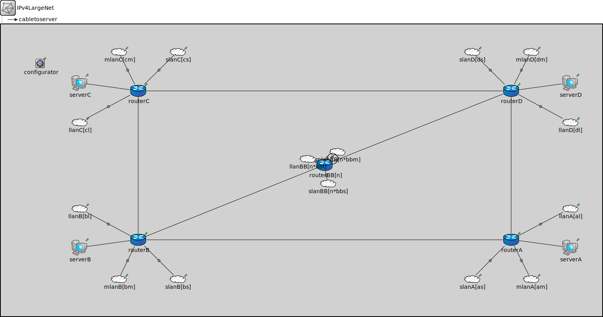

Package: inet.examples.inet.ipv4largenet
IPv4LargeNet
networkA large Ethernet LAN -- see model description
Usage diagram
The following diagram shows usage relationships between types. Unresolved types are missing from the diagram.
Parameters
| Name | Type | Default value | Description |
|---|---|---|---|
| n | int |
length of the "backbone" (n>5!) |
|
| bbs | int |
number of small LANs on "backbone" switches |
|
| bbm | int |
number of medium LANs on "backbone" switches |
|
| bbl | int |
number of large LANs on "backbone" switches |
|
| as | int |
number of small LANs on switch A |
|
| am | int |
number of medium LANs on switch A |
|
| al | int |
number of large LANs on switch A |
|
| bs | int | ||
| bm | int |
number of medium LANs on switch B |
|
| bl | int |
number of large LANs on switch B |
|
| cs | int | ||
| cm | int |
number of medium LANs on switch C |
|
| cl | int |
number of large LANs on switch C |
|
| ds | int |
number of small LANs on switch D |
|
| dm | int |
number of medium LANs on switch D |
|
| dl | int |
number of large LANs on switch D |
Properties
| Name | Value | Description |
|---|---|---|
| isNetwork |
Unassigned submodule parameters
| Name | Type | Default value | Description |
|---|---|---|---|
| routerBB.status.initialStatus | string | "UP" |
TODO @signal, @statistic |
| routerBB.pcapRecorder.verbose | bool | true |
whether to log packets on the module output |
| routerBB.pcapRecorder.pcapFile | string | "" |
the PCAP file to be written |
| routerBB.pcapRecorder.fileFormat | string | "pcapng" | |
| routerBB.pcapRecorder.snaplen | int | 65535 |
maximum number of bytes to record per packet |
| routerBB.pcapRecorder.dumpBadFrames | bool | true |
enable dump of frames with hasBitError |
| routerBB.pcapRecorder.moduleNamePatterns | string | "wlan[*] eth[*] ppp[*]" |
space-separated list of sibling module names to listen on |
| routerBB.pcapRecorder.sendingSignalNames | string | "packetSentToLower" |
space-separated list of outbound packet signals to subscribe to |
| routerBB.pcapRecorder.receivingSignalNames | string | "packetReceivedFromLower" |
space-separated list of inbound packet signals to subscribe to |
| routerBB.pcapRecorder.dumpProtocols | string | "ethernetmac ppp ieee80211mac" |
space-separated list of protocol names as defined in the Protocol class |
| routerBB.pcapRecorder.packetFilter | object | "*" |
which packets are considered, matches all packets by default |
| routerBB.pcapRecorder.helpers | string | "" |
usable PcapRecorder::IHelper helpers for accept packettype and store/convert packet as specified linktype currently available: "inet::AckingMacToEthernetPcapRecorderHelper" |
| routerBB.pcapRecorder.alwaysFlush | bool | false |
flush the pcapFile after each write to ensure that all packets are captured in case of a crash |
| routerBB.pcapRecorder.displayStringTextFormat | string | "rec: %n pks" | |
| routerBB.interfaceTable.displayAddresses | bool | false |
whether to display IP addresses on links |
| routerBB.cb.displayStringTextFormat | string | "processed %p pk (%l)" |
determines the text that is written on top of the submodule |
| routerBB.cb.forwardServiceRegistration | bool | true | |
| routerBB.cb.forwardProtocolRegistration | bool | true | |
| routerBB.bl.displayStringTextFormat | string | "processed %p pk (%l)" |
determines the text that is written on top of the submodule |
| routerBB.bl.forwardServiceRegistration | bool | true | |
| routerBB.bl.forwardProtocolRegistration | bool | true | |
| routerBB.li.displayStringTextFormat | string | "processed %p pk (%l)" |
determines the text that is written on top of the submodule |
| routerBB.li.forwardServiceRegistration | bool | true | |
| routerBB.li.forwardProtocolRegistration | bool | true | |
| routerBB.eth.bitrate | double | ||
| routerBB.nl.displayStringTextFormat | string | "processed %p pk (%l)" |
determines the text that is written on top of the submodule |
| routerBB.nl.forwardServiceRegistration | bool | true | |
| routerBB.nl.forwardProtocolRegistration | bool | true | |
| routerBB.tn.displayStringTextFormat | string | "processed %p pk (%l)" |
determines the text that is written on top of the submodule |
| routerBB.tn.forwardServiceRegistration | bool | true | |
| routerBB.tn.forwardProtocolRegistration | bool | true | |
| routerBB.at.displayStringTextFormat | string | "processed %p pk (%l)" |
determines the text that is written on top of the submodule |
| routerBB.at.forwardServiceRegistration | bool | true | |
| routerBB.at.forwardProtocolRegistration | bool | true | |
| routerBB.bgp.interfaceTableModule | string |
The path to the InterfaceTable module |
|
| routerBB.bgp.routingTableModule | string | ||
| routerBB.bgp.ospfRoutingModule | string | parent.hasOspf ? "^.ospf" : "" | |
| slanBB.router.status.initialStatus | string | "UP" |
TODO @signal, @statistic |
| slanBB.router.pcapRecorder.verbose | bool | true |
whether to log packets on the module output |
| slanBB.router.pcapRecorder.pcapFile | string | "" |
the PCAP file to be written |
| slanBB.router.pcapRecorder.fileFormat | string | "pcapng" | |
| slanBB.router.pcapRecorder.snaplen | int | 65535 |
maximum number of bytes to record per packet |
| slanBB.router.pcapRecorder.dumpBadFrames | bool | true |
enable dump of frames with hasBitError |
| slanBB.router.pcapRecorder.moduleNamePatterns | string | "wlan[*] eth[*] ppp[*]" |
space-separated list of sibling module names to listen on |
| slanBB.router.pcapRecorder.sendingSignalNames | string | "packetSentToLower" |
space-separated list of outbound packet signals to subscribe to |
| slanBB.router.pcapRecorder.receivingSignalNames | string | "packetReceivedFromLower" |
space-separated list of inbound packet signals to subscribe to |
| slanBB.router.pcapRecorder.dumpProtocols | string | "ethernetmac ppp ieee80211mac" |
space-separated list of protocol names as defined in the Protocol class |
| slanBB.router.pcapRecorder.packetFilter | object | "*" |
which packets are considered, matches all packets by default |
| slanBB.router.pcapRecorder.helpers | string | "" |
usable PcapRecorder::IHelper helpers for accept packettype and store/convert packet as specified linktype currently available: "inet::AckingMacToEthernetPcapRecorderHelper" |
| slanBB.router.pcapRecorder.alwaysFlush | bool | false |
flush the pcapFile after each write to ensure that all packets are captured in case of a crash |
| slanBB.router.pcapRecorder.displayStringTextFormat | string | "rec: %n pks" | |
| slanBB.router.interfaceTable.displayAddresses | bool | false |
whether to display IP addresses on links |
| slanBB.router.cb.displayStringTextFormat | string | "processed %p pk (%l)" |
determines the text that is written on top of the submodule |
| slanBB.router.cb.forwardServiceRegistration | bool | true | |
| slanBB.router.cb.forwardProtocolRegistration | bool | true | |
| slanBB.router.bl.displayStringTextFormat | string | "processed %p pk (%l)" |
determines the text that is written on top of the submodule |
| slanBB.router.bl.forwardServiceRegistration | bool | true | |
| slanBB.router.bl.forwardProtocolRegistration | bool | true | |
| slanBB.router.li.displayStringTextFormat | string | "processed %p pk (%l)" |
determines the text that is written on top of the submodule |
| slanBB.router.li.forwardServiceRegistration | bool | true | |
| slanBB.router.li.forwardProtocolRegistration | bool | true | |
| slanBB.router.eth.bitrate | double | ||
| slanBB.router.nl.displayStringTextFormat | string | "processed %p pk (%l)" |
determines the text that is written on top of the submodule |
| slanBB.router.nl.forwardServiceRegistration | bool | true | |
| slanBB.router.nl.forwardProtocolRegistration | bool | true | |
| slanBB.router.tn.displayStringTextFormat | string | "processed %p pk (%l)" |
determines the text that is written on top of the submodule |
| slanBB.router.tn.forwardServiceRegistration | bool | true | |
| slanBB.router.tn.forwardProtocolRegistration | bool | true | |
| slanBB.router.at.displayStringTextFormat | string | "processed %p pk (%l)" |
determines the text that is written on top of the submodule |
| slanBB.router.at.forwardServiceRegistration | bool | true | |
| slanBB.router.at.forwardProtocolRegistration | bool | true | |
| slanBB.router.bgp.interfaceTableModule | string |
The path to the InterfaceTable module |
|
| slanBB.router.bgp.routingTableModule | string | ||
| slanBB.router.bgp.ospfRoutingModule | string | parent.hasOspf ? "^.ospf" : "" | |
| slanBB.host.status.initialStatus | string | "UP" |
TODO @signal, @statistic |
| slanBB.host.pcapRecorder.verbose | bool | true |
whether to log packets on the module output |
| slanBB.host.pcapRecorder.pcapFile | string | "" |
the PCAP file to be written |
| slanBB.host.pcapRecorder.fileFormat | string | "pcapng" | |
| slanBB.host.pcapRecorder.snaplen | int | 65535 |
maximum number of bytes to record per packet |
| slanBB.host.pcapRecorder.dumpBadFrames | bool | true |
enable dump of frames with hasBitError |
| slanBB.host.pcapRecorder.moduleNamePatterns | string | "wlan[*] eth[*] ppp[*]" |
space-separated list of sibling module names to listen on |
| slanBB.host.pcapRecorder.sendingSignalNames | string | "packetSentToLower" |
space-separated list of outbound packet signals to subscribe to |
| slanBB.host.pcapRecorder.receivingSignalNames | string | "packetReceivedFromLower" |
space-separated list of inbound packet signals to subscribe to |
| slanBB.host.pcapRecorder.dumpProtocols | string | "ethernetmac ppp ieee80211mac" |
space-separated list of protocol names as defined in the Protocol class |
| slanBB.host.pcapRecorder.packetFilter | object | "*" |
which packets are considered, matches all packets by default |
| slanBB.host.pcapRecorder.helpers | string | "" |
usable PcapRecorder::IHelper helpers for accept packettype and store/convert packet as specified linktype currently available: "inet::AckingMacToEthernetPcapRecorderHelper" |
| slanBB.host.pcapRecorder.alwaysFlush | bool | false |
flush the pcapFile after each write to ensure that all packets are captured in case of a crash |
| slanBB.host.pcapRecorder.displayStringTextFormat | string | "rec: %n pks" | |
| slanBB.host.interfaceTable.displayAddresses | bool | false |
whether to display IP addresses on links |
| slanBB.host.cb.displayStringTextFormat | string | "processed %p pk (%l)" |
determines the text that is written on top of the submodule |
| slanBB.host.cb.forwardServiceRegistration | bool | true | |
| slanBB.host.cb.forwardProtocolRegistration | bool | true | |
| slanBB.host.bl.displayStringTextFormat | string | "processed %p pk (%l)" |
determines the text that is written on top of the submodule |
| slanBB.host.bl.forwardServiceRegistration | bool | true | |
| slanBB.host.bl.forwardProtocolRegistration | bool | true | |
| slanBB.host.li.displayStringTextFormat | string | "processed %p pk (%l)" |
determines the text that is written on top of the submodule |
| slanBB.host.li.forwardServiceRegistration | bool | true | |
| slanBB.host.li.forwardProtocolRegistration | bool | true | |
| slanBB.host.eth.bitrate | double | ||
| slanBB.host.nl.displayStringTextFormat | string | "processed %p pk (%l)" |
determines the text that is written on top of the submodule |
| slanBB.host.nl.forwardServiceRegistration | bool | true | |
| slanBB.host.nl.forwardProtocolRegistration | bool | true | |
| slanBB.host.tn.displayStringTextFormat | string | "processed %p pk (%l)" |
determines the text that is written on top of the submodule |
| slanBB.host.tn.forwardServiceRegistration | bool | true | |
| slanBB.host.tn.forwardProtocolRegistration | bool | true | |
| slanBB.host.at.displayStringTextFormat | string | "processed %p pk (%l)" |
determines the text that is written on top of the submodule |
| slanBB.host.at.forwardServiceRegistration | bool | true | |
| slanBB.host.at.forwardProtocolRegistration | bool | true | |
| mlanBB.router.status.initialStatus | string | "UP" |
TODO @signal, @statistic |
| mlanBB.router.pcapRecorder.verbose | bool | true |
whether to log packets on the module output |
| mlanBB.router.pcapRecorder.pcapFile | string | "" |
the PCAP file to be written |
| mlanBB.router.pcapRecorder.fileFormat | string | "pcapng" | |
| mlanBB.router.pcapRecorder.snaplen | int | 65535 |
maximum number of bytes to record per packet |
| mlanBB.router.pcapRecorder.dumpBadFrames | bool | true |
enable dump of frames with hasBitError |
| mlanBB.router.pcapRecorder.moduleNamePatterns | string | "wlan[*] eth[*] ppp[*]" |
space-separated list of sibling module names to listen on |
| mlanBB.router.pcapRecorder.sendingSignalNames | string | "packetSentToLower" |
space-separated list of outbound packet signals to subscribe to |
| mlanBB.router.pcapRecorder.receivingSignalNames | string | "packetReceivedFromLower" |
space-separated list of inbound packet signals to subscribe to |
| mlanBB.router.pcapRecorder.dumpProtocols | string | "ethernetmac ppp ieee80211mac" |
space-separated list of protocol names as defined in the Protocol class |
| mlanBB.router.pcapRecorder.packetFilter | object | "*" |
which packets are considered, matches all packets by default |
| mlanBB.router.pcapRecorder.helpers | string | "" |
usable PcapRecorder::IHelper helpers for accept packettype and store/convert packet as specified linktype currently available: "inet::AckingMacToEthernetPcapRecorderHelper" |
| mlanBB.router.pcapRecorder.alwaysFlush | bool | false |
flush the pcapFile after each write to ensure that all packets are captured in case of a crash |
| mlanBB.router.pcapRecorder.displayStringTextFormat | string | "rec: %n pks" | |
| mlanBB.router.interfaceTable.displayAddresses | bool | false |
whether to display IP addresses on links |
| mlanBB.router.cb.displayStringTextFormat | string | "processed %p pk (%l)" |
determines the text that is written on top of the submodule |
| mlanBB.router.cb.forwardServiceRegistration | bool | true | |
| mlanBB.router.cb.forwardProtocolRegistration | bool | true | |
| mlanBB.router.bl.displayStringTextFormat | string | "processed %p pk (%l)" |
determines the text that is written on top of the submodule |
| mlanBB.router.bl.forwardServiceRegistration | bool | true | |
| mlanBB.router.bl.forwardProtocolRegistration | bool | true | |
| mlanBB.router.li.displayStringTextFormat | string | "processed %p pk (%l)" |
determines the text that is written on top of the submodule |
| mlanBB.router.li.forwardServiceRegistration | bool | true | |
| mlanBB.router.li.forwardProtocolRegistration | bool | true | |
| mlanBB.router.eth.bitrate | double | ||
| mlanBB.router.nl.displayStringTextFormat | string | "processed %p pk (%l)" |
determines the text that is written on top of the submodule |
| mlanBB.router.nl.forwardServiceRegistration | bool | true | |
| mlanBB.router.nl.forwardProtocolRegistration | bool | true | |
| mlanBB.router.tn.displayStringTextFormat | string | "processed %p pk (%l)" |
determines the text that is written on top of the submodule |
| mlanBB.router.tn.forwardServiceRegistration | bool | true | |
| mlanBB.router.tn.forwardProtocolRegistration | bool | true | |
| mlanBB.router.at.displayStringTextFormat | string | "processed %p pk (%l)" |
determines the text that is written on top of the submodule |
| mlanBB.router.at.forwardServiceRegistration | bool | true | |
| mlanBB.router.at.forwardProtocolRegistration | bool | true | |
| mlanBB.router.bgp.interfaceTableModule | string |
The path to the InterfaceTable module |
|
| mlanBB.router.bgp.routingTableModule | string | ||
| mlanBB.router.bgp.ospfRoutingModule | string | parent.hasOspf ? "^.ospf" : "" | |
| mlanBB.switch.macTable.agingTime | double | ||
| mlanBB.switch.macTable.forwardingTableFile | string | ||
| mlanBB.switch.interfaceTable.displayAddresses | bool | false |
whether to display IP addresses on links |
| mlanBB.switch.l2NodeConfigurator.interfaceTableModule | string | ||
| mlanBB.switch.l2NodeConfigurator.l2ConfiguratorModule | string | "l2NetworkConfigurator" |
the absolute path to the ~L2NetworkConfigurator; use "" if there is no configurator |
| mlanBB.switch.status.initialStatus | string | "UP" |
TODO @signal, @statistic |
| mlanBB.switch.pcapRecorder.verbose | bool | true |
whether to log packets on the module output |
| mlanBB.switch.pcapRecorder.pcapFile | string | "" |
the PCAP file to be written |
| mlanBB.switch.pcapRecorder.fileFormat | string | "pcapng" | |
| mlanBB.switch.pcapRecorder.snaplen | int | 65535 |
maximum number of bytes to record per packet |
| mlanBB.switch.pcapRecorder.dumpBadFrames | bool | true |
enable dump of frames with hasBitError |
| mlanBB.switch.pcapRecorder.moduleNamePatterns | string | "wlan[*] eth[*] ppp[*]" |
space-separated list of sibling module names to listen on |
| mlanBB.switch.pcapRecorder.sendingSignalNames | string | "packetSentToLower" |
space-separated list of outbound packet signals to subscribe to |
| mlanBB.switch.pcapRecorder.receivingSignalNames | string | "packetReceivedFromLower" |
space-separated list of inbound packet signals to subscribe to |
| mlanBB.switch.pcapRecorder.dumpProtocols | string | "ethernetmac ppp ieee80211mac" |
space-separated list of protocol names as defined in the Protocol class |
| mlanBB.switch.pcapRecorder.packetFilter | object | "*" |
which packets are considered, matches all packets by default |
| mlanBB.switch.pcapRecorder.helpers | string | "" |
usable PcapRecorder::IHelper helpers for accept packettype and store/convert packet as specified linktype currently available: "inet::AckingMacToEthernetPcapRecorderHelper" |
| mlanBB.switch.pcapRecorder.alwaysFlush | bool | false |
flush the pcapFile after each write to ensure that all packets are captured in case of a crash |
| mlanBB.switch.pcapRecorder.displayStringTextFormat | string | "rec: %n pks" | |
| mlanBB.switch.stp.helloTime | double | ||
| mlanBB.switch.stp.forwardDelay | double | ||
| mlanBB.switch.stp.maxAge | double | ||
| mlanBB.switch.stp.bridgePriority | int | ||
| mlanBB.switch.stp.visualize | bool | ||
| mlanBB.switch.sc.displayStringTextFormat | string | "processed %p pk (%l)" |
determines the text that is written on top of the submodule |
| mlanBB.switch.sc.forwardServiceRegistration | bool | true | |
| mlanBB.switch.sc.forwardProtocolRegistration | bool | true | |
| mlanBB.switch.cb.displayStringTextFormat | string | "processed %p pk (%l)" |
determines the text that is written on top of the submodule |
| mlanBB.switch.cb.forwardServiceRegistration | bool | true | |
| mlanBB.switch.cb.forwardProtocolRegistration | bool | true | |
| mlanBB.switch.bl.displayStringTextFormat | string | "processed %p pk (%l)" |
determines the text that is written on top of the submodule |
| mlanBB.switch.bl.forwardServiceRegistration | bool | true | |
| mlanBB.switch.bl.forwardProtocolRegistration | bool | true | |
| mlanBB.switch.li.displayStringTextFormat | string | "processed %p pk (%l)" |
determines the text that is written on top of the submodule |
| mlanBB.switch.li.forwardServiceRegistration | bool | true | |
| mlanBB.switch.li.forwardProtocolRegistration | bool | true | |
| mlanBB.switch.eth.bitrate | double | ||
| mlanBB.host.status.initialStatus | string | "UP" |
TODO @signal, @statistic |
| mlanBB.host.pcapRecorder.verbose | bool | true |
whether to log packets on the module output |
| mlanBB.host.pcapRecorder.pcapFile | string | "" |
the PCAP file to be written |
| mlanBB.host.pcapRecorder.fileFormat | string | "pcapng" | |
| mlanBB.host.pcapRecorder.snaplen | int | 65535 |
maximum number of bytes to record per packet |
| mlanBB.host.pcapRecorder.dumpBadFrames | bool | true |
enable dump of frames with hasBitError |
| mlanBB.host.pcapRecorder.moduleNamePatterns | string | "wlan[*] eth[*] ppp[*]" |
space-separated list of sibling module names to listen on |
| mlanBB.host.pcapRecorder.sendingSignalNames | string | "packetSentToLower" |
space-separated list of outbound packet signals to subscribe to |
| mlanBB.host.pcapRecorder.receivingSignalNames | string | "packetReceivedFromLower" |
space-separated list of inbound packet signals to subscribe to |
| mlanBB.host.pcapRecorder.dumpProtocols | string | "ethernetmac ppp ieee80211mac" |
space-separated list of protocol names as defined in the Protocol class |
| mlanBB.host.pcapRecorder.packetFilter | object | "*" |
which packets are considered, matches all packets by default |
| mlanBB.host.pcapRecorder.helpers | string | "" |
usable PcapRecorder::IHelper helpers for accept packettype and store/convert packet as specified linktype currently available: "inet::AckingMacToEthernetPcapRecorderHelper" |
| mlanBB.host.pcapRecorder.alwaysFlush | bool | false |
flush the pcapFile after each write to ensure that all packets are captured in case of a crash |
| mlanBB.host.pcapRecorder.displayStringTextFormat | string | "rec: %n pks" | |
| mlanBB.host.interfaceTable.displayAddresses | bool | false |
whether to display IP addresses on links |
| mlanBB.host.cb.displayStringTextFormat | string | "processed %p pk (%l)" |
determines the text that is written on top of the submodule |
| mlanBB.host.cb.forwardServiceRegistration | bool | true | |
| mlanBB.host.cb.forwardProtocolRegistration | bool | true | |
| mlanBB.host.bl.displayStringTextFormat | string | "processed %p pk (%l)" |
determines the text that is written on top of the submodule |
| mlanBB.host.bl.forwardServiceRegistration | bool | true | |
| mlanBB.host.bl.forwardProtocolRegistration | bool | true | |
| mlanBB.host.li.displayStringTextFormat | string | "processed %p pk (%l)" |
determines the text that is written on top of the submodule |
| mlanBB.host.li.forwardServiceRegistration | bool | true | |
| mlanBB.host.li.forwardProtocolRegistration | bool | true | |
| mlanBB.host.eth.bitrate | double | ||
| mlanBB.host.nl.displayStringTextFormat | string | "processed %p pk (%l)" |
determines the text that is written on top of the submodule |
| mlanBB.host.nl.forwardServiceRegistration | bool | true | |
| mlanBB.host.nl.forwardProtocolRegistration | bool | true | |
| mlanBB.host.tn.displayStringTextFormat | string | "processed %p pk (%l)" |
determines the text that is written on top of the submodule |
| mlanBB.host.tn.forwardServiceRegistration | bool | true | |
| mlanBB.host.tn.forwardProtocolRegistration | bool | true | |
| mlanBB.host.at.displayStringTextFormat | string | "processed %p pk (%l)" |
determines the text that is written on top of the submodule |
| mlanBB.host.at.forwardServiceRegistration | bool | true | |
| mlanBB.host.at.forwardProtocolRegistration | bool | true | |
| mlanBB.hhost.status.initialStatus | string | "UP" |
TODO @signal, @statistic |
| mlanBB.hhost.pcapRecorder.verbose | bool | true |
whether to log packets on the module output |
| mlanBB.hhost.pcapRecorder.pcapFile | string | "" |
the PCAP file to be written |
| mlanBB.hhost.pcapRecorder.fileFormat | string | "pcapng" | |
| mlanBB.hhost.pcapRecorder.snaplen | int | 65535 |
maximum number of bytes to record per packet |
| mlanBB.hhost.pcapRecorder.dumpBadFrames | bool | true |
enable dump of frames with hasBitError |
| mlanBB.hhost.pcapRecorder.moduleNamePatterns | string | "wlan[*] eth[*] ppp[*]" |
space-separated list of sibling module names to listen on |
| mlanBB.hhost.pcapRecorder.sendingSignalNames | string | "packetSentToLower" |
space-separated list of outbound packet signals to subscribe to |
| mlanBB.hhost.pcapRecorder.receivingSignalNames | string | "packetReceivedFromLower" |
space-separated list of inbound packet signals to subscribe to |
| mlanBB.hhost.pcapRecorder.dumpProtocols | string | "ethernetmac ppp ieee80211mac" |
space-separated list of protocol names as defined in the Protocol class |
| mlanBB.hhost.pcapRecorder.packetFilter | object | "*" |
which packets are considered, matches all packets by default |
| mlanBB.hhost.pcapRecorder.helpers | string | "" |
usable PcapRecorder::IHelper helpers for accept packettype and store/convert packet as specified linktype currently available: "inet::AckingMacToEthernetPcapRecorderHelper" |
| mlanBB.hhost.pcapRecorder.alwaysFlush | bool | false |
flush the pcapFile after each write to ensure that all packets are captured in case of a crash |
| mlanBB.hhost.pcapRecorder.displayStringTextFormat | string | "rec: %n pks" | |
| mlanBB.hhost.interfaceTable.displayAddresses | bool | false |
whether to display IP addresses on links |
| mlanBB.hhost.cb.displayStringTextFormat | string | "processed %p pk (%l)" |
determines the text that is written on top of the submodule |
| mlanBB.hhost.cb.forwardServiceRegistration | bool | true | |
| mlanBB.hhost.cb.forwardProtocolRegistration | bool | true | |
| mlanBB.hhost.bl.displayStringTextFormat | string | "processed %p pk (%l)" |
determines the text that is written on top of the submodule |
| mlanBB.hhost.bl.forwardServiceRegistration | bool | true | |
| mlanBB.hhost.bl.forwardProtocolRegistration | bool | true | |
| mlanBB.hhost.li.displayStringTextFormat | string | "processed %p pk (%l)" |
determines the text that is written on top of the submodule |
| mlanBB.hhost.li.forwardServiceRegistration | bool | true | |
| mlanBB.hhost.li.forwardProtocolRegistration | bool | true | |
| mlanBB.hhost.eth.bitrate | double | ||
| mlanBB.hhost.nl.displayStringTextFormat | string | "processed %p pk (%l)" |
determines the text that is written on top of the submodule |
| mlanBB.hhost.nl.forwardServiceRegistration | bool | true | |
| mlanBB.hhost.nl.forwardProtocolRegistration | bool | true | |
| mlanBB.hhost.tn.displayStringTextFormat | string | "processed %p pk (%l)" |
determines the text that is written on top of the submodule |
| mlanBB.hhost.tn.forwardServiceRegistration | bool | true | |
| mlanBB.hhost.tn.forwardProtocolRegistration | bool | true | |
| mlanBB.hhost.at.displayStringTextFormat | string | "processed %p pk (%l)" |
determines the text that is written on top of the submodule |
| mlanBB.hhost.at.forwardServiceRegistration | bool | true | |
| mlanBB.hhost.at.forwardProtocolRegistration | bool | true | |
| llanBB.router.status.initialStatus | string | "UP" |
TODO @signal, @statistic |
| llanBB.router.pcapRecorder.verbose | bool | true |
whether to log packets on the module output |
| llanBB.router.pcapRecorder.pcapFile | string | "" |
the PCAP file to be written |
| llanBB.router.pcapRecorder.fileFormat | string | "pcapng" | |
| llanBB.router.pcapRecorder.snaplen | int | 65535 |
maximum number of bytes to record per packet |
| llanBB.router.pcapRecorder.dumpBadFrames | bool | true |
enable dump of frames with hasBitError |
| llanBB.router.pcapRecorder.moduleNamePatterns | string | "wlan[*] eth[*] ppp[*]" |
space-separated list of sibling module names to listen on |
| llanBB.router.pcapRecorder.sendingSignalNames | string | "packetSentToLower" |
space-separated list of outbound packet signals to subscribe to |
| llanBB.router.pcapRecorder.receivingSignalNames | string | "packetReceivedFromLower" |
space-separated list of inbound packet signals to subscribe to |
| llanBB.router.pcapRecorder.dumpProtocols | string | "ethernetmac ppp ieee80211mac" |
space-separated list of protocol names as defined in the Protocol class |
| llanBB.router.pcapRecorder.packetFilter | object | "*" |
which packets are considered, matches all packets by default |
| llanBB.router.pcapRecorder.helpers | string | "" |
usable PcapRecorder::IHelper helpers for accept packettype and store/convert packet as specified linktype currently available: "inet::AckingMacToEthernetPcapRecorderHelper" |
| llanBB.router.pcapRecorder.alwaysFlush | bool | false |
flush the pcapFile after each write to ensure that all packets are captured in case of a crash |
| llanBB.router.pcapRecorder.displayStringTextFormat | string | "rec: %n pks" | |
| llanBB.router.interfaceTable.displayAddresses | bool | false |
whether to display IP addresses on links |
| llanBB.router.cb.displayStringTextFormat | string | "processed %p pk (%l)" |
determines the text that is written on top of the submodule |
| llanBB.router.cb.forwardServiceRegistration | bool | true | |
| llanBB.router.cb.forwardProtocolRegistration | bool | true | |
| llanBB.router.bl.displayStringTextFormat | string | "processed %p pk (%l)" |
determines the text that is written on top of the submodule |
| llanBB.router.bl.forwardServiceRegistration | bool | true | |
| llanBB.router.bl.forwardProtocolRegistration | bool | true | |
| llanBB.router.li.displayStringTextFormat | string | "processed %p pk (%l)" |
determines the text that is written on top of the submodule |
| llanBB.router.li.forwardServiceRegistration | bool | true | |
| llanBB.router.li.forwardProtocolRegistration | bool | true | |
| llanBB.router.eth.bitrate | double | ||
| llanBB.router.nl.displayStringTextFormat | string | "processed %p pk (%l)" |
determines the text that is written on top of the submodule |
| llanBB.router.nl.forwardServiceRegistration | bool | true | |
| llanBB.router.nl.forwardProtocolRegistration | bool | true | |
| llanBB.router.tn.displayStringTextFormat | string | "processed %p pk (%l)" |
determines the text that is written on top of the submodule |
| llanBB.router.tn.forwardServiceRegistration | bool | true | |
| llanBB.router.tn.forwardProtocolRegistration | bool | true | |
| llanBB.router.at.displayStringTextFormat | string | "processed %p pk (%l)" |
determines the text that is written on top of the submodule |
| llanBB.router.at.forwardServiceRegistration | bool | true | |
| llanBB.router.at.forwardProtocolRegistration | bool | true | |
| llanBB.router.bgp.interfaceTableModule | string |
The path to the InterfaceTable module |
|
| llanBB.router.bgp.routingTableModule | string | ||
| llanBB.router.bgp.ospfRoutingModule | string | parent.hasOspf ? "^.ospf" : "" | |
| llanBB.switch.macTable.agingTime | double | ||
| llanBB.switch.macTable.forwardingTableFile | string | ||
| llanBB.switch.interfaceTable.displayAddresses | bool | false |
whether to display IP addresses on links |
| llanBB.switch.l2NodeConfigurator.interfaceTableModule | string | ||
| llanBB.switch.l2NodeConfigurator.l2ConfiguratorModule | string | "l2NetworkConfigurator" |
the absolute path to the ~L2NetworkConfigurator; use "" if there is no configurator |
| llanBB.switch.status.initialStatus | string | "UP" |
TODO @signal, @statistic |
| llanBB.switch.pcapRecorder.verbose | bool | true |
whether to log packets on the module output |
| llanBB.switch.pcapRecorder.pcapFile | string | "" |
the PCAP file to be written |
| llanBB.switch.pcapRecorder.fileFormat | string | "pcapng" | |
| llanBB.switch.pcapRecorder.snaplen | int | 65535 |
maximum number of bytes to record per packet |
| llanBB.switch.pcapRecorder.dumpBadFrames | bool | true |
enable dump of frames with hasBitError |
| llanBB.switch.pcapRecorder.moduleNamePatterns | string | "wlan[*] eth[*] ppp[*]" |
space-separated list of sibling module names to listen on |
| llanBB.switch.pcapRecorder.sendingSignalNames | string | "packetSentToLower" |
space-separated list of outbound packet signals to subscribe to |
| llanBB.switch.pcapRecorder.receivingSignalNames | string | "packetReceivedFromLower" |
space-separated list of inbound packet signals to subscribe to |
| llanBB.switch.pcapRecorder.dumpProtocols | string | "ethernetmac ppp ieee80211mac" |
space-separated list of protocol names as defined in the Protocol class |
| llanBB.switch.pcapRecorder.packetFilter | object | "*" |
which packets are considered, matches all packets by default |
| llanBB.switch.pcapRecorder.helpers | string | "" |
usable PcapRecorder::IHelper helpers for accept packettype and store/convert packet as specified linktype currently available: "inet::AckingMacToEthernetPcapRecorderHelper" |
| llanBB.switch.pcapRecorder.alwaysFlush | bool | false |
flush the pcapFile after each write to ensure that all packets are captured in case of a crash |
| llanBB.switch.pcapRecorder.displayStringTextFormat | string | "rec: %n pks" | |
| llanBB.switch.stp.helloTime | double | ||
| llanBB.switch.stp.forwardDelay | double | ||
| llanBB.switch.stp.maxAge | double | ||
| llanBB.switch.stp.bridgePriority | int | ||
| llanBB.switch.stp.visualize | bool | ||
| llanBB.switch.sc.displayStringTextFormat | string | "processed %p pk (%l)" |
determines the text that is written on top of the submodule |
| llanBB.switch.sc.forwardServiceRegistration | bool | true | |
| llanBB.switch.sc.forwardProtocolRegistration | bool | true | |
| llanBB.switch.cb.displayStringTextFormat | string | "processed %p pk (%l)" |
determines the text that is written on top of the submodule |
| llanBB.switch.cb.forwardServiceRegistration | bool | true | |
| llanBB.switch.cb.forwardProtocolRegistration | bool | true | |
| llanBB.switch.bl.displayStringTextFormat | string | "processed %p pk (%l)" |
determines the text that is written on top of the submodule |
| llanBB.switch.bl.forwardServiceRegistration | bool | true | |
| llanBB.switch.bl.forwardProtocolRegistration | bool | true | |
| llanBB.switch.li.displayStringTextFormat | string | "processed %p pk (%l)" |
determines the text that is written on top of the submodule |
| llanBB.switch.li.forwardServiceRegistration | bool | true | |
| llanBB.switch.li.forwardProtocolRegistration | bool | true | |
| llanBB.switch.eth.bitrate | double | ||
| llanBB.host.status.initialStatus | string | "UP" |
TODO @signal, @statistic |
| llanBB.host.pcapRecorder.verbose | bool | true |
whether to log packets on the module output |
| llanBB.host.pcapRecorder.pcapFile | string | "" |
the PCAP file to be written |
| llanBB.host.pcapRecorder.fileFormat | string | "pcapng" | |
| llanBB.host.pcapRecorder.snaplen | int | 65535 |
maximum number of bytes to record per packet |
| llanBB.host.pcapRecorder.dumpBadFrames | bool | true |
enable dump of frames with hasBitError |
| llanBB.host.pcapRecorder.moduleNamePatterns | string | "wlan[*] eth[*] ppp[*]" |
space-separated list of sibling module names to listen on |
| llanBB.host.pcapRecorder.sendingSignalNames | string | "packetSentToLower" |
space-separated list of outbound packet signals to subscribe to |
| llanBB.host.pcapRecorder.receivingSignalNames | string | "packetReceivedFromLower" |
space-separated list of inbound packet signals to subscribe to |
| llanBB.host.pcapRecorder.dumpProtocols | string | "ethernetmac ppp ieee80211mac" |
space-separated list of protocol names as defined in the Protocol class |
| llanBB.host.pcapRecorder.packetFilter | object | "*" |
which packets are considered, matches all packets by default |
| llanBB.host.pcapRecorder.helpers | string | "" |
usable PcapRecorder::IHelper helpers for accept packettype and store/convert packet as specified linktype currently available: "inet::AckingMacToEthernetPcapRecorderHelper" |
| llanBB.host.pcapRecorder.alwaysFlush | bool | false |
flush the pcapFile after each write to ensure that all packets are captured in case of a crash |
| llanBB.host.pcapRecorder.displayStringTextFormat | string | "rec: %n pks" | |
| llanBB.host.interfaceTable.displayAddresses | bool | false |
whether to display IP addresses on links |
| llanBB.host.cb.displayStringTextFormat | string | "processed %p pk (%l)" |
determines the text that is written on top of the submodule |
| llanBB.host.cb.forwardServiceRegistration | bool | true | |
| llanBB.host.cb.forwardProtocolRegistration | bool | true | |
| llanBB.host.bl.displayStringTextFormat | string | "processed %p pk (%l)" |
determines the text that is written on top of the submodule |
| llanBB.host.bl.forwardServiceRegistration | bool | true | |
| llanBB.host.bl.forwardProtocolRegistration | bool | true | |
| llanBB.host.li.displayStringTextFormat | string | "processed %p pk (%l)" |
determines the text that is written on top of the submodule |
| llanBB.host.li.forwardServiceRegistration | bool | true | |
| llanBB.host.li.forwardProtocolRegistration | bool | true | |
| llanBB.host.eth.bitrate | double | ||
| llanBB.host.nl.displayStringTextFormat | string | "processed %p pk (%l)" |
determines the text that is written on top of the submodule |
| llanBB.host.nl.forwardServiceRegistration | bool | true | |
| llanBB.host.nl.forwardProtocolRegistration | bool | true | |
| llanBB.host.tn.displayStringTextFormat | string | "processed %p pk (%l)" |
determines the text that is written on top of the submodule |
| llanBB.host.tn.forwardServiceRegistration | bool | true | |
| llanBB.host.tn.forwardProtocolRegistration | bool | true | |
| llanBB.host.at.displayStringTextFormat | string | "processed %p pk (%l)" |
determines the text that is written on top of the submodule |
| llanBB.host.at.forwardServiceRegistration | bool | true | |
| llanBB.host.at.forwardProtocolRegistration | bool | true | |
| llanBB.hhost.status.initialStatus | string | "UP" |
TODO @signal, @statistic |
| llanBB.hhost.pcapRecorder.verbose | bool | true |
whether to log packets on the module output |
| llanBB.hhost.pcapRecorder.pcapFile | string | "" |
the PCAP file to be written |
| llanBB.hhost.pcapRecorder.fileFormat | string | "pcapng" | |
| llanBB.hhost.pcapRecorder.snaplen | int | 65535 |
maximum number of bytes to record per packet |
| llanBB.hhost.pcapRecorder.dumpBadFrames | bool | true |
enable dump of frames with hasBitError |
| llanBB.hhost.pcapRecorder.moduleNamePatterns | string | "wlan[*] eth[*] ppp[*]" |
space-separated list of sibling module names to listen on |
| llanBB.hhost.pcapRecorder.sendingSignalNames | string | "packetSentToLower" |
space-separated list of outbound packet signals to subscribe to |
| llanBB.hhost.pcapRecorder.receivingSignalNames | string | "packetReceivedFromLower" |
space-separated list of inbound packet signals to subscribe to |
| llanBB.hhost.pcapRecorder.dumpProtocols | string | "ethernetmac ppp ieee80211mac" |
space-separated list of protocol names as defined in the Protocol class |
| llanBB.hhost.pcapRecorder.packetFilter | object | "*" |
which packets are considered, matches all packets by default |
| llanBB.hhost.pcapRecorder.helpers | string | "" |
usable PcapRecorder::IHelper helpers for accept packettype and store/convert packet as specified linktype currently available: "inet::AckingMacToEthernetPcapRecorderHelper" |
| llanBB.hhost.pcapRecorder.alwaysFlush | bool | false |
flush the pcapFile after each write to ensure that all packets are captured in case of a crash |
| llanBB.hhost.pcapRecorder.displayStringTextFormat | string | "rec: %n pks" | |
| llanBB.hhost.interfaceTable.displayAddresses | bool | false |
whether to display IP addresses on links |
| llanBB.hhost.cb.displayStringTextFormat | string | "processed %p pk (%l)" |
determines the text that is written on top of the submodule |
| llanBB.hhost.cb.forwardServiceRegistration | bool | true | |
| llanBB.hhost.cb.forwardProtocolRegistration | bool | true | |
| llanBB.hhost.bl.displayStringTextFormat | string | "processed %p pk (%l)" |
determines the text that is written on top of the submodule |
| llanBB.hhost.bl.forwardServiceRegistration | bool | true | |
| llanBB.hhost.bl.forwardProtocolRegistration | bool | true | |
| llanBB.hhost.li.displayStringTextFormat | string | "processed %p pk (%l)" |
determines the text that is written on top of the submodule |
| llanBB.hhost.li.forwardServiceRegistration | bool | true | |
| llanBB.hhost.li.forwardProtocolRegistration | bool | true | |
| llanBB.hhost.eth.bitrate | double | ||
| llanBB.hhost.nl.displayStringTextFormat | string | "processed %p pk (%l)" |
determines the text that is written on top of the submodule |
| llanBB.hhost.nl.forwardServiceRegistration | bool | true | |
| llanBB.hhost.nl.forwardProtocolRegistration | bool | true | |
| llanBB.hhost.tn.displayStringTextFormat | string | "processed %p pk (%l)" |
determines the text that is written on top of the submodule |
| llanBB.hhost.tn.forwardServiceRegistration | bool | true | |
| llanBB.hhost.tn.forwardProtocolRegistration | bool | true | |
| llanBB.hhost.at.displayStringTextFormat | string | "processed %p pk (%l)" |
determines the text that is written on top of the submodule |
| llanBB.hhost.at.forwardServiceRegistration | bool | true | |
| llanBB.hhost.at.forwardProtocolRegistration | bool | true | |
| llanBB.bhost.status.initialStatus | string | "UP" |
TODO @signal, @statistic |
| llanBB.bhost.pcapRecorder.verbose | bool | true |
whether to log packets on the module output |
| llanBB.bhost.pcapRecorder.pcapFile | string | "" |
the PCAP file to be written |
| llanBB.bhost.pcapRecorder.fileFormat | string | "pcapng" | |
| llanBB.bhost.pcapRecorder.snaplen | int | 65535 |
maximum number of bytes to record per packet |
| llanBB.bhost.pcapRecorder.dumpBadFrames | bool | true |
enable dump of frames with hasBitError |
| llanBB.bhost.pcapRecorder.moduleNamePatterns | string | "wlan[*] eth[*] ppp[*]" |
space-separated list of sibling module names to listen on |
| llanBB.bhost.pcapRecorder.sendingSignalNames | string | "packetSentToLower" |
space-separated list of outbound packet signals to subscribe to |
| llanBB.bhost.pcapRecorder.receivingSignalNames | string | "packetReceivedFromLower" |
space-separated list of inbound packet signals to subscribe to |
| llanBB.bhost.pcapRecorder.dumpProtocols | string | "ethernetmac ppp ieee80211mac" |
space-separated list of protocol names as defined in the Protocol class |
| llanBB.bhost.pcapRecorder.packetFilter | object | "*" |
which packets are considered, matches all packets by default |
| llanBB.bhost.pcapRecorder.helpers | string | "" |
usable PcapRecorder::IHelper helpers for accept packettype and store/convert packet as specified linktype currently available: "inet::AckingMacToEthernetPcapRecorderHelper" |
| llanBB.bhost.pcapRecorder.alwaysFlush | bool | false |
flush the pcapFile after each write to ensure that all packets are captured in case of a crash |
| llanBB.bhost.pcapRecorder.displayStringTextFormat | string | "rec: %n pks" | |
| llanBB.bhost.interfaceTable.displayAddresses | bool | false |
whether to display IP addresses on links |
| llanBB.bhost.cb.displayStringTextFormat | string | "processed %p pk (%l)" |
determines the text that is written on top of the submodule |
| llanBB.bhost.cb.forwardServiceRegistration | bool | true | |
| llanBB.bhost.cb.forwardProtocolRegistration | bool | true | |
| llanBB.bhost.bl.displayStringTextFormat | string | "processed %p pk (%l)" |
determines the text that is written on top of the submodule |
| llanBB.bhost.bl.forwardServiceRegistration | bool | true | |
| llanBB.bhost.bl.forwardProtocolRegistration | bool | true | |
| llanBB.bhost.li.displayStringTextFormat | string | "processed %p pk (%l)" |
determines the text that is written on top of the submodule |
| llanBB.bhost.li.forwardServiceRegistration | bool | true | |
| llanBB.bhost.li.forwardProtocolRegistration | bool | true | |
| llanBB.bhost.eth.bitrate | double | ||
| llanBB.bhost.nl.displayStringTextFormat | string | "processed %p pk (%l)" |
determines the text that is written on top of the submodule |
| llanBB.bhost.nl.forwardServiceRegistration | bool | true | |
| llanBB.bhost.nl.forwardProtocolRegistration | bool | true | |
| llanBB.bhost.tn.displayStringTextFormat | string | "processed %p pk (%l)" |
determines the text that is written on top of the submodule |
| llanBB.bhost.tn.forwardServiceRegistration | bool | true | |
| llanBB.bhost.tn.forwardProtocolRegistration | bool | true | |
| llanBB.bhost.at.displayStringTextFormat | string | "processed %p pk (%l)" |
determines the text that is written on top of the submodule |
| llanBB.bhost.at.forwardServiceRegistration | bool | true | |
| llanBB.bhost.at.forwardProtocolRegistration | bool | true | |
| routerA.status.initialStatus | string | "UP" |
TODO @signal, @statistic |
| routerA.pcapRecorder.verbose | bool | true |
whether to log packets on the module output |
| routerA.pcapRecorder.pcapFile | string | "" |
the PCAP file to be written |
| routerA.pcapRecorder.fileFormat | string | "pcapng" | |
| routerA.pcapRecorder.snaplen | int | 65535 |
maximum number of bytes to record per packet |
| routerA.pcapRecorder.dumpBadFrames | bool | true |
enable dump of frames with hasBitError |
| routerA.pcapRecorder.moduleNamePatterns | string | "wlan[*] eth[*] ppp[*]" |
space-separated list of sibling module names to listen on |
| routerA.pcapRecorder.sendingSignalNames | string | "packetSentToLower" |
space-separated list of outbound packet signals to subscribe to |
| routerA.pcapRecorder.receivingSignalNames | string | "packetReceivedFromLower" |
space-separated list of inbound packet signals to subscribe to |
| routerA.pcapRecorder.dumpProtocols | string | "ethernetmac ppp ieee80211mac" |
space-separated list of protocol names as defined in the Protocol class |
| routerA.pcapRecorder.packetFilter | object | "*" |
which packets are considered, matches all packets by default |
| routerA.pcapRecorder.helpers | string | "" |
usable PcapRecorder::IHelper helpers for accept packettype and store/convert packet as specified linktype currently available: "inet::AckingMacToEthernetPcapRecorderHelper" |
| routerA.pcapRecorder.alwaysFlush | bool | false |
flush the pcapFile after each write to ensure that all packets are captured in case of a crash |
| routerA.pcapRecorder.displayStringTextFormat | string | "rec: %n pks" | |
| routerA.interfaceTable.displayAddresses | bool | false |
whether to display IP addresses on links |
| routerA.cb.displayStringTextFormat | string | "processed %p pk (%l)" |
determines the text that is written on top of the submodule |
| routerA.cb.forwardServiceRegistration | bool | true | |
| routerA.cb.forwardProtocolRegistration | bool | true | |
| routerA.bl.displayStringTextFormat | string | "processed %p pk (%l)" |
determines the text that is written on top of the submodule |
| routerA.bl.forwardServiceRegistration | bool | true | |
| routerA.bl.forwardProtocolRegistration | bool | true | |
| routerA.li.displayStringTextFormat | string | "processed %p pk (%l)" |
determines the text that is written on top of the submodule |
| routerA.li.forwardServiceRegistration | bool | true | |
| routerA.li.forwardProtocolRegistration | bool | true | |
| routerA.eth.bitrate | double | ||
| routerA.nl.displayStringTextFormat | string | "processed %p pk (%l)" |
determines the text that is written on top of the submodule |
| routerA.nl.forwardServiceRegistration | bool | true | |
| routerA.nl.forwardProtocolRegistration | bool | true | |
| routerA.tn.displayStringTextFormat | string | "processed %p pk (%l)" |
determines the text that is written on top of the submodule |
| routerA.tn.forwardServiceRegistration | bool | true | |
| routerA.tn.forwardProtocolRegistration | bool | true | |
| routerA.at.displayStringTextFormat | string | "processed %p pk (%l)" |
determines the text that is written on top of the submodule |
| routerA.at.forwardServiceRegistration | bool | true | |
| routerA.at.forwardProtocolRegistration | bool | true | |
| routerA.bgp.interfaceTableModule | string |
The path to the InterfaceTable module |
|
| routerA.bgp.routingTableModule | string | ||
| routerA.bgp.ospfRoutingModule | string | parent.hasOspf ? "^.ospf" : "" | |
| serverA.status.initialStatus | string | "UP" |
TODO @signal, @statistic |
| serverA.pcapRecorder.verbose | bool | true |
whether to log packets on the module output |
| serverA.pcapRecorder.pcapFile | string | "" |
the PCAP file to be written |
| serverA.pcapRecorder.fileFormat | string | "pcapng" | |
| serverA.pcapRecorder.snaplen | int | 65535 |
maximum number of bytes to record per packet |
| serverA.pcapRecorder.dumpBadFrames | bool | true |
enable dump of frames with hasBitError |
| serverA.pcapRecorder.moduleNamePatterns | string | "wlan[*] eth[*] ppp[*]" |
space-separated list of sibling module names to listen on |
| serverA.pcapRecorder.sendingSignalNames | string | "packetSentToLower" |
space-separated list of outbound packet signals to subscribe to |
| serverA.pcapRecorder.receivingSignalNames | string | "packetReceivedFromLower" |
space-separated list of inbound packet signals to subscribe to |
| serverA.pcapRecorder.dumpProtocols | string | "ethernetmac ppp ieee80211mac" |
space-separated list of protocol names as defined in the Protocol class |
| serverA.pcapRecorder.packetFilter | object | "*" |
which packets are considered, matches all packets by default |
| serverA.pcapRecorder.helpers | string | "" |
usable PcapRecorder::IHelper helpers for accept packettype and store/convert packet as specified linktype currently available: "inet::AckingMacToEthernetPcapRecorderHelper" |
| serverA.pcapRecorder.alwaysFlush | bool | false |
flush the pcapFile after each write to ensure that all packets are captured in case of a crash |
| serverA.pcapRecorder.displayStringTextFormat | string | "rec: %n pks" | |
| serverA.interfaceTable.displayAddresses | bool | false |
whether to display IP addresses on links |
| serverA.cb.displayStringTextFormat | string | "processed %p pk (%l)" |
determines the text that is written on top of the submodule |
| serverA.cb.forwardServiceRegistration | bool | true | |
| serverA.cb.forwardProtocolRegistration | bool | true | |
| serverA.bl.displayStringTextFormat | string | "processed %p pk (%l)" |
determines the text that is written on top of the submodule |
| serverA.bl.forwardServiceRegistration | bool | true | |
| serverA.bl.forwardProtocolRegistration | bool | true | |
| serverA.li.displayStringTextFormat | string | "processed %p pk (%l)" |
determines the text that is written on top of the submodule |
| serverA.li.forwardServiceRegistration | bool | true | |
| serverA.li.forwardProtocolRegistration | bool | true | |
| serverA.eth.bitrate | double | ||
| serverA.nl.displayStringTextFormat | string | "processed %p pk (%l)" |
determines the text that is written on top of the submodule |
| serverA.nl.forwardServiceRegistration | bool | true | |
| serverA.nl.forwardProtocolRegistration | bool | true | |
| serverA.tn.displayStringTextFormat | string | "processed %p pk (%l)" |
determines the text that is written on top of the submodule |
| serverA.tn.forwardServiceRegistration | bool | true | |
| serverA.tn.forwardProtocolRegistration | bool | true | |
| serverA.at.displayStringTextFormat | string | "processed %p pk (%l)" |
determines the text that is written on top of the submodule |
| serverA.at.forwardServiceRegistration | bool | true | |
| serverA.at.forwardProtocolRegistration | bool | true | |
| slanA.router.status.initialStatus | string | "UP" |
TODO @signal, @statistic |
| slanA.router.pcapRecorder.verbose | bool | true |
whether to log packets on the module output |
| slanA.router.pcapRecorder.pcapFile | string | "" |
the PCAP file to be written |
| slanA.router.pcapRecorder.fileFormat | string | "pcapng" | |
| slanA.router.pcapRecorder.snaplen | int | 65535 |
maximum number of bytes to record per packet |
| slanA.router.pcapRecorder.dumpBadFrames | bool | true |
enable dump of frames with hasBitError |
| slanA.router.pcapRecorder.moduleNamePatterns | string | "wlan[*] eth[*] ppp[*]" |
space-separated list of sibling module names to listen on |
| slanA.router.pcapRecorder.sendingSignalNames | string | "packetSentToLower" |
space-separated list of outbound packet signals to subscribe to |
| slanA.router.pcapRecorder.receivingSignalNames | string | "packetReceivedFromLower" |
space-separated list of inbound packet signals to subscribe to |
| slanA.router.pcapRecorder.dumpProtocols | string | "ethernetmac ppp ieee80211mac" |
space-separated list of protocol names as defined in the Protocol class |
| slanA.router.pcapRecorder.packetFilter | object | "*" |
which packets are considered, matches all packets by default |
| slanA.router.pcapRecorder.helpers | string | "" |
usable PcapRecorder::IHelper helpers for accept packettype and store/convert packet as specified linktype currently available: "inet::AckingMacToEthernetPcapRecorderHelper" |
| slanA.router.pcapRecorder.alwaysFlush | bool | false |
flush the pcapFile after each write to ensure that all packets are captured in case of a crash |
| slanA.router.pcapRecorder.displayStringTextFormat | string | "rec: %n pks" | |
| slanA.router.interfaceTable.displayAddresses | bool | false |
whether to display IP addresses on links |
| slanA.router.cb.displayStringTextFormat | string | "processed %p pk (%l)" |
determines the text that is written on top of the submodule |
| slanA.router.cb.forwardServiceRegistration | bool | true | |
| slanA.router.cb.forwardProtocolRegistration | bool | true | |
| slanA.router.bl.displayStringTextFormat | string | "processed %p pk (%l)" |
determines the text that is written on top of the submodule |
| slanA.router.bl.forwardServiceRegistration | bool | true | |
| slanA.router.bl.forwardProtocolRegistration | bool | true | |
| slanA.router.li.displayStringTextFormat | string | "processed %p pk (%l)" |
determines the text that is written on top of the submodule |
| slanA.router.li.forwardServiceRegistration | bool | true | |
| slanA.router.li.forwardProtocolRegistration | bool | true | |
| slanA.router.eth.bitrate | double | ||
| slanA.router.nl.displayStringTextFormat | string | "processed %p pk (%l)" |
determines the text that is written on top of the submodule |
| slanA.router.nl.forwardServiceRegistration | bool | true | |
| slanA.router.nl.forwardProtocolRegistration | bool | true | |
| slanA.router.tn.displayStringTextFormat | string | "processed %p pk (%l)" |
determines the text that is written on top of the submodule |
| slanA.router.tn.forwardServiceRegistration | bool | true | |
| slanA.router.tn.forwardProtocolRegistration | bool | true | |
| slanA.router.at.displayStringTextFormat | string | "processed %p pk (%l)" |
determines the text that is written on top of the submodule |
| slanA.router.at.forwardServiceRegistration | bool | true | |
| slanA.router.at.forwardProtocolRegistration | bool | true | |
| slanA.router.bgp.interfaceTableModule | string |
The path to the InterfaceTable module |
|
| slanA.router.bgp.routingTableModule | string | ||
| slanA.router.bgp.ospfRoutingModule | string | parent.hasOspf ? "^.ospf" : "" | |
| slanA.host.status.initialStatus | string | "UP" |
TODO @signal, @statistic |
| slanA.host.pcapRecorder.verbose | bool | true |
whether to log packets on the module output |
| slanA.host.pcapRecorder.pcapFile | string | "" |
the PCAP file to be written |
| slanA.host.pcapRecorder.fileFormat | string | "pcapng" | |
| slanA.host.pcapRecorder.snaplen | int | 65535 |
maximum number of bytes to record per packet |
| slanA.host.pcapRecorder.dumpBadFrames | bool | true |
enable dump of frames with hasBitError |
| slanA.host.pcapRecorder.moduleNamePatterns | string | "wlan[*] eth[*] ppp[*]" |
space-separated list of sibling module names to listen on |
| slanA.host.pcapRecorder.sendingSignalNames | string | "packetSentToLower" |
space-separated list of outbound packet signals to subscribe to |
| slanA.host.pcapRecorder.receivingSignalNames | string | "packetReceivedFromLower" |
space-separated list of inbound packet signals to subscribe to |
| slanA.host.pcapRecorder.dumpProtocols | string | "ethernetmac ppp ieee80211mac" |
space-separated list of protocol names as defined in the Protocol class |
| slanA.host.pcapRecorder.packetFilter | object | "*" |
which packets are considered, matches all packets by default |
| slanA.host.pcapRecorder.helpers | string | "" |
usable PcapRecorder::IHelper helpers for accept packettype and store/convert packet as specified linktype currently available: "inet::AckingMacToEthernetPcapRecorderHelper" |
| slanA.host.pcapRecorder.alwaysFlush | bool | false |
flush the pcapFile after each write to ensure that all packets are captured in case of a crash |
| slanA.host.pcapRecorder.displayStringTextFormat | string | "rec: %n pks" | |
| slanA.host.interfaceTable.displayAddresses | bool | false |
whether to display IP addresses on links |
| slanA.host.cb.displayStringTextFormat | string | "processed %p pk (%l)" |
determines the text that is written on top of the submodule |
| slanA.host.cb.forwardServiceRegistration | bool | true | |
| slanA.host.cb.forwardProtocolRegistration | bool | true | |
| slanA.host.bl.displayStringTextFormat | string | "processed %p pk (%l)" |
determines the text that is written on top of the submodule |
| slanA.host.bl.forwardServiceRegistration | bool | true | |
| slanA.host.bl.forwardProtocolRegistration | bool | true | |
| slanA.host.li.displayStringTextFormat | string | "processed %p pk (%l)" |
determines the text that is written on top of the submodule |
| slanA.host.li.forwardServiceRegistration | bool | true | |
| slanA.host.li.forwardProtocolRegistration | bool | true | |
| slanA.host.eth.bitrate | double | ||
| slanA.host.nl.displayStringTextFormat | string | "processed %p pk (%l)" |
determines the text that is written on top of the submodule |
| slanA.host.nl.forwardServiceRegistration | bool | true | |
| slanA.host.nl.forwardProtocolRegistration | bool | true | |
| slanA.host.tn.displayStringTextFormat | string | "processed %p pk (%l)" |
determines the text that is written on top of the submodule |
| slanA.host.tn.forwardServiceRegistration | bool | true | |
| slanA.host.tn.forwardProtocolRegistration | bool | true | |
| slanA.host.at.displayStringTextFormat | string | "processed %p pk (%l)" |
determines the text that is written on top of the submodule |
| slanA.host.at.forwardServiceRegistration | bool | true | |
| slanA.host.at.forwardProtocolRegistration | bool | true | |
| mlanA.router.status.initialStatus | string | "UP" |
TODO @signal, @statistic |
| mlanA.router.pcapRecorder.verbose | bool | true |
whether to log packets on the module output |
| mlanA.router.pcapRecorder.pcapFile | string | "" |
the PCAP file to be written |
| mlanA.router.pcapRecorder.fileFormat | string | "pcapng" | |
| mlanA.router.pcapRecorder.snaplen | int | 65535 |
maximum number of bytes to record per packet |
| mlanA.router.pcapRecorder.dumpBadFrames | bool | true |
enable dump of frames with hasBitError |
| mlanA.router.pcapRecorder.moduleNamePatterns | string | "wlan[*] eth[*] ppp[*]" |
space-separated list of sibling module names to listen on |
| mlanA.router.pcapRecorder.sendingSignalNames | string | "packetSentToLower" |
space-separated list of outbound packet signals to subscribe to |
| mlanA.router.pcapRecorder.receivingSignalNames | string | "packetReceivedFromLower" |
space-separated list of inbound packet signals to subscribe to |
| mlanA.router.pcapRecorder.dumpProtocols | string | "ethernetmac ppp ieee80211mac" |
space-separated list of protocol names as defined in the Protocol class |
| mlanA.router.pcapRecorder.packetFilter | object | "*" |
which packets are considered, matches all packets by default |
| mlanA.router.pcapRecorder.helpers | string | "" |
usable PcapRecorder::IHelper helpers for accept packettype and store/convert packet as specified linktype currently available: "inet::AckingMacToEthernetPcapRecorderHelper" |
| mlanA.router.pcapRecorder.alwaysFlush | bool | false |
flush the pcapFile after each write to ensure that all packets are captured in case of a crash |
| mlanA.router.pcapRecorder.displayStringTextFormat | string | "rec: %n pks" | |
| mlanA.router.interfaceTable.displayAddresses | bool | false |
whether to display IP addresses on links |
| mlanA.router.cb.displayStringTextFormat | string | "processed %p pk (%l)" |
determines the text that is written on top of the submodule |
| mlanA.router.cb.forwardServiceRegistration | bool | true | |
| mlanA.router.cb.forwardProtocolRegistration | bool | true | |
| mlanA.router.bl.displayStringTextFormat | string | "processed %p pk (%l)" |
determines the text that is written on top of the submodule |
| mlanA.router.bl.forwardServiceRegistration | bool | true | |
| mlanA.router.bl.forwardProtocolRegistration | bool | true | |
| mlanA.router.li.displayStringTextFormat | string | "processed %p pk (%l)" |
determines the text that is written on top of the submodule |
| mlanA.router.li.forwardServiceRegistration | bool | true | |
| mlanA.router.li.forwardProtocolRegistration | bool | true | |
| mlanA.router.eth.bitrate | double | ||
| mlanA.router.nl.displayStringTextFormat | string | "processed %p pk (%l)" |
determines the text that is written on top of the submodule |
| mlanA.router.nl.forwardServiceRegistration | bool | true | |
| mlanA.router.nl.forwardProtocolRegistration | bool | true | |
| mlanA.router.tn.displayStringTextFormat | string | "processed %p pk (%l)" |
determines the text that is written on top of the submodule |
| mlanA.router.tn.forwardServiceRegistration | bool | true | |
| mlanA.router.tn.forwardProtocolRegistration | bool | true | |
| mlanA.router.at.displayStringTextFormat | string | "processed %p pk (%l)" |
determines the text that is written on top of the submodule |
| mlanA.router.at.forwardServiceRegistration | bool | true | |
| mlanA.router.at.forwardProtocolRegistration | bool | true | |
| mlanA.router.bgp.interfaceTableModule | string |
The path to the InterfaceTable module |
|
| mlanA.router.bgp.routingTableModule | string | ||
| mlanA.router.bgp.ospfRoutingModule | string | parent.hasOspf ? "^.ospf" : "" | |
| mlanA.switch.macTable.agingTime | double | ||
| mlanA.switch.macTable.forwardingTableFile | string | ||
| mlanA.switch.interfaceTable.displayAddresses | bool | false |
whether to display IP addresses on links |
| mlanA.switch.l2NodeConfigurator.interfaceTableModule | string | ||
| mlanA.switch.l2NodeConfigurator.l2ConfiguratorModule | string | "l2NetworkConfigurator" |
the absolute path to the ~L2NetworkConfigurator; use "" if there is no configurator |
| mlanA.switch.status.initialStatus | string | "UP" |
TODO @signal, @statistic |
| mlanA.switch.pcapRecorder.verbose | bool | true |
whether to log packets on the module output |
| mlanA.switch.pcapRecorder.pcapFile | string | "" |
the PCAP file to be written |
| mlanA.switch.pcapRecorder.fileFormat | string | "pcapng" | |
| mlanA.switch.pcapRecorder.snaplen | int | 65535 |
maximum number of bytes to record per packet |
| mlanA.switch.pcapRecorder.dumpBadFrames | bool | true |
enable dump of frames with hasBitError |
| mlanA.switch.pcapRecorder.moduleNamePatterns | string | "wlan[*] eth[*] ppp[*]" |
space-separated list of sibling module names to listen on |
| mlanA.switch.pcapRecorder.sendingSignalNames | string | "packetSentToLower" |
space-separated list of outbound packet signals to subscribe to |
| mlanA.switch.pcapRecorder.receivingSignalNames | string | "packetReceivedFromLower" |
space-separated list of inbound packet signals to subscribe to |
| mlanA.switch.pcapRecorder.dumpProtocols | string | "ethernetmac ppp ieee80211mac" |
space-separated list of protocol names as defined in the Protocol class |
| mlanA.switch.pcapRecorder.packetFilter | object | "*" |
which packets are considered, matches all packets by default |
| mlanA.switch.pcapRecorder.helpers | string | "" |
usable PcapRecorder::IHelper helpers for accept packettype and store/convert packet as specified linktype currently available: "inet::AckingMacToEthernetPcapRecorderHelper" |
| mlanA.switch.pcapRecorder.alwaysFlush | bool | false |
flush the pcapFile after each write to ensure that all packets are captured in case of a crash |
| mlanA.switch.pcapRecorder.displayStringTextFormat | string | "rec: %n pks" | |
| mlanA.switch.stp.helloTime | double | ||
| mlanA.switch.stp.forwardDelay | double | ||
| mlanA.switch.stp.maxAge | double | ||
| mlanA.switch.stp.bridgePriority | int | ||
| mlanA.switch.stp.visualize | bool | ||
| mlanA.switch.sc.displayStringTextFormat | string | "processed %p pk (%l)" |
determines the text that is written on top of the submodule |
| mlanA.switch.sc.forwardServiceRegistration | bool | true | |
| mlanA.switch.sc.forwardProtocolRegistration | bool | true | |
| mlanA.switch.cb.displayStringTextFormat | string | "processed %p pk (%l)" |
determines the text that is written on top of the submodule |
| mlanA.switch.cb.forwardServiceRegistration | bool | true | |
| mlanA.switch.cb.forwardProtocolRegistration | bool | true | |
| mlanA.switch.bl.displayStringTextFormat | string | "processed %p pk (%l)" |
determines the text that is written on top of the submodule |
| mlanA.switch.bl.forwardServiceRegistration | bool | true | |
| mlanA.switch.bl.forwardProtocolRegistration | bool | true | |
| mlanA.switch.li.displayStringTextFormat | string | "processed %p pk (%l)" |
determines the text that is written on top of the submodule |
| mlanA.switch.li.forwardServiceRegistration | bool | true | |
| mlanA.switch.li.forwardProtocolRegistration | bool | true | |
| mlanA.switch.eth.bitrate | double | ||
| mlanA.host.status.initialStatus | string | "UP" |
TODO @signal, @statistic |
| mlanA.host.pcapRecorder.verbose | bool | true |
whether to log packets on the module output |
| mlanA.host.pcapRecorder.pcapFile | string | "" |
the PCAP file to be written |
| mlanA.host.pcapRecorder.fileFormat | string | "pcapng" | |
| mlanA.host.pcapRecorder.snaplen | int | 65535 |
maximum number of bytes to record per packet |
| mlanA.host.pcapRecorder.dumpBadFrames | bool | true |
enable dump of frames with hasBitError |
| mlanA.host.pcapRecorder.moduleNamePatterns | string | "wlan[*] eth[*] ppp[*]" |
space-separated list of sibling module names to listen on |
| mlanA.host.pcapRecorder.sendingSignalNames | string | "packetSentToLower" |
space-separated list of outbound packet signals to subscribe to |
| mlanA.host.pcapRecorder.receivingSignalNames | string | "packetReceivedFromLower" |
space-separated list of inbound packet signals to subscribe to |
| mlanA.host.pcapRecorder.dumpProtocols | string | "ethernetmac ppp ieee80211mac" |
space-separated list of protocol names as defined in the Protocol class |
| mlanA.host.pcapRecorder.packetFilter | object | "*" |
which packets are considered, matches all packets by default |
| mlanA.host.pcapRecorder.helpers | string | "" |
usable PcapRecorder::IHelper helpers for accept packettype and store/convert packet as specified linktype currently available: "inet::AckingMacToEthernetPcapRecorderHelper" |
| mlanA.host.pcapRecorder.alwaysFlush | bool | false |
flush the pcapFile after each write to ensure that all packets are captured in case of a crash |
| mlanA.host.pcapRecorder.displayStringTextFormat | string | "rec: %n pks" | |
| mlanA.host.interfaceTable.displayAddresses | bool | false |
whether to display IP addresses on links |
| mlanA.host.cb.displayStringTextFormat | string | "processed %p pk (%l)" |
determines the text that is written on top of the submodule |
| mlanA.host.cb.forwardServiceRegistration | bool | true | |
| mlanA.host.cb.forwardProtocolRegistration | bool | true | |
| mlanA.host.bl.displayStringTextFormat | string | "processed %p pk (%l)" |
determines the text that is written on top of the submodule |
| mlanA.host.bl.forwardServiceRegistration | bool | true | |
| mlanA.host.bl.forwardProtocolRegistration | bool | true | |
| mlanA.host.li.displayStringTextFormat | string | "processed %p pk (%l)" |
determines the text that is written on top of the submodule |
| mlanA.host.li.forwardServiceRegistration | bool | true | |
| mlanA.host.li.forwardProtocolRegistration | bool | true | |
| mlanA.host.eth.bitrate | double | ||
| mlanA.host.nl.displayStringTextFormat | string | "processed %p pk (%l)" |
determines the text that is written on top of the submodule |
| mlanA.host.nl.forwardServiceRegistration | bool | true | |
| mlanA.host.nl.forwardProtocolRegistration | bool | true | |
| mlanA.host.tn.displayStringTextFormat | string | "processed %p pk (%l)" |
determines the text that is written on top of the submodule |
| mlanA.host.tn.forwardServiceRegistration | bool | true | |
| mlanA.host.tn.forwardProtocolRegistration | bool | true | |
| mlanA.host.at.displayStringTextFormat | string | "processed %p pk (%l)" |
determines the text that is written on top of the submodule |
| mlanA.host.at.forwardServiceRegistration | bool | true | |
| mlanA.host.at.forwardProtocolRegistration | bool | true | |
| mlanA.hhost.status.initialStatus | string | "UP" |
TODO @signal, @statistic |
| mlanA.hhost.pcapRecorder.verbose | bool | true |
whether to log packets on the module output |
| mlanA.hhost.pcapRecorder.pcapFile | string | "" |
the PCAP file to be written |
| mlanA.hhost.pcapRecorder.fileFormat | string | "pcapng" | |
| mlanA.hhost.pcapRecorder.snaplen | int | 65535 |
maximum number of bytes to record per packet |
| mlanA.hhost.pcapRecorder.dumpBadFrames | bool | true |
enable dump of frames with hasBitError |
| mlanA.hhost.pcapRecorder.moduleNamePatterns | string | "wlan[*] eth[*] ppp[*]" |
space-separated list of sibling module names to listen on |
| mlanA.hhost.pcapRecorder.sendingSignalNames | string | "packetSentToLower" |
space-separated list of outbound packet signals to subscribe to |
| mlanA.hhost.pcapRecorder.receivingSignalNames | string | "packetReceivedFromLower" |
space-separated list of inbound packet signals to subscribe to |
| mlanA.hhost.pcapRecorder.dumpProtocols | string | "ethernetmac ppp ieee80211mac" |
space-separated list of protocol names as defined in the Protocol class |
| mlanA.hhost.pcapRecorder.packetFilter | object | "*" |
which packets are considered, matches all packets by default |
| mlanA.hhost.pcapRecorder.helpers | string | "" |
usable PcapRecorder::IHelper helpers for accept packettype and store/convert packet as specified linktype currently available: "inet::AckingMacToEthernetPcapRecorderHelper" |
| mlanA.hhost.pcapRecorder.alwaysFlush | bool | false |
flush the pcapFile after each write to ensure that all packets are captured in case of a crash |
| mlanA.hhost.pcapRecorder.displayStringTextFormat | string | "rec: %n pks" | |
| mlanA.hhost.interfaceTable.displayAddresses | bool | false |
whether to display IP addresses on links |
| mlanA.hhost.cb.displayStringTextFormat | string | "processed %p pk (%l)" |
determines the text that is written on top of the submodule |
| mlanA.hhost.cb.forwardServiceRegistration | bool | true | |
| mlanA.hhost.cb.forwardProtocolRegistration | bool | true | |
| mlanA.hhost.bl.displayStringTextFormat | string | "processed %p pk (%l)" |
determines the text that is written on top of the submodule |
| mlanA.hhost.bl.forwardServiceRegistration | bool | true | |
| mlanA.hhost.bl.forwardProtocolRegistration | bool | true | |
| mlanA.hhost.li.displayStringTextFormat | string | "processed %p pk (%l)" |
determines the text that is written on top of the submodule |
| mlanA.hhost.li.forwardServiceRegistration | bool | true | |
| mlanA.hhost.li.forwardProtocolRegistration | bool | true | |
| mlanA.hhost.eth.bitrate | double | ||
| mlanA.hhost.nl.displayStringTextFormat | string | "processed %p pk (%l)" |
determines the text that is written on top of the submodule |
| mlanA.hhost.nl.forwardServiceRegistration | bool | true | |
| mlanA.hhost.nl.forwardProtocolRegistration | bool | true | |
| mlanA.hhost.tn.displayStringTextFormat | string | "processed %p pk (%l)" |
determines the text that is written on top of the submodule |
| mlanA.hhost.tn.forwardServiceRegistration | bool | true | |
| mlanA.hhost.tn.forwardProtocolRegistration | bool | true | |
| mlanA.hhost.at.displayStringTextFormat | string | "processed %p pk (%l)" |
determines the text that is written on top of the submodule |
| mlanA.hhost.at.forwardServiceRegistration | bool | true | |
| mlanA.hhost.at.forwardProtocolRegistration | bool | true | |
| llanA.router.status.initialStatus | string | "UP" |
TODO @signal, @statistic |
| llanA.router.pcapRecorder.verbose | bool | true |
whether to log packets on the module output |
| llanA.router.pcapRecorder.pcapFile | string | "" |
the PCAP file to be written |
| llanA.router.pcapRecorder.fileFormat | string | "pcapng" | |
| llanA.router.pcapRecorder.snaplen | int | 65535 |
maximum number of bytes to record per packet |
| llanA.router.pcapRecorder.dumpBadFrames | bool | true |
enable dump of frames with hasBitError |
| llanA.router.pcapRecorder.moduleNamePatterns | string | "wlan[*] eth[*] ppp[*]" |
space-separated list of sibling module names to listen on |
| llanA.router.pcapRecorder.sendingSignalNames | string | "packetSentToLower" |
space-separated list of outbound packet signals to subscribe to |
| llanA.router.pcapRecorder.receivingSignalNames | string | "packetReceivedFromLower" |
space-separated list of inbound packet signals to subscribe to |
| llanA.router.pcapRecorder.dumpProtocols | string | "ethernetmac ppp ieee80211mac" |
space-separated list of protocol names as defined in the Protocol class |
| llanA.router.pcapRecorder.packetFilter | object | "*" |
which packets are considered, matches all packets by default |
| llanA.router.pcapRecorder.helpers | string | "" |
usable PcapRecorder::IHelper helpers for accept packettype and store/convert packet as specified linktype currently available: "inet::AckingMacToEthernetPcapRecorderHelper" |
| llanA.router.pcapRecorder.alwaysFlush | bool | false |
flush the pcapFile after each write to ensure that all packets are captured in case of a crash |
| llanA.router.pcapRecorder.displayStringTextFormat | string | "rec: %n pks" | |
| llanA.router.interfaceTable.displayAddresses | bool | false |
whether to display IP addresses on links |
| llanA.router.cb.displayStringTextFormat | string | "processed %p pk (%l)" |
determines the text that is written on top of the submodule |
| llanA.router.cb.forwardServiceRegistration | bool | true | |
| llanA.router.cb.forwardProtocolRegistration | bool | true | |
| llanA.router.bl.displayStringTextFormat | string | "processed %p pk (%l)" |
determines the text that is written on top of the submodule |
| llanA.router.bl.forwardServiceRegistration | bool | true | |
| llanA.router.bl.forwardProtocolRegistration | bool | true | |
| llanA.router.li.displayStringTextFormat | string | "processed %p pk (%l)" |
determines the text that is written on top of the submodule |
| llanA.router.li.forwardServiceRegistration | bool | true | |
| llanA.router.li.forwardProtocolRegistration | bool | true | |
| llanA.router.eth.bitrate | double | ||
| llanA.router.nl.displayStringTextFormat | string | "processed %p pk (%l)" |
determines the text that is written on top of the submodule |
| llanA.router.nl.forwardServiceRegistration | bool | true | |
| llanA.router.nl.forwardProtocolRegistration | bool | true | |
| llanA.router.tn.displayStringTextFormat | string | "processed %p pk (%l)" |
determines the text that is written on top of the submodule |
| llanA.router.tn.forwardServiceRegistration | bool | true | |
| llanA.router.tn.forwardProtocolRegistration | bool | true | |
| llanA.router.at.displayStringTextFormat | string | "processed %p pk (%l)" |
determines the text that is written on top of the submodule |
| llanA.router.at.forwardServiceRegistration | bool | true | |
| llanA.router.at.forwardProtocolRegistration | bool | true | |
| llanA.router.bgp.interfaceTableModule | string |
The path to the InterfaceTable module |
|
| llanA.router.bgp.routingTableModule | string | ||
| llanA.router.bgp.ospfRoutingModule | string | parent.hasOspf ? "^.ospf" : "" | |
| llanA.switch.macTable.agingTime | double | ||
| llanA.switch.macTable.forwardingTableFile | string | ||
| llanA.switch.interfaceTable.displayAddresses | bool | false |
whether to display IP addresses on links |
| llanA.switch.l2NodeConfigurator.interfaceTableModule | string | ||
| llanA.switch.l2NodeConfigurator.l2ConfiguratorModule | string | "l2NetworkConfigurator" |
the absolute path to the ~L2NetworkConfigurator; use "" if there is no configurator |
| llanA.switch.status.initialStatus | string | "UP" |
TODO @signal, @statistic |
| llanA.switch.pcapRecorder.verbose | bool | true |
whether to log packets on the module output |
| llanA.switch.pcapRecorder.pcapFile | string | "" |
the PCAP file to be written |
| llanA.switch.pcapRecorder.fileFormat | string | "pcapng" | |
| llanA.switch.pcapRecorder.snaplen | int | 65535 |
maximum number of bytes to record per packet |
| llanA.switch.pcapRecorder.dumpBadFrames | bool | true |
enable dump of frames with hasBitError |
| llanA.switch.pcapRecorder.moduleNamePatterns | string | "wlan[*] eth[*] ppp[*]" |
space-separated list of sibling module names to listen on |
| llanA.switch.pcapRecorder.sendingSignalNames | string | "packetSentToLower" |
space-separated list of outbound packet signals to subscribe to |
| llanA.switch.pcapRecorder.receivingSignalNames | string | "packetReceivedFromLower" |
space-separated list of inbound packet signals to subscribe to |
| llanA.switch.pcapRecorder.dumpProtocols | string | "ethernetmac ppp ieee80211mac" |
space-separated list of protocol names as defined in the Protocol class |
| llanA.switch.pcapRecorder.packetFilter | object | "*" |
which packets are considered, matches all packets by default |
| llanA.switch.pcapRecorder.helpers | string | "" |
usable PcapRecorder::IHelper helpers for accept packettype and store/convert packet as specified linktype currently available: "inet::AckingMacToEthernetPcapRecorderHelper" |
| llanA.switch.pcapRecorder.alwaysFlush | bool | false |
flush the pcapFile after each write to ensure that all packets are captured in case of a crash |
| llanA.switch.pcapRecorder.displayStringTextFormat | string | "rec: %n pks" | |
| llanA.switch.stp.helloTime | double | ||
| llanA.switch.stp.forwardDelay | double | ||
| llanA.switch.stp.maxAge | double | ||
| llanA.switch.stp.bridgePriority | int | ||
| llanA.switch.stp.visualize | bool | ||
| llanA.switch.sc.displayStringTextFormat | string | "processed %p pk (%l)" |
determines the text that is written on top of the submodule |
| llanA.switch.sc.forwardServiceRegistration | bool | true | |
| llanA.switch.sc.forwardProtocolRegistration | bool | true | |
| llanA.switch.cb.displayStringTextFormat | string | "processed %p pk (%l)" |
determines the text that is written on top of the submodule |
| llanA.switch.cb.forwardServiceRegistration | bool | true | |
| llanA.switch.cb.forwardProtocolRegistration | bool | true | |
| llanA.switch.bl.displayStringTextFormat | string | "processed %p pk (%l)" |
determines the text that is written on top of the submodule |
| llanA.switch.bl.forwardServiceRegistration | bool | true | |
| llanA.switch.bl.forwardProtocolRegistration | bool | true | |
| llanA.switch.li.displayStringTextFormat | string | "processed %p pk (%l)" |
determines the text that is written on top of the submodule |
| llanA.switch.li.forwardServiceRegistration | bool | true | |
| llanA.switch.li.forwardProtocolRegistration | bool | true | |
| llanA.switch.eth.bitrate | double | ||
| llanA.host.status.initialStatus | string | "UP" |
TODO @signal, @statistic |
| llanA.host.pcapRecorder.verbose | bool | true |
whether to log packets on the module output |
| llanA.host.pcapRecorder.pcapFile | string | "" |
the PCAP file to be written |
| llanA.host.pcapRecorder.fileFormat | string | "pcapng" | |
| llanA.host.pcapRecorder.snaplen | int | 65535 |
maximum number of bytes to record per packet |
| llanA.host.pcapRecorder.dumpBadFrames | bool | true |
enable dump of frames with hasBitError |
| llanA.host.pcapRecorder.moduleNamePatterns | string | "wlan[*] eth[*] ppp[*]" |
space-separated list of sibling module names to listen on |
| llanA.host.pcapRecorder.sendingSignalNames | string | "packetSentToLower" |
space-separated list of outbound packet signals to subscribe to |
| llanA.host.pcapRecorder.receivingSignalNames | string | "packetReceivedFromLower" |
space-separated list of inbound packet signals to subscribe to |
| llanA.host.pcapRecorder.dumpProtocols | string | "ethernetmac ppp ieee80211mac" |
space-separated list of protocol names as defined in the Protocol class |
| llanA.host.pcapRecorder.packetFilter | object | "*" |
which packets are considered, matches all packets by default |
| llanA.host.pcapRecorder.helpers | string | "" |
usable PcapRecorder::IHelper helpers for accept packettype and store/convert packet as specified linktype currently available: "inet::AckingMacToEthernetPcapRecorderHelper" |
| llanA.host.pcapRecorder.alwaysFlush | bool | false |
flush the pcapFile after each write to ensure that all packets are captured in case of a crash |
| llanA.host.pcapRecorder.displayStringTextFormat | string | "rec: %n pks" | |
| llanA.host.interfaceTable.displayAddresses | bool | false |
whether to display IP addresses on links |
| llanA.host.cb.displayStringTextFormat | string | "processed %p pk (%l)" |
determines the text that is written on top of the submodule |
| llanA.host.cb.forwardServiceRegistration | bool | true | |
| llanA.host.cb.forwardProtocolRegistration | bool | true | |
| llanA.host.bl.displayStringTextFormat | string | "processed %p pk (%l)" |
determines the text that is written on top of the submodule |
| llanA.host.bl.forwardServiceRegistration | bool | true | |
| llanA.host.bl.forwardProtocolRegistration | bool | true | |
| llanA.host.li.displayStringTextFormat | string | "processed %p pk (%l)" |
determines the text that is written on top of the submodule |
| llanA.host.li.forwardServiceRegistration | bool | true | |
| llanA.host.li.forwardProtocolRegistration | bool | true | |
| llanA.host.eth.bitrate | double | ||
| llanA.host.nl.displayStringTextFormat | string | "processed %p pk (%l)" |
determines the text that is written on top of the submodule |
| llanA.host.nl.forwardServiceRegistration | bool | true | |
| llanA.host.nl.forwardProtocolRegistration | bool | true | |
| llanA.host.tn.displayStringTextFormat | string | "processed %p pk (%l)" |
determines the text that is written on top of the submodule |
| llanA.host.tn.forwardServiceRegistration | bool | true | |
| llanA.host.tn.forwardProtocolRegistration | bool | true | |
| llanA.host.at.displayStringTextFormat | string | "processed %p pk (%l)" |
determines the text that is written on top of the submodule |
| llanA.host.at.forwardServiceRegistration | bool | true | |
| llanA.host.at.forwardProtocolRegistration | bool | true | |
| llanA.hhost.status.initialStatus | string | "UP" |
TODO @signal, @statistic |
| llanA.hhost.pcapRecorder.verbose | bool | true |
whether to log packets on the module output |
| llanA.hhost.pcapRecorder.pcapFile | string | "" |
the PCAP file to be written |
| llanA.hhost.pcapRecorder.fileFormat | string | "pcapng" | |
| llanA.hhost.pcapRecorder.snaplen | int | 65535 |
maximum number of bytes to record per packet |
| llanA.hhost.pcapRecorder.dumpBadFrames | bool | true |
enable dump of frames with hasBitError |
| llanA.hhost.pcapRecorder.moduleNamePatterns | string | "wlan[*] eth[*] ppp[*]" |
space-separated list of sibling module names to listen on |
| llanA.hhost.pcapRecorder.sendingSignalNames | string | "packetSentToLower" |
space-separated list of outbound packet signals to subscribe to |
| llanA.hhost.pcapRecorder.receivingSignalNames | string | "packetReceivedFromLower" |
space-separated list of inbound packet signals to subscribe to |
| llanA.hhost.pcapRecorder.dumpProtocols | string | "ethernetmac ppp ieee80211mac" |
space-separated list of protocol names as defined in the Protocol class |
| llanA.hhost.pcapRecorder.packetFilter | object | "*" |
which packets are considered, matches all packets by default |
| llanA.hhost.pcapRecorder.helpers | string | "" |
usable PcapRecorder::IHelper helpers for accept packettype and store/convert packet as specified linktype currently available: "inet::AckingMacToEthernetPcapRecorderHelper" |
| llanA.hhost.pcapRecorder.alwaysFlush | bool | false |
flush the pcapFile after each write to ensure that all packets are captured in case of a crash |
| llanA.hhost.pcapRecorder.displayStringTextFormat | string | "rec: %n pks" | |
| llanA.hhost.interfaceTable.displayAddresses | bool | false |
whether to display IP addresses on links |
| llanA.hhost.cb.displayStringTextFormat | string | "processed %p pk (%l)" |
determines the text that is written on top of the submodule |
| llanA.hhost.cb.forwardServiceRegistration | bool | true | |
| llanA.hhost.cb.forwardProtocolRegistration | bool | true | |
| llanA.hhost.bl.displayStringTextFormat | string | "processed %p pk (%l)" |
determines the text that is written on top of the submodule |
| llanA.hhost.bl.forwardServiceRegistration | bool | true | |
| llanA.hhost.bl.forwardProtocolRegistration | bool | true | |
| llanA.hhost.li.displayStringTextFormat | string | "processed %p pk (%l)" |
determines the text that is written on top of the submodule |
| llanA.hhost.li.forwardServiceRegistration | bool | true | |
| llanA.hhost.li.forwardProtocolRegistration | bool | true | |
| llanA.hhost.eth.bitrate | double | ||
| llanA.hhost.nl.displayStringTextFormat | string | "processed %p pk (%l)" |
determines the text that is written on top of the submodule |
| llanA.hhost.nl.forwardServiceRegistration | bool | true | |
| llanA.hhost.nl.forwardProtocolRegistration | bool | true | |
| llanA.hhost.tn.displayStringTextFormat | string | "processed %p pk (%l)" |
determines the text that is written on top of the submodule |
| llanA.hhost.tn.forwardServiceRegistration | bool | true | |
| llanA.hhost.tn.forwardProtocolRegistration | bool | true | |
| llanA.hhost.at.displayStringTextFormat | string | "processed %p pk (%l)" |
determines the text that is written on top of the submodule |
| llanA.hhost.at.forwardServiceRegistration | bool | true | |
| llanA.hhost.at.forwardProtocolRegistration | bool | true | |
| llanA.bhost.status.initialStatus | string | "UP" |
TODO @signal, @statistic |
| llanA.bhost.pcapRecorder.verbose | bool | true |
whether to log packets on the module output |
| llanA.bhost.pcapRecorder.pcapFile | string | "" |
the PCAP file to be written |
| llanA.bhost.pcapRecorder.fileFormat | string | "pcapng" | |
| llanA.bhost.pcapRecorder.snaplen | int | 65535 |
maximum number of bytes to record per packet |
| llanA.bhost.pcapRecorder.dumpBadFrames | bool | true |
enable dump of frames with hasBitError |
| llanA.bhost.pcapRecorder.moduleNamePatterns | string | "wlan[*] eth[*] ppp[*]" |
space-separated list of sibling module names to listen on |
| llanA.bhost.pcapRecorder.sendingSignalNames | string | "packetSentToLower" |
space-separated list of outbound packet signals to subscribe to |
| llanA.bhost.pcapRecorder.receivingSignalNames | string | "packetReceivedFromLower" |
space-separated list of inbound packet signals to subscribe to |
| llanA.bhost.pcapRecorder.dumpProtocols | string | "ethernetmac ppp ieee80211mac" |
space-separated list of protocol names as defined in the Protocol class |
| llanA.bhost.pcapRecorder.packetFilter | object | "*" |
which packets are considered, matches all packets by default |
| llanA.bhost.pcapRecorder.helpers | string | "" |
usable PcapRecorder::IHelper helpers for accept packettype and store/convert packet as specified linktype currently available: "inet::AckingMacToEthernetPcapRecorderHelper" |
| llanA.bhost.pcapRecorder.alwaysFlush | bool | false |
flush the pcapFile after each write to ensure that all packets are captured in case of a crash |
| llanA.bhost.pcapRecorder.displayStringTextFormat | string | "rec: %n pks" | |
| llanA.bhost.interfaceTable.displayAddresses | bool | false |
whether to display IP addresses on links |
| llanA.bhost.cb.displayStringTextFormat | string | "processed %p pk (%l)" |
determines the text that is written on top of the submodule |
| llanA.bhost.cb.forwardServiceRegistration | bool | true | |
| llanA.bhost.cb.forwardProtocolRegistration | bool | true | |
| llanA.bhost.bl.displayStringTextFormat | string | "processed %p pk (%l)" |
determines the text that is written on top of the submodule |
| llanA.bhost.bl.forwardServiceRegistration | bool | true | |
| llanA.bhost.bl.forwardProtocolRegistration | bool | true | |
| llanA.bhost.li.displayStringTextFormat | string | "processed %p pk (%l)" |
determines the text that is written on top of the submodule |
| llanA.bhost.li.forwardServiceRegistration | bool | true | |
| llanA.bhost.li.forwardProtocolRegistration | bool | true | |
| llanA.bhost.eth.bitrate | double | ||
| llanA.bhost.nl.displayStringTextFormat | string | "processed %p pk (%l)" |
determines the text that is written on top of the submodule |
| llanA.bhost.nl.forwardServiceRegistration | bool | true | |
| llanA.bhost.nl.forwardProtocolRegistration | bool | true | |
| llanA.bhost.tn.displayStringTextFormat | string | "processed %p pk (%l)" |
determines the text that is written on top of the submodule |
| llanA.bhost.tn.forwardServiceRegistration | bool | true | |
| llanA.bhost.tn.forwardProtocolRegistration | bool | true | |
| llanA.bhost.at.displayStringTextFormat | string | "processed %p pk (%l)" |
determines the text that is written on top of the submodule |
| llanA.bhost.at.forwardServiceRegistration | bool | true | |
| llanA.bhost.at.forwardProtocolRegistration | bool | true | |
| routerB.status.initialStatus | string | "UP" |
TODO @signal, @statistic |
| routerB.pcapRecorder.verbose | bool | true |
whether to log packets on the module output |
| routerB.pcapRecorder.pcapFile | string | "" |
the PCAP file to be written |
| routerB.pcapRecorder.fileFormat | string | "pcapng" | |
| routerB.pcapRecorder.snaplen | int | 65535 |
maximum number of bytes to record per packet |
| routerB.pcapRecorder.dumpBadFrames | bool | true |
enable dump of frames with hasBitError |
| routerB.pcapRecorder.moduleNamePatterns | string | "wlan[*] eth[*] ppp[*]" |
space-separated list of sibling module names to listen on |
| routerB.pcapRecorder.sendingSignalNames | string | "packetSentToLower" |
space-separated list of outbound packet signals to subscribe to |
| routerB.pcapRecorder.receivingSignalNames | string | "packetReceivedFromLower" |
space-separated list of inbound packet signals to subscribe to |
| routerB.pcapRecorder.dumpProtocols | string | "ethernetmac ppp ieee80211mac" |
space-separated list of protocol names as defined in the Protocol class |
| routerB.pcapRecorder.packetFilter | object | "*" |
which packets are considered, matches all packets by default |
| routerB.pcapRecorder.helpers | string | "" |
usable PcapRecorder::IHelper helpers for accept packettype and store/convert packet as specified linktype currently available: "inet::AckingMacToEthernetPcapRecorderHelper" |
| routerB.pcapRecorder.alwaysFlush | bool | false |
flush the pcapFile after each write to ensure that all packets are captured in case of a crash |
| routerB.pcapRecorder.displayStringTextFormat | string | "rec: %n pks" | |
| routerB.interfaceTable.displayAddresses | bool | false |
whether to display IP addresses on links |
| routerB.cb.displayStringTextFormat | string | "processed %p pk (%l)" |
determines the text that is written on top of the submodule |
| routerB.cb.forwardServiceRegistration | bool | true | |
| routerB.cb.forwardProtocolRegistration | bool | true | |
| routerB.bl.displayStringTextFormat | string | "processed %p pk (%l)" |
determines the text that is written on top of the submodule |
| routerB.bl.forwardServiceRegistration | bool | true | |
| routerB.bl.forwardProtocolRegistration | bool | true | |
| routerB.li.displayStringTextFormat | string | "processed %p pk (%l)" |
determines the text that is written on top of the submodule |
| routerB.li.forwardServiceRegistration | bool | true | |
| routerB.li.forwardProtocolRegistration | bool | true | |
| routerB.eth.bitrate | double | ||
| routerB.nl.displayStringTextFormat | string | "processed %p pk (%l)" |
determines the text that is written on top of the submodule |
| routerB.nl.forwardServiceRegistration | bool | true | |
| routerB.nl.forwardProtocolRegistration | bool | true | |
| routerB.tn.displayStringTextFormat | string | "processed %p pk (%l)" |
determines the text that is written on top of the submodule |
| routerB.tn.forwardServiceRegistration | bool | true | |
| routerB.tn.forwardProtocolRegistration | bool | true | |
| routerB.at.displayStringTextFormat | string | "processed %p pk (%l)" |
determines the text that is written on top of the submodule |
| routerB.at.forwardServiceRegistration | bool | true | |
| routerB.at.forwardProtocolRegistration | bool | true | |
| routerB.bgp.interfaceTableModule | string |
The path to the InterfaceTable module |
|
| routerB.bgp.routingTableModule | string | ||
| routerB.bgp.ospfRoutingModule | string | parent.hasOspf ? "^.ospf" : "" | |
| serverB.status.initialStatus | string | "UP" |
TODO @signal, @statistic |
| serverB.pcapRecorder.verbose | bool | true |
whether to log packets on the module output |
| serverB.pcapRecorder.pcapFile | string | "" |
the PCAP file to be written |
| serverB.pcapRecorder.fileFormat | string | "pcapng" | |
| serverB.pcapRecorder.snaplen | int | 65535 |
maximum number of bytes to record per packet |
| serverB.pcapRecorder.dumpBadFrames | bool | true |
enable dump of frames with hasBitError |
| serverB.pcapRecorder.moduleNamePatterns | string | "wlan[*] eth[*] ppp[*]" |
space-separated list of sibling module names to listen on |
| serverB.pcapRecorder.sendingSignalNames | string | "packetSentToLower" |
space-separated list of outbound packet signals to subscribe to |
| serverB.pcapRecorder.receivingSignalNames | string | "packetReceivedFromLower" |
space-separated list of inbound packet signals to subscribe to |
| serverB.pcapRecorder.dumpProtocols | string | "ethernetmac ppp ieee80211mac" |
space-separated list of protocol names as defined in the Protocol class |
| serverB.pcapRecorder.packetFilter | object | "*" |
which packets are considered, matches all packets by default |
| serverB.pcapRecorder.helpers | string | "" |
usable PcapRecorder::IHelper helpers for accept packettype and store/convert packet as specified linktype currently available: "inet::AckingMacToEthernetPcapRecorderHelper" |
| serverB.pcapRecorder.alwaysFlush | bool | false |
flush the pcapFile after each write to ensure that all packets are captured in case of a crash |
| serverB.pcapRecorder.displayStringTextFormat | string | "rec: %n pks" | |
| serverB.interfaceTable.displayAddresses | bool | false |
whether to display IP addresses on links |
| serverB.cb.displayStringTextFormat | string | "processed %p pk (%l)" |
determines the text that is written on top of the submodule |
| serverB.cb.forwardServiceRegistration | bool | true | |
| serverB.cb.forwardProtocolRegistration | bool | true | |
| serverB.bl.displayStringTextFormat | string | "processed %p pk (%l)" |
determines the text that is written on top of the submodule |
| serverB.bl.forwardServiceRegistration | bool | true | |
| serverB.bl.forwardProtocolRegistration | bool | true | |
| serverB.li.displayStringTextFormat | string | "processed %p pk (%l)" |
determines the text that is written on top of the submodule |
| serverB.li.forwardServiceRegistration | bool | true | |
| serverB.li.forwardProtocolRegistration | bool | true | |
| serverB.eth.bitrate | double | ||
| serverB.nl.displayStringTextFormat | string | "processed %p pk (%l)" |
determines the text that is written on top of the submodule |
| serverB.nl.forwardServiceRegistration | bool | true | |
| serverB.nl.forwardProtocolRegistration | bool | true | |
| serverB.tn.displayStringTextFormat | string | "processed %p pk (%l)" |
determines the text that is written on top of the submodule |
| serverB.tn.forwardServiceRegistration | bool | true | |
| serverB.tn.forwardProtocolRegistration | bool | true | |
| serverB.at.displayStringTextFormat | string | "processed %p pk (%l)" |
determines the text that is written on top of the submodule |
| serverB.at.forwardServiceRegistration | bool | true | |
| serverB.at.forwardProtocolRegistration | bool | true | |
| slanB.router.status.initialStatus | string | "UP" |
TODO @signal, @statistic |
| slanB.router.pcapRecorder.verbose | bool | true |
whether to log packets on the module output |
| slanB.router.pcapRecorder.pcapFile | string | "" |
the PCAP file to be written |
| slanB.router.pcapRecorder.fileFormat | string | "pcapng" | |
| slanB.router.pcapRecorder.snaplen | int | 65535 |
maximum number of bytes to record per packet |
| slanB.router.pcapRecorder.dumpBadFrames | bool | true |
enable dump of frames with hasBitError |
| slanB.router.pcapRecorder.moduleNamePatterns | string | "wlan[*] eth[*] ppp[*]" |
space-separated list of sibling module names to listen on |
| slanB.router.pcapRecorder.sendingSignalNames | string | "packetSentToLower" |
space-separated list of outbound packet signals to subscribe to |
| slanB.router.pcapRecorder.receivingSignalNames | string | "packetReceivedFromLower" |
space-separated list of inbound packet signals to subscribe to |
| slanB.router.pcapRecorder.dumpProtocols | string | "ethernetmac ppp ieee80211mac" |
space-separated list of protocol names as defined in the Protocol class |
| slanB.router.pcapRecorder.packetFilter | object | "*" |
which packets are considered, matches all packets by default |
| slanB.router.pcapRecorder.helpers | string | "" |
usable PcapRecorder::IHelper helpers for accept packettype and store/convert packet as specified linktype currently available: "inet::AckingMacToEthernetPcapRecorderHelper" |
| slanB.router.pcapRecorder.alwaysFlush | bool | false |
flush the pcapFile after each write to ensure that all packets are captured in case of a crash |
| slanB.router.pcapRecorder.displayStringTextFormat | string | "rec: %n pks" | |
| slanB.router.interfaceTable.displayAddresses | bool | false |
whether to display IP addresses on links |
| slanB.router.cb.displayStringTextFormat | string | "processed %p pk (%l)" |
determines the text that is written on top of the submodule |
| slanB.router.cb.forwardServiceRegistration | bool | true | |
| slanB.router.cb.forwardProtocolRegistration | bool | true | |
| slanB.router.bl.displayStringTextFormat | string | "processed %p pk (%l)" |
determines the text that is written on top of the submodule |
| slanB.router.bl.forwardServiceRegistration | bool | true | |
| slanB.router.bl.forwardProtocolRegistration | bool | true | |
| slanB.router.li.displayStringTextFormat | string | "processed %p pk (%l)" |
determines the text that is written on top of the submodule |
| slanB.router.li.forwardServiceRegistration | bool | true | |
| slanB.router.li.forwardProtocolRegistration | bool | true | |
| slanB.router.eth.bitrate | double | ||
| slanB.router.nl.displayStringTextFormat | string | "processed %p pk (%l)" |
determines the text that is written on top of the submodule |
| slanB.router.nl.forwardServiceRegistration | bool | true | |
| slanB.router.nl.forwardProtocolRegistration | bool | true | |
| slanB.router.tn.displayStringTextFormat | string | "processed %p pk (%l)" |
determines the text that is written on top of the submodule |
| slanB.router.tn.forwardServiceRegistration | bool | true | |
| slanB.router.tn.forwardProtocolRegistration | bool | true | |
| slanB.router.at.displayStringTextFormat | string | "processed %p pk (%l)" |
determines the text that is written on top of the submodule |
| slanB.router.at.forwardServiceRegistration | bool | true | |
| slanB.router.at.forwardProtocolRegistration | bool | true | |
| slanB.router.bgp.interfaceTableModule | string |
The path to the InterfaceTable module |
|
| slanB.router.bgp.routingTableModule | string | ||
| slanB.router.bgp.ospfRoutingModule | string | parent.hasOspf ? "^.ospf" : "" | |
| slanB.host.status.initialStatus | string | "UP" |
TODO @signal, @statistic |
| slanB.host.pcapRecorder.verbose | bool | true |
whether to log packets on the module output |
| slanB.host.pcapRecorder.pcapFile | string | "" |
the PCAP file to be written |
| slanB.host.pcapRecorder.fileFormat | string | "pcapng" | |
| slanB.host.pcapRecorder.snaplen | int | 65535 |
maximum number of bytes to record per packet |
| slanB.host.pcapRecorder.dumpBadFrames | bool | true |
enable dump of frames with hasBitError |
| slanB.host.pcapRecorder.moduleNamePatterns | string | "wlan[*] eth[*] ppp[*]" |
space-separated list of sibling module names to listen on |
| slanB.host.pcapRecorder.sendingSignalNames | string | "packetSentToLower" |
space-separated list of outbound packet signals to subscribe to |
| slanB.host.pcapRecorder.receivingSignalNames | string | "packetReceivedFromLower" |
space-separated list of inbound packet signals to subscribe to |
| slanB.host.pcapRecorder.dumpProtocols | string | "ethernetmac ppp ieee80211mac" |
space-separated list of protocol names as defined in the Protocol class |
| slanB.host.pcapRecorder.packetFilter | object | "*" |
which packets are considered, matches all packets by default |
| slanB.host.pcapRecorder.helpers | string | "" |
usable PcapRecorder::IHelper helpers for accept packettype and store/convert packet as specified linktype currently available: "inet::AckingMacToEthernetPcapRecorderHelper" |
| slanB.host.pcapRecorder.alwaysFlush | bool | false |
flush the pcapFile after each write to ensure that all packets are captured in case of a crash |
| slanB.host.pcapRecorder.displayStringTextFormat | string | "rec: %n pks" | |
| slanB.host.interfaceTable.displayAddresses | bool | false |
whether to display IP addresses on links |
| slanB.host.cb.displayStringTextFormat | string | "processed %p pk (%l)" |
determines the text that is written on top of the submodule |
| slanB.host.cb.forwardServiceRegistration | bool | true | |
| slanB.host.cb.forwardProtocolRegistration | bool | true | |
| slanB.host.bl.displayStringTextFormat | string | "processed %p pk (%l)" |
determines the text that is written on top of the submodule |
| slanB.host.bl.forwardServiceRegistration | bool | true | |
| slanB.host.bl.forwardProtocolRegistration | bool | true | |
| slanB.host.li.displayStringTextFormat | string | "processed %p pk (%l)" |
determines the text that is written on top of the submodule |
| slanB.host.li.forwardServiceRegistration | bool | true | |
| slanB.host.li.forwardProtocolRegistration | bool | true | |
| slanB.host.eth.bitrate | double | ||
| slanB.host.nl.displayStringTextFormat | string | "processed %p pk (%l)" |
determines the text that is written on top of the submodule |
| slanB.host.nl.forwardServiceRegistration | bool | true | |
| slanB.host.nl.forwardProtocolRegistration | bool | true | |
| slanB.host.tn.displayStringTextFormat | string | "processed %p pk (%l)" |
determines the text that is written on top of the submodule |
| slanB.host.tn.forwardServiceRegistration | bool | true | |
| slanB.host.tn.forwardProtocolRegistration | bool | true | |
| slanB.host.at.displayStringTextFormat | string | "processed %p pk (%l)" |
determines the text that is written on top of the submodule |
| slanB.host.at.forwardServiceRegistration | bool | true | |
| slanB.host.at.forwardProtocolRegistration | bool | true | |
| mlanB.router.status.initialStatus | string | "UP" |
TODO @signal, @statistic |
| mlanB.router.pcapRecorder.verbose | bool | true |
whether to log packets on the module output |
| mlanB.router.pcapRecorder.pcapFile | string | "" |
the PCAP file to be written |
| mlanB.router.pcapRecorder.fileFormat | string | "pcapng" | |
| mlanB.router.pcapRecorder.snaplen | int | 65535 |
maximum number of bytes to record per packet |
| mlanB.router.pcapRecorder.dumpBadFrames | bool | true |
enable dump of frames with hasBitError |
| mlanB.router.pcapRecorder.moduleNamePatterns | string | "wlan[*] eth[*] ppp[*]" |
space-separated list of sibling module names to listen on |
| mlanB.router.pcapRecorder.sendingSignalNames | string | "packetSentToLower" |
space-separated list of outbound packet signals to subscribe to |
| mlanB.router.pcapRecorder.receivingSignalNames | string | "packetReceivedFromLower" |
space-separated list of inbound packet signals to subscribe to |
| mlanB.router.pcapRecorder.dumpProtocols | string | "ethernetmac ppp ieee80211mac" |
space-separated list of protocol names as defined in the Protocol class |
| mlanB.router.pcapRecorder.packetFilter | object | "*" |
which packets are considered, matches all packets by default |
| mlanB.router.pcapRecorder.helpers | string | "" |
usable PcapRecorder::IHelper helpers for accept packettype and store/convert packet as specified linktype currently available: "inet::AckingMacToEthernetPcapRecorderHelper" |
| mlanB.router.pcapRecorder.alwaysFlush | bool | false |
flush the pcapFile after each write to ensure that all packets are captured in case of a crash |
| mlanB.router.pcapRecorder.displayStringTextFormat | string | "rec: %n pks" | |
| mlanB.router.interfaceTable.displayAddresses | bool | false |
whether to display IP addresses on links |
| mlanB.router.cb.displayStringTextFormat | string | "processed %p pk (%l)" |
determines the text that is written on top of the submodule |
| mlanB.router.cb.forwardServiceRegistration | bool | true | |
| mlanB.router.cb.forwardProtocolRegistration | bool | true | |
| mlanB.router.bl.displayStringTextFormat | string | "processed %p pk (%l)" |
determines the text that is written on top of the submodule |
| mlanB.router.bl.forwardServiceRegistration | bool | true | |
| mlanB.router.bl.forwardProtocolRegistration | bool | true | |
| mlanB.router.li.displayStringTextFormat | string | "processed %p pk (%l)" |
determines the text that is written on top of the submodule |
| mlanB.router.li.forwardServiceRegistration | bool | true | |
| mlanB.router.li.forwardProtocolRegistration | bool | true | |
| mlanB.router.eth.bitrate | double | ||
| mlanB.router.nl.displayStringTextFormat | string | "processed %p pk (%l)" |
determines the text that is written on top of the submodule |
| mlanB.router.nl.forwardServiceRegistration | bool | true | |
| mlanB.router.nl.forwardProtocolRegistration | bool | true | |
| mlanB.router.tn.displayStringTextFormat | string | "processed %p pk (%l)" |
determines the text that is written on top of the submodule |
| mlanB.router.tn.forwardServiceRegistration | bool | true | |
| mlanB.router.tn.forwardProtocolRegistration | bool | true | |
| mlanB.router.at.displayStringTextFormat | string | "processed %p pk (%l)" |
determines the text that is written on top of the submodule |
| mlanB.router.at.forwardServiceRegistration | bool | true | |
| mlanB.router.at.forwardProtocolRegistration | bool | true | |
| mlanB.router.bgp.interfaceTableModule | string |
The path to the InterfaceTable module |
|
| mlanB.router.bgp.routingTableModule | string | ||
| mlanB.router.bgp.ospfRoutingModule | string | parent.hasOspf ? "^.ospf" : "" | |
| mlanB.switch.macTable.agingTime | double | ||
| mlanB.switch.macTable.forwardingTableFile | string | ||
| mlanB.switch.interfaceTable.displayAddresses | bool | false |
whether to display IP addresses on links |
| mlanB.switch.l2NodeConfigurator.interfaceTableModule | string | ||
| mlanB.switch.l2NodeConfigurator.l2ConfiguratorModule | string | "l2NetworkConfigurator" |
the absolute path to the ~L2NetworkConfigurator; use "" if there is no configurator |
| mlanB.switch.status.initialStatus | string | "UP" |
TODO @signal, @statistic |
| mlanB.switch.pcapRecorder.verbose | bool | true |
whether to log packets on the module output |
| mlanB.switch.pcapRecorder.pcapFile | string | "" |
the PCAP file to be written |
| mlanB.switch.pcapRecorder.fileFormat | string | "pcapng" | |
| mlanB.switch.pcapRecorder.snaplen | int | 65535 |
maximum number of bytes to record per packet |
| mlanB.switch.pcapRecorder.dumpBadFrames | bool | true |
enable dump of frames with hasBitError |
| mlanB.switch.pcapRecorder.moduleNamePatterns | string | "wlan[*] eth[*] ppp[*]" |
space-separated list of sibling module names to listen on |
| mlanB.switch.pcapRecorder.sendingSignalNames | string | "packetSentToLower" |
space-separated list of outbound packet signals to subscribe to |
| mlanB.switch.pcapRecorder.receivingSignalNames | string | "packetReceivedFromLower" |
space-separated list of inbound packet signals to subscribe to |
| mlanB.switch.pcapRecorder.dumpProtocols | string | "ethernetmac ppp ieee80211mac" |
space-separated list of protocol names as defined in the Protocol class |
| mlanB.switch.pcapRecorder.packetFilter | object | "*" |
which packets are considered, matches all packets by default |
| mlanB.switch.pcapRecorder.helpers | string | "" |
usable PcapRecorder::IHelper helpers for accept packettype and store/convert packet as specified linktype currently available: "inet::AckingMacToEthernetPcapRecorderHelper" |
| mlanB.switch.pcapRecorder.alwaysFlush | bool | false |
flush the pcapFile after each write to ensure that all packets are captured in case of a crash |
| mlanB.switch.pcapRecorder.displayStringTextFormat | string | "rec: %n pks" | |
| mlanB.switch.stp.helloTime | double | ||
| mlanB.switch.stp.forwardDelay | double | ||
| mlanB.switch.stp.maxAge | double | ||
| mlanB.switch.stp.bridgePriority | int | ||
| mlanB.switch.stp.visualize | bool | ||
| mlanB.switch.sc.displayStringTextFormat | string | "processed %p pk (%l)" |
determines the text that is written on top of the submodule |
| mlanB.switch.sc.forwardServiceRegistration | bool | true | |
| mlanB.switch.sc.forwardProtocolRegistration | bool | true | |
| mlanB.switch.cb.displayStringTextFormat | string | "processed %p pk (%l)" |
determines the text that is written on top of the submodule |
| mlanB.switch.cb.forwardServiceRegistration | bool | true | |
| mlanB.switch.cb.forwardProtocolRegistration | bool | true | |
| mlanB.switch.bl.displayStringTextFormat | string | "processed %p pk (%l)" |
determines the text that is written on top of the submodule |
| mlanB.switch.bl.forwardServiceRegistration | bool | true | |
| mlanB.switch.bl.forwardProtocolRegistration | bool | true | |
| mlanB.switch.li.displayStringTextFormat | string | "processed %p pk (%l)" |
determines the text that is written on top of the submodule |
| mlanB.switch.li.forwardServiceRegistration | bool | true | |
| mlanB.switch.li.forwardProtocolRegistration | bool | true | |
| mlanB.switch.eth.bitrate | double | ||
| mlanB.host.status.initialStatus | string | "UP" |
TODO @signal, @statistic |
| mlanB.host.pcapRecorder.verbose | bool | true |
whether to log packets on the module output |
| mlanB.host.pcapRecorder.pcapFile | string | "" |
the PCAP file to be written |
| mlanB.host.pcapRecorder.fileFormat | string | "pcapng" | |
| mlanB.host.pcapRecorder.snaplen | int | 65535 |
maximum number of bytes to record per packet |
| mlanB.host.pcapRecorder.dumpBadFrames | bool | true |
enable dump of frames with hasBitError |
| mlanB.host.pcapRecorder.moduleNamePatterns | string | "wlan[*] eth[*] ppp[*]" |
space-separated list of sibling module names to listen on |
| mlanB.host.pcapRecorder.sendingSignalNames | string | "packetSentToLower" |
space-separated list of outbound packet signals to subscribe to |
| mlanB.host.pcapRecorder.receivingSignalNames | string | "packetReceivedFromLower" |
space-separated list of inbound packet signals to subscribe to |
| mlanB.host.pcapRecorder.dumpProtocols | string | "ethernetmac ppp ieee80211mac" |
space-separated list of protocol names as defined in the Protocol class |
| mlanB.host.pcapRecorder.packetFilter | object | "*" |
which packets are considered, matches all packets by default |
| mlanB.host.pcapRecorder.helpers | string | "" |
usable PcapRecorder::IHelper helpers for accept packettype and store/convert packet as specified linktype currently available: "inet::AckingMacToEthernetPcapRecorderHelper" |
| mlanB.host.pcapRecorder.alwaysFlush | bool | false |
flush the pcapFile after each write to ensure that all packets are captured in case of a crash |
| mlanB.host.pcapRecorder.displayStringTextFormat | string | "rec: %n pks" | |
| mlanB.host.interfaceTable.displayAddresses | bool | false |
whether to display IP addresses on links |
| mlanB.host.cb.displayStringTextFormat | string | "processed %p pk (%l)" |
determines the text that is written on top of the submodule |
| mlanB.host.cb.forwardServiceRegistration | bool | true | |
| mlanB.host.cb.forwardProtocolRegistration | bool | true | |
| mlanB.host.bl.displayStringTextFormat | string | "processed %p pk (%l)" |
determines the text that is written on top of the submodule |
| mlanB.host.bl.forwardServiceRegistration | bool | true | |
| mlanB.host.bl.forwardProtocolRegistration | bool | true | |
| mlanB.host.li.displayStringTextFormat | string | "processed %p pk (%l)" |
determines the text that is written on top of the submodule |
| mlanB.host.li.forwardServiceRegistration | bool | true | |
| mlanB.host.li.forwardProtocolRegistration | bool | true | |
| mlanB.host.eth.bitrate | double | ||
| mlanB.host.nl.displayStringTextFormat | string | "processed %p pk (%l)" |
determines the text that is written on top of the submodule |
| mlanB.host.nl.forwardServiceRegistration | bool | true | |
| mlanB.host.nl.forwardProtocolRegistration | bool | true | |
| mlanB.host.tn.displayStringTextFormat | string | "processed %p pk (%l)" |
determines the text that is written on top of the submodule |
| mlanB.host.tn.forwardServiceRegistration | bool | true | |
| mlanB.host.tn.forwardProtocolRegistration | bool | true | |
| mlanB.host.at.displayStringTextFormat | string | "processed %p pk (%l)" |
determines the text that is written on top of the submodule |
| mlanB.host.at.forwardServiceRegistration | bool | true | |
| mlanB.host.at.forwardProtocolRegistration | bool | true | |
| mlanB.hhost.status.initialStatus | string | "UP" |
TODO @signal, @statistic |
| mlanB.hhost.pcapRecorder.verbose | bool | true |
whether to log packets on the module output |
| mlanB.hhost.pcapRecorder.pcapFile | string | "" |
the PCAP file to be written |
| mlanB.hhost.pcapRecorder.fileFormat | string | "pcapng" | |
| mlanB.hhost.pcapRecorder.snaplen | int | 65535 |
maximum number of bytes to record per packet |
| mlanB.hhost.pcapRecorder.dumpBadFrames | bool | true |
enable dump of frames with hasBitError |
| mlanB.hhost.pcapRecorder.moduleNamePatterns | string | "wlan[*] eth[*] ppp[*]" |
space-separated list of sibling module names to listen on |
| mlanB.hhost.pcapRecorder.sendingSignalNames | string | "packetSentToLower" |
space-separated list of outbound packet signals to subscribe to |
| mlanB.hhost.pcapRecorder.receivingSignalNames | string | "packetReceivedFromLower" |
space-separated list of inbound packet signals to subscribe to |
| mlanB.hhost.pcapRecorder.dumpProtocols | string | "ethernetmac ppp ieee80211mac" |
space-separated list of protocol names as defined in the Protocol class |
| mlanB.hhost.pcapRecorder.packetFilter | object | "*" |
which packets are considered, matches all packets by default |
| mlanB.hhost.pcapRecorder.helpers | string | "" |
usable PcapRecorder::IHelper helpers for accept packettype and store/convert packet as specified linktype currently available: "inet::AckingMacToEthernetPcapRecorderHelper" |
| mlanB.hhost.pcapRecorder.alwaysFlush | bool | false |
flush the pcapFile after each write to ensure that all packets are captured in case of a crash |
| mlanB.hhost.pcapRecorder.displayStringTextFormat | string | "rec: %n pks" | |
| mlanB.hhost.interfaceTable.displayAddresses | bool | false |
whether to display IP addresses on links |
| mlanB.hhost.cb.displayStringTextFormat | string | "processed %p pk (%l)" |
determines the text that is written on top of the submodule |
| mlanB.hhost.cb.forwardServiceRegistration | bool | true | |
| mlanB.hhost.cb.forwardProtocolRegistration | bool | true | |
| mlanB.hhost.bl.displayStringTextFormat | string | "processed %p pk (%l)" |
determines the text that is written on top of the submodule |
| mlanB.hhost.bl.forwardServiceRegistration | bool | true | |
| mlanB.hhost.bl.forwardProtocolRegistration | bool | true | |
| mlanB.hhost.li.displayStringTextFormat | string | "processed %p pk (%l)" |
determines the text that is written on top of the submodule |
| mlanB.hhost.li.forwardServiceRegistration | bool | true | |
| mlanB.hhost.li.forwardProtocolRegistration | bool | true | |
| mlanB.hhost.eth.bitrate | double | ||
| mlanB.hhost.nl.displayStringTextFormat | string | "processed %p pk (%l)" |
determines the text that is written on top of the submodule |
| mlanB.hhost.nl.forwardServiceRegistration | bool | true | |
| mlanB.hhost.nl.forwardProtocolRegistration | bool | true | |
| mlanB.hhost.tn.displayStringTextFormat | string | "processed %p pk (%l)" |
determines the text that is written on top of the submodule |
| mlanB.hhost.tn.forwardServiceRegistration | bool | true | |
| mlanB.hhost.tn.forwardProtocolRegistration | bool | true | |
| mlanB.hhost.at.displayStringTextFormat | string | "processed %p pk (%l)" |
determines the text that is written on top of the submodule |
| mlanB.hhost.at.forwardServiceRegistration | bool | true | |
| mlanB.hhost.at.forwardProtocolRegistration | bool | true | |
| llanB.router.status.initialStatus | string | "UP" |
TODO @signal, @statistic |
| llanB.router.pcapRecorder.verbose | bool | true |
whether to log packets on the module output |
| llanB.router.pcapRecorder.pcapFile | string | "" |
the PCAP file to be written |
| llanB.router.pcapRecorder.fileFormat | string | "pcapng" | |
| llanB.router.pcapRecorder.snaplen | int | 65535 |
maximum number of bytes to record per packet |
| llanB.router.pcapRecorder.dumpBadFrames | bool | true |
enable dump of frames with hasBitError |
| llanB.router.pcapRecorder.moduleNamePatterns | string | "wlan[*] eth[*] ppp[*]" |
space-separated list of sibling module names to listen on |
| llanB.router.pcapRecorder.sendingSignalNames | string | "packetSentToLower" |
space-separated list of outbound packet signals to subscribe to |
| llanB.router.pcapRecorder.receivingSignalNames | string | "packetReceivedFromLower" |
space-separated list of inbound packet signals to subscribe to |
| llanB.router.pcapRecorder.dumpProtocols | string | "ethernetmac ppp ieee80211mac" |
space-separated list of protocol names as defined in the Protocol class |
| llanB.router.pcapRecorder.packetFilter | object | "*" |
which packets are considered, matches all packets by default |
| llanB.router.pcapRecorder.helpers | string | "" |
usable PcapRecorder::IHelper helpers for accept packettype and store/convert packet as specified linktype currently available: "inet::AckingMacToEthernetPcapRecorderHelper" |
| llanB.router.pcapRecorder.alwaysFlush | bool | false |
flush the pcapFile after each write to ensure that all packets are captured in case of a crash |
| llanB.router.pcapRecorder.displayStringTextFormat | string | "rec: %n pks" | |
| llanB.router.interfaceTable.displayAddresses | bool | false |
whether to display IP addresses on links |
| llanB.router.cb.displayStringTextFormat | string | "processed %p pk (%l)" |
determines the text that is written on top of the submodule |
| llanB.router.cb.forwardServiceRegistration | bool | true | |
| llanB.router.cb.forwardProtocolRegistration | bool | true | |
| llanB.router.bl.displayStringTextFormat | string | "processed %p pk (%l)" |
determines the text that is written on top of the submodule |
| llanB.router.bl.forwardServiceRegistration | bool | true | |
| llanB.router.bl.forwardProtocolRegistration | bool | true | |
| llanB.router.li.displayStringTextFormat | string | "processed %p pk (%l)" |
determines the text that is written on top of the submodule |
| llanB.router.li.forwardServiceRegistration | bool | true | |
| llanB.router.li.forwardProtocolRegistration | bool | true | |
| llanB.router.eth.bitrate | double | ||
| llanB.router.nl.displayStringTextFormat | string | "processed %p pk (%l)" |
determines the text that is written on top of the submodule |
| llanB.router.nl.forwardServiceRegistration | bool | true | |
| llanB.router.nl.forwardProtocolRegistration | bool | true | |
| llanB.router.tn.displayStringTextFormat | string | "processed %p pk (%l)" |
determines the text that is written on top of the submodule |
| llanB.router.tn.forwardServiceRegistration | bool | true | |
| llanB.router.tn.forwardProtocolRegistration | bool | true | |
| llanB.router.at.displayStringTextFormat | string | "processed %p pk (%l)" |
determines the text that is written on top of the submodule |
| llanB.router.at.forwardServiceRegistration | bool | true | |
| llanB.router.at.forwardProtocolRegistration | bool | true | |
| llanB.router.bgp.interfaceTableModule | string |
The path to the InterfaceTable module |
|
| llanB.router.bgp.routingTableModule | string | ||
| llanB.router.bgp.ospfRoutingModule | string | parent.hasOspf ? "^.ospf" : "" | |
| llanB.switch.macTable.agingTime | double | ||
| llanB.switch.macTable.forwardingTableFile | string | ||
| llanB.switch.interfaceTable.displayAddresses | bool | false |
whether to display IP addresses on links |
| llanB.switch.l2NodeConfigurator.interfaceTableModule | string | ||
| llanB.switch.l2NodeConfigurator.l2ConfiguratorModule | string | "l2NetworkConfigurator" |
the absolute path to the ~L2NetworkConfigurator; use "" if there is no configurator |
| llanB.switch.status.initialStatus | string | "UP" |
TODO @signal, @statistic |
| llanB.switch.pcapRecorder.verbose | bool | true |
whether to log packets on the module output |
| llanB.switch.pcapRecorder.pcapFile | string | "" |
the PCAP file to be written |
| llanB.switch.pcapRecorder.fileFormat | string | "pcapng" | |
| llanB.switch.pcapRecorder.snaplen | int | 65535 |
maximum number of bytes to record per packet |
| llanB.switch.pcapRecorder.dumpBadFrames | bool | true |
enable dump of frames with hasBitError |
| llanB.switch.pcapRecorder.moduleNamePatterns | string | "wlan[*] eth[*] ppp[*]" |
space-separated list of sibling module names to listen on |
| llanB.switch.pcapRecorder.sendingSignalNames | string | "packetSentToLower" |
space-separated list of outbound packet signals to subscribe to |
| llanB.switch.pcapRecorder.receivingSignalNames | string | "packetReceivedFromLower" |
space-separated list of inbound packet signals to subscribe to |
| llanB.switch.pcapRecorder.dumpProtocols | string | "ethernetmac ppp ieee80211mac" |
space-separated list of protocol names as defined in the Protocol class |
| llanB.switch.pcapRecorder.packetFilter | object | "*" |
which packets are considered, matches all packets by default |
| llanB.switch.pcapRecorder.helpers | string | "" |
usable PcapRecorder::IHelper helpers for accept packettype and store/convert packet as specified linktype currently available: "inet::AckingMacToEthernetPcapRecorderHelper" |
| llanB.switch.pcapRecorder.alwaysFlush | bool | false |
flush the pcapFile after each write to ensure that all packets are captured in case of a crash |
| llanB.switch.pcapRecorder.displayStringTextFormat | string | "rec: %n pks" | |
| llanB.switch.stp.helloTime | double | ||
| llanB.switch.stp.forwardDelay | double | ||
| llanB.switch.stp.maxAge | double | ||
| llanB.switch.stp.bridgePriority | int | ||
| llanB.switch.stp.visualize | bool | ||
| llanB.switch.sc.displayStringTextFormat | string | "processed %p pk (%l)" |
determines the text that is written on top of the submodule |
| llanB.switch.sc.forwardServiceRegistration | bool | true | |
| llanB.switch.sc.forwardProtocolRegistration | bool | true | |
| llanB.switch.cb.displayStringTextFormat | string | "processed %p pk (%l)" |
determines the text that is written on top of the submodule |
| llanB.switch.cb.forwardServiceRegistration | bool | true | |
| llanB.switch.cb.forwardProtocolRegistration | bool | true | |
| llanB.switch.bl.displayStringTextFormat | string | "processed %p pk (%l)" |
determines the text that is written on top of the submodule |
| llanB.switch.bl.forwardServiceRegistration | bool | true | |
| llanB.switch.bl.forwardProtocolRegistration | bool | true | |
| llanB.switch.li.displayStringTextFormat | string | "processed %p pk (%l)" |
determines the text that is written on top of the submodule |
| llanB.switch.li.forwardServiceRegistration | bool | true | |
| llanB.switch.li.forwardProtocolRegistration | bool | true | |
| llanB.switch.eth.bitrate | double | ||
| llanB.host.status.initialStatus | string | "UP" |
TODO @signal, @statistic |
| llanB.host.pcapRecorder.verbose | bool | true |
whether to log packets on the module output |
| llanB.host.pcapRecorder.pcapFile | string | "" |
the PCAP file to be written |
| llanB.host.pcapRecorder.fileFormat | string | "pcapng" | |
| llanB.host.pcapRecorder.snaplen | int | 65535 |
maximum number of bytes to record per packet |
| llanB.host.pcapRecorder.dumpBadFrames | bool | true |
enable dump of frames with hasBitError |
| llanB.host.pcapRecorder.moduleNamePatterns | string | "wlan[*] eth[*] ppp[*]" |
space-separated list of sibling module names to listen on |
| llanB.host.pcapRecorder.sendingSignalNames | string | "packetSentToLower" |
space-separated list of outbound packet signals to subscribe to |
| llanB.host.pcapRecorder.receivingSignalNames | string | "packetReceivedFromLower" |
space-separated list of inbound packet signals to subscribe to |
| llanB.host.pcapRecorder.dumpProtocols | string | "ethernetmac ppp ieee80211mac" |
space-separated list of protocol names as defined in the Protocol class |
| llanB.host.pcapRecorder.packetFilter | object | "*" |
which packets are considered, matches all packets by default |
| llanB.host.pcapRecorder.helpers | string | "" |
usable PcapRecorder::IHelper helpers for accept packettype and store/convert packet as specified linktype currently available: "inet::AckingMacToEthernetPcapRecorderHelper" |
| llanB.host.pcapRecorder.alwaysFlush | bool | false |
flush the pcapFile after each write to ensure that all packets are captured in case of a crash |
| llanB.host.pcapRecorder.displayStringTextFormat | string | "rec: %n pks" | |
| llanB.host.interfaceTable.displayAddresses | bool | false |
whether to display IP addresses on links |
| llanB.host.cb.displayStringTextFormat | string | "processed %p pk (%l)" |
determines the text that is written on top of the submodule |
| llanB.host.cb.forwardServiceRegistration | bool | true | |
| llanB.host.cb.forwardProtocolRegistration | bool | true | |
| llanB.host.bl.displayStringTextFormat | string | "processed %p pk (%l)" |
determines the text that is written on top of the submodule |
| llanB.host.bl.forwardServiceRegistration | bool | true | |
| llanB.host.bl.forwardProtocolRegistration | bool | true | |
| llanB.host.li.displayStringTextFormat | string | "processed %p pk (%l)" |
determines the text that is written on top of the submodule |
| llanB.host.li.forwardServiceRegistration | bool | true | |
| llanB.host.li.forwardProtocolRegistration | bool | true | |
| llanB.host.eth.bitrate | double | ||
| llanB.host.nl.displayStringTextFormat | string | "processed %p pk (%l)" |
determines the text that is written on top of the submodule |
| llanB.host.nl.forwardServiceRegistration | bool | true | |
| llanB.host.nl.forwardProtocolRegistration | bool | true | |
| llanB.host.tn.displayStringTextFormat | string | "processed %p pk (%l)" |
determines the text that is written on top of the submodule |
| llanB.host.tn.forwardServiceRegistration | bool | true | |
| llanB.host.tn.forwardProtocolRegistration | bool | true | |
| llanB.host.at.displayStringTextFormat | string | "processed %p pk (%l)" |
determines the text that is written on top of the submodule |
| llanB.host.at.forwardServiceRegistration | bool | true | |
| llanB.host.at.forwardProtocolRegistration | bool | true | |
| llanB.hhost.status.initialStatus | string | "UP" |
TODO @signal, @statistic |
| llanB.hhost.pcapRecorder.verbose | bool | true |
whether to log packets on the module output |
| llanB.hhost.pcapRecorder.pcapFile | string | "" |
the PCAP file to be written |
| llanB.hhost.pcapRecorder.fileFormat | string | "pcapng" | |
| llanB.hhost.pcapRecorder.snaplen | int | 65535 |
maximum number of bytes to record per packet |
| llanB.hhost.pcapRecorder.dumpBadFrames | bool | true |
enable dump of frames with hasBitError |
| llanB.hhost.pcapRecorder.moduleNamePatterns | string | "wlan[*] eth[*] ppp[*]" |
space-separated list of sibling module names to listen on |
| llanB.hhost.pcapRecorder.sendingSignalNames | string | "packetSentToLower" |
space-separated list of outbound packet signals to subscribe to |
| llanB.hhost.pcapRecorder.receivingSignalNames | string | "packetReceivedFromLower" |
space-separated list of inbound packet signals to subscribe to |
| llanB.hhost.pcapRecorder.dumpProtocols | string | "ethernetmac ppp ieee80211mac" |
space-separated list of protocol names as defined in the Protocol class |
| llanB.hhost.pcapRecorder.packetFilter | object | "*" |
which packets are considered, matches all packets by default |
| llanB.hhost.pcapRecorder.helpers | string | "" |
usable PcapRecorder::IHelper helpers for accept packettype and store/convert packet as specified linktype currently available: "inet::AckingMacToEthernetPcapRecorderHelper" |
| llanB.hhost.pcapRecorder.alwaysFlush | bool | false |
flush the pcapFile after each write to ensure that all packets are captured in case of a crash |
| llanB.hhost.pcapRecorder.displayStringTextFormat | string | "rec: %n pks" | |
| llanB.hhost.interfaceTable.displayAddresses | bool | false |
whether to display IP addresses on links |
| llanB.hhost.cb.displayStringTextFormat | string | "processed %p pk (%l)" |
determines the text that is written on top of the submodule |
| llanB.hhost.cb.forwardServiceRegistration | bool | true | |
| llanB.hhost.cb.forwardProtocolRegistration | bool | true | |
| llanB.hhost.bl.displayStringTextFormat | string | "processed %p pk (%l)" |
determines the text that is written on top of the submodule |
| llanB.hhost.bl.forwardServiceRegistration | bool | true | |
| llanB.hhost.bl.forwardProtocolRegistration | bool | true | |
| llanB.hhost.li.displayStringTextFormat | string | "processed %p pk (%l)" |
determines the text that is written on top of the submodule |
| llanB.hhost.li.forwardServiceRegistration | bool | true | |
| llanB.hhost.li.forwardProtocolRegistration | bool | true | |
| llanB.hhost.eth.bitrate | double | ||
| llanB.hhost.nl.displayStringTextFormat | string | "processed %p pk (%l)" |
determines the text that is written on top of the submodule |
| llanB.hhost.nl.forwardServiceRegistration | bool | true | |
| llanB.hhost.nl.forwardProtocolRegistration | bool | true | |
| llanB.hhost.tn.displayStringTextFormat | string | "processed %p pk (%l)" |
determines the text that is written on top of the submodule |
| llanB.hhost.tn.forwardServiceRegistration | bool | true | |
| llanB.hhost.tn.forwardProtocolRegistration | bool | true | |
| llanB.hhost.at.displayStringTextFormat | string | "processed %p pk (%l)" |
determines the text that is written on top of the submodule |
| llanB.hhost.at.forwardServiceRegistration | bool | true | |
| llanB.hhost.at.forwardProtocolRegistration | bool | true | |
| llanB.bhost.status.initialStatus | string | "UP" |
TODO @signal, @statistic |
| llanB.bhost.pcapRecorder.verbose | bool | true |
whether to log packets on the module output |
| llanB.bhost.pcapRecorder.pcapFile | string | "" |
the PCAP file to be written |
| llanB.bhost.pcapRecorder.fileFormat | string | "pcapng" | |
| llanB.bhost.pcapRecorder.snaplen | int | 65535 |
maximum number of bytes to record per packet |
| llanB.bhost.pcapRecorder.dumpBadFrames | bool | true |
enable dump of frames with hasBitError |
| llanB.bhost.pcapRecorder.moduleNamePatterns | string | "wlan[*] eth[*] ppp[*]" |
space-separated list of sibling module names to listen on |
| llanB.bhost.pcapRecorder.sendingSignalNames | string | "packetSentToLower" |
space-separated list of outbound packet signals to subscribe to |
| llanB.bhost.pcapRecorder.receivingSignalNames | string | "packetReceivedFromLower" |
space-separated list of inbound packet signals to subscribe to |
| llanB.bhost.pcapRecorder.dumpProtocols | string | "ethernetmac ppp ieee80211mac" |
space-separated list of protocol names as defined in the Protocol class |
| llanB.bhost.pcapRecorder.packetFilter | object | "*" |
which packets are considered, matches all packets by default |
| llanB.bhost.pcapRecorder.helpers | string | "" |
usable PcapRecorder::IHelper helpers for accept packettype and store/convert packet as specified linktype currently available: "inet::AckingMacToEthernetPcapRecorderHelper" |
| llanB.bhost.pcapRecorder.alwaysFlush | bool | false |
flush the pcapFile after each write to ensure that all packets are captured in case of a crash |
| llanB.bhost.pcapRecorder.displayStringTextFormat | string | "rec: %n pks" | |
| llanB.bhost.interfaceTable.displayAddresses | bool | false |
whether to display IP addresses on links |
| llanB.bhost.cb.displayStringTextFormat | string | "processed %p pk (%l)" |
determines the text that is written on top of the submodule |
| llanB.bhost.cb.forwardServiceRegistration | bool | true | |
| llanB.bhost.cb.forwardProtocolRegistration | bool | true | |
| llanB.bhost.bl.displayStringTextFormat | string | "processed %p pk (%l)" |
determines the text that is written on top of the submodule |
| llanB.bhost.bl.forwardServiceRegistration | bool | true | |
| llanB.bhost.bl.forwardProtocolRegistration | bool | true | |
| llanB.bhost.li.displayStringTextFormat | string | "processed %p pk (%l)" |
determines the text that is written on top of the submodule |
| llanB.bhost.li.forwardServiceRegistration | bool | true | |
| llanB.bhost.li.forwardProtocolRegistration | bool | true | |
| llanB.bhost.eth.bitrate | double | ||
| llanB.bhost.nl.displayStringTextFormat | string | "processed %p pk (%l)" |
determines the text that is written on top of the submodule |
| llanB.bhost.nl.forwardServiceRegistration | bool | true | |
| llanB.bhost.nl.forwardProtocolRegistration | bool | true | |
| llanB.bhost.tn.displayStringTextFormat | string | "processed %p pk (%l)" |
determines the text that is written on top of the submodule |
| llanB.bhost.tn.forwardServiceRegistration | bool | true | |
| llanB.bhost.tn.forwardProtocolRegistration | bool | true | |
| llanB.bhost.at.displayStringTextFormat | string | "processed %p pk (%l)" |
determines the text that is written on top of the submodule |
| llanB.bhost.at.forwardServiceRegistration | bool | true | |
| llanB.bhost.at.forwardProtocolRegistration | bool | true | |
| routerC.status.initialStatus | string | "UP" |
TODO @signal, @statistic |
| routerC.pcapRecorder.verbose | bool | true |
whether to log packets on the module output |
| routerC.pcapRecorder.pcapFile | string | "" |
the PCAP file to be written |
| routerC.pcapRecorder.fileFormat | string | "pcapng" | |
| routerC.pcapRecorder.snaplen | int | 65535 |
maximum number of bytes to record per packet |
| routerC.pcapRecorder.dumpBadFrames | bool | true |
enable dump of frames with hasBitError |
| routerC.pcapRecorder.moduleNamePatterns | string | "wlan[*] eth[*] ppp[*]" |
space-separated list of sibling module names to listen on |
| routerC.pcapRecorder.sendingSignalNames | string | "packetSentToLower" |
space-separated list of outbound packet signals to subscribe to |
| routerC.pcapRecorder.receivingSignalNames | string | "packetReceivedFromLower" |
space-separated list of inbound packet signals to subscribe to |
| routerC.pcapRecorder.dumpProtocols | string | "ethernetmac ppp ieee80211mac" |
space-separated list of protocol names as defined in the Protocol class |
| routerC.pcapRecorder.packetFilter | object | "*" |
which packets are considered, matches all packets by default |
| routerC.pcapRecorder.helpers | string | "" |
usable PcapRecorder::IHelper helpers for accept packettype and store/convert packet as specified linktype currently available: "inet::AckingMacToEthernetPcapRecorderHelper" |
| routerC.pcapRecorder.alwaysFlush | bool | false |
flush the pcapFile after each write to ensure that all packets are captured in case of a crash |
| routerC.pcapRecorder.displayStringTextFormat | string | "rec: %n pks" | |
| routerC.interfaceTable.displayAddresses | bool | false |
whether to display IP addresses on links |
| routerC.cb.displayStringTextFormat | string | "processed %p pk (%l)" |
determines the text that is written on top of the submodule |
| routerC.cb.forwardServiceRegistration | bool | true | |
| routerC.cb.forwardProtocolRegistration | bool | true | |
| routerC.bl.displayStringTextFormat | string | "processed %p pk (%l)" |
determines the text that is written on top of the submodule |
| routerC.bl.forwardServiceRegistration | bool | true | |
| routerC.bl.forwardProtocolRegistration | bool | true | |
| routerC.li.displayStringTextFormat | string | "processed %p pk (%l)" |
determines the text that is written on top of the submodule |
| routerC.li.forwardServiceRegistration | bool | true | |
| routerC.li.forwardProtocolRegistration | bool | true | |
| routerC.eth.bitrate | double | ||
| routerC.nl.displayStringTextFormat | string | "processed %p pk (%l)" |
determines the text that is written on top of the submodule |
| routerC.nl.forwardServiceRegistration | bool | true | |
| routerC.nl.forwardProtocolRegistration | bool | true | |
| routerC.tn.displayStringTextFormat | string | "processed %p pk (%l)" |
determines the text that is written on top of the submodule |
| routerC.tn.forwardServiceRegistration | bool | true | |
| routerC.tn.forwardProtocolRegistration | bool | true | |
| routerC.at.displayStringTextFormat | string | "processed %p pk (%l)" |
determines the text that is written on top of the submodule |
| routerC.at.forwardServiceRegistration | bool | true | |
| routerC.at.forwardProtocolRegistration | bool | true | |
| routerC.bgp.interfaceTableModule | string |
The path to the InterfaceTable module |
|
| routerC.bgp.routingTableModule | string | ||
| routerC.bgp.ospfRoutingModule | string | parent.hasOspf ? "^.ospf" : "" | |
| serverC.status.initialStatus | string | "UP" |
TODO @signal, @statistic |
| serverC.pcapRecorder.verbose | bool | true |
whether to log packets on the module output |
| serverC.pcapRecorder.pcapFile | string | "" |
the PCAP file to be written |
| serverC.pcapRecorder.fileFormat | string | "pcapng" | |
| serverC.pcapRecorder.snaplen | int | 65535 |
maximum number of bytes to record per packet |
| serverC.pcapRecorder.dumpBadFrames | bool | true |
enable dump of frames with hasBitError |
| serverC.pcapRecorder.moduleNamePatterns | string | "wlan[*] eth[*] ppp[*]" |
space-separated list of sibling module names to listen on |
| serverC.pcapRecorder.sendingSignalNames | string | "packetSentToLower" |
space-separated list of outbound packet signals to subscribe to |
| serverC.pcapRecorder.receivingSignalNames | string | "packetReceivedFromLower" |
space-separated list of inbound packet signals to subscribe to |
| serverC.pcapRecorder.dumpProtocols | string | "ethernetmac ppp ieee80211mac" |
space-separated list of protocol names as defined in the Protocol class |
| serverC.pcapRecorder.packetFilter | object | "*" |
which packets are considered, matches all packets by default |
| serverC.pcapRecorder.helpers | string | "" |
usable PcapRecorder::IHelper helpers for accept packettype and store/convert packet as specified linktype currently available: "inet::AckingMacToEthernetPcapRecorderHelper" |
| serverC.pcapRecorder.alwaysFlush | bool | false |
flush the pcapFile after each write to ensure that all packets are captured in case of a crash |
| serverC.pcapRecorder.displayStringTextFormat | string | "rec: %n pks" | |
| serverC.interfaceTable.displayAddresses | bool | false |
whether to display IP addresses on links |
| serverC.cb.displayStringTextFormat | string | "processed %p pk (%l)" |
determines the text that is written on top of the submodule |
| serverC.cb.forwardServiceRegistration | bool | true | |
| serverC.cb.forwardProtocolRegistration | bool | true | |
| serverC.bl.displayStringTextFormat | string | "processed %p pk (%l)" |
determines the text that is written on top of the submodule |
| serverC.bl.forwardServiceRegistration | bool | true | |
| serverC.bl.forwardProtocolRegistration | bool | true | |
| serverC.li.displayStringTextFormat | string | "processed %p pk (%l)" |
determines the text that is written on top of the submodule |
| serverC.li.forwardServiceRegistration | bool | true | |
| serverC.li.forwardProtocolRegistration | bool | true | |
| serverC.eth.bitrate | double | ||
| serverC.nl.displayStringTextFormat | string | "processed %p pk (%l)" |
determines the text that is written on top of the submodule |
| serverC.nl.forwardServiceRegistration | bool | true | |
| serverC.nl.forwardProtocolRegistration | bool | true | |
| serverC.tn.displayStringTextFormat | string | "processed %p pk (%l)" |
determines the text that is written on top of the submodule |
| serverC.tn.forwardServiceRegistration | bool | true | |
| serverC.tn.forwardProtocolRegistration | bool | true | |
| serverC.at.displayStringTextFormat | string | "processed %p pk (%l)" |
determines the text that is written on top of the submodule |
| serverC.at.forwardServiceRegistration | bool | true | |
| serverC.at.forwardProtocolRegistration | bool | true | |
| slanC.router.status.initialStatus | string | "UP" |
TODO @signal, @statistic |
| slanC.router.pcapRecorder.verbose | bool | true |
whether to log packets on the module output |
| slanC.router.pcapRecorder.pcapFile | string | "" |
the PCAP file to be written |
| slanC.router.pcapRecorder.fileFormat | string | "pcapng" | |
| slanC.router.pcapRecorder.snaplen | int | 65535 |
maximum number of bytes to record per packet |
| slanC.router.pcapRecorder.dumpBadFrames | bool | true |
enable dump of frames with hasBitError |
| slanC.router.pcapRecorder.moduleNamePatterns | string | "wlan[*] eth[*] ppp[*]" |
space-separated list of sibling module names to listen on |
| slanC.router.pcapRecorder.sendingSignalNames | string | "packetSentToLower" |
space-separated list of outbound packet signals to subscribe to |
| slanC.router.pcapRecorder.receivingSignalNames | string | "packetReceivedFromLower" |
space-separated list of inbound packet signals to subscribe to |
| slanC.router.pcapRecorder.dumpProtocols | string | "ethernetmac ppp ieee80211mac" |
space-separated list of protocol names as defined in the Protocol class |
| slanC.router.pcapRecorder.packetFilter | object | "*" |
which packets are considered, matches all packets by default |
| slanC.router.pcapRecorder.helpers | string | "" |
usable PcapRecorder::IHelper helpers for accept packettype and store/convert packet as specified linktype currently available: "inet::AckingMacToEthernetPcapRecorderHelper" |
| slanC.router.pcapRecorder.alwaysFlush | bool | false |
flush the pcapFile after each write to ensure that all packets are captured in case of a crash |
| slanC.router.pcapRecorder.displayStringTextFormat | string | "rec: %n pks" | |
| slanC.router.interfaceTable.displayAddresses | bool | false |
whether to display IP addresses on links |
| slanC.router.cb.displayStringTextFormat | string | "processed %p pk (%l)" |
determines the text that is written on top of the submodule |
| slanC.router.cb.forwardServiceRegistration | bool | true | |
| slanC.router.cb.forwardProtocolRegistration | bool | true | |
| slanC.router.bl.displayStringTextFormat | string | "processed %p pk (%l)" |
determines the text that is written on top of the submodule |
| slanC.router.bl.forwardServiceRegistration | bool | true | |
| slanC.router.bl.forwardProtocolRegistration | bool | true | |
| slanC.router.li.displayStringTextFormat | string | "processed %p pk (%l)" |
determines the text that is written on top of the submodule |
| slanC.router.li.forwardServiceRegistration | bool | true | |
| slanC.router.li.forwardProtocolRegistration | bool | true | |
| slanC.router.eth.bitrate | double | ||
| slanC.router.nl.displayStringTextFormat | string | "processed %p pk (%l)" |
determines the text that is written on top of the submodule |
| slanC.router.nl.forwardServiceRegistration | bool | true | |
| slanC.router.nl.forwardProtocolRegistration | bool | true | |
| slanC.router.tn.displayStringTextFormat | string | "processed %p pk (%l)" |
determines the text that is written on top of the submodule |
| slanC.router.tn.forwardServiceRegistration | bool | true | |
| slanC.router.tn.forwardProtocolRegistration | bool | true | |
| slanC.router.at.displayStringTextFormat | string | "processed %p pk (%l)" |
determines the text that is written on top of the submodule |
| slanC.router.at.forwardServiceRegistration | bool | true | |
| slanC.router.at.forwardProtocolRegistration | bool | true | |
| slanC.router.bgp.interfaceTableModule | string |
The path to the InterfaceTable module |
|
| slanC.router.bgp.routingTableModule | string | ||
| slanC.router.bgp.ospfRoutingModule | string | parent.hasOspf ? "^.ospf" : "" | |
| slanC.host.status.initialStatus | string | "UP" |
TODO @signal, @statistic |
| slanC.host.pcapRecorder.verbose | bool | true |
whether to log packets on the module output |
| slanC.host.pcapRecorder.pcapFile | string | "" |
the PCAP file to be written |
| slanC.host.pcapRecorder.fileFormat | string | "pcapng" | |
| slanC.host.pcapRecorder.snaplen | int | 65535 |
maximum number of bytes to record per packet |
| slanC.host.pcapRecorder.dumpBadFrames | bool | true |
enable dump of frames with hasBitError |
| slanC.host.pcapRecorder.moduleNamePatterns | string | "wlan[*] eth[*] ppp[*]" |
space-separated list of sibling module names to listen on |
| slanC.host.pcapRecorder.sendingSignalNames | string | "packetSentToLower" |
space-separated list of outbound packet signals to subscribe to |
| slanC.host.pcapRecorder.receivingSignalNames | string | "packetReceivedFromLower" |
space-separated list of inbound packet signals to subscribe to |
| slanC.host.pcapRecorder.dumpProtocols | string | "ethernetmac ppp ieee80211mac" |
space-separated list of protocol names as defined in the Protocol class |
| slanC.host.pcapRecorder.packetFilter | object | "*" |
which packets are considered, matches all packets by default |
| slanC.host.pcapRecorder.helpers | string | "" |
usable PcapRecorder::IHelper helpers for accept packettype and store/convert packet as specified linktype currently available: "inet::AckingMacToEthernetPcapRecorderHelper" |
| slanC.host.pcapRecorder.alwaysFlush | bool | false |
flush the pcapFile after each write to ensure that all packets are captured in case of a crash |
| slanC.host.pcapRecorder.displayStringTextFormat | string | "rec: %n pks" | |
| slanC.host.interfaceTable.displayAddresses | bool | false |
whether to display IP addresses on links |
| slanC.host.cb.displayStringTextFormat | string | "processed %p pk (%l)" |
determines the text that is written on top of the submodule |
| slanC.host.cb.forwardServiceRegistration | bool | true | |
| slanC.host.cb.forwardProtocolRegistration | bool | true | |
| slanC.host.bl.displayStringTextFormat | string | "processed %p pk (%l)" |
determines the text that is written on top of the submodule |
| slanC.host.bl.forwardServiceRegistration | bool | true | |
| slanC.host.bl.forwardProtocolRegistration | bool | true | |
| slanC.host.li.displayStringTextFormat | string | "processed %p pk (%l)" |
determines the text that is written on top of the submodule |
| slanC.host.li.forwardServiceRegistration | bool | true | |
| slanC.host.li.forwardProtocolRegistration | bool | true | |
| slanC.host.eth.bitrate | double | ||
| slanC.host.nl.displayStringTextFormat | string | "processed %p pk (%l)" |
determines the text that is written on top of the submodule |
| slanC.host.nl.forwardServiceRegistration | bool | true | |
| slanC.host.nl.forwardProtocolRegistration | bool | true | |
| slanC.host.tn.displayStringTextFormat | string | "processed %p pk (%l)" |
determines the text that is written on top of the submodule |
| slanC.host.tn.forwardServiceRegistration | bool | true | |
| slanC.host.tn.forwardProtocolRegistration | bool | true | |
| slanC.host.at.displayStringTextFormat | string | "processed %p pk (%l)" |
determines the text that is written on top of the submodule |
| slanC.host.at.forwardServiceRegistration | bool | true | |
| slanC.host.at.forwardProtocolRegistration | bool | true | |
| mlanC.router.status.initialStatus | string | "UP" |
TODO @signal, @statistic |
| mlanC.router.pcapRecorder.verbose | bool | true |
whether to log packets on the module output |
| mlanC.router.pcapRecorder.pcapFile | string | "" |
the PCAP file to be written |
| mlanC.router.pcapRecorder.fileFormat | string | "pcapng" | |
| mlanC.router.pcapRecorder.snaplen | int | 65535 |
maximum number of bytes to record per packet |
| mlanC.router.pcapRecorder.dumpBadFrames | bool | true |
enable dump of frames with hasBitError |
| mlanC.router.pcapRecorder.moduleNamePatterns | string | "wlan[*] eth[*] ppp[*]" |
space-separated list of sibling module names to listen on |
| mlanC.router.pcapRecorder.sendingSignalNames | string | "packetSentToLower" |
space-separated list of outbound packet signals to subscribe to |
| mlanC.router.pcapRecorder.receivingSignalNames | string | "packetReceivedFromLower" |
space-separated list of inbound packet signals to subscribe to |
| mlanC.router.pcapRecorder.dumpProtocols | string | "ethernetmac ppp ieee80211mac" |
space-separated list of protocol names as defined in the Protocol class |
| mlanC.router.pcapRecorder.packetFilter | object | "*" |
which packets are considered, matches all packets by default |
| mlanC.router.pcapRecorder.helpers | string | "" |
usable PcapRecorder::IHelper helpers for accept packettype and store/convert packet as specified linktype currently available: "inet::AckingMacToEthernetPcapRecorderHelper" |
| mlanC.router.pcapRecorder.alwaysFlush | bool | false |
flush the pcapFile after each write to ensure that all packets are captured in case of a crash |
| mlanC.router.pcapRecorder.displayStringTextFormat | string | "rec: %n pks" | |
| mlanC.router.interfaceTable.displayAddresses | bool | false |
whether to display IP addresses on links |
| mlanC.router.cb.displayStringTextFormat | string | "processed %p pk (%l)" |
determines the text that is written on top of the submodule |
| mlanC.router.cb.forwardServiceRegistration | bool | true | |
| mlanC.router.cb.forwardProtocolRegistration | bool | true | |
| mlanC.router.bl.displayStringTextFormat | string | "processed %p pk (%l)" |
determines the text that is written on top of the submodule |
| mlanC.router.bl.forwardServiceRegistration | bool | true | |
| mlanC.router.bl.forwardProtocolRegistration | bool | true | |
| mlanC.router.li.displayStringTextFormat | string | "processed %p pk (%l)" |
determines the text that is written on top of the submodule |
| mlanC.router.li.forwardServiceRegistration | bool | true | |
| mlanC.router.li.forwardProtocolRegistration | bool | true | |
| mlanC.router.eth.bitrate | double | ||
| mlanC.router.nl.displayStringTextFormat | string | "processed %p pk (%l)" |
determines the text that is written on top of the submodule |
| mlanC.router.nl.forwardServiceRegistration | bool | true | |
| mlanC.router.nl.forwardProtocolRegistration | bool | true | |
| mlanC.router.tn.displayStringTextFormat | string | "processed %p pk (%l)" |
determines the text that is written on top of the submodule |
| mlanC.router.tn.forwardServiceRegistration | bool | true | |
| mlanC.router.tn.forwardProtocolRegistration | bool | true | |
| mlanC.router.at.displayStringTextFormat | string | "processed %p pk (%l)" |
determines the text that is written on top of the submodule |
| mlanC.router.at.forwardServiceRegistration | bool | true | |
| mlanC.router.at.forwardProtocolRegistration | bool | true | |
| mlanC.router.bgp.interfaceTableModule | string |
The path to the InterfaceTable module |
|
| mlanC.router.bgp.routingTableModule | string | ||
| mlanC.router.bgp.ospfRoutingModule | string | parent.hasOspf ? "^.ospf" : "" | |
| mlanC.switch.macTable.agingTime | double | ||
| mlanC.switch.macTable.forwardingTableFile | string | ||
| mlanC.switch.interfaceTable.displayAddresses | bool | false |
whether to display IP addresses on links |
| mlanC.switch.l2NodeConfigurator.interfaceTableModule | string | ||
| mlanC.switch.l2NodeConfigurator.l2ConfiguratorModule | string | "l2NetworkConfigurator" |
the absolute path to the ~L2NetworkConfigurator; use "" if there is no configurator |
| mlanC.switch.status.initialStatus | string | "UP" |
TODO @signal, @statistic |
| mlanC.switch.pcapRecorder.verbose | bool | true |
whether to log packets on the module output |
| mlanC.switch.pcapRecorder.pcapFile | string | "" |
the PCAP file to be written |
| mlanC.switch.pcapRecorder.fileFormat | string | "pcapng" | |
| mlanC.switch.pcapRecorder.snaplen | int | 65535 |
maximum number of bytes to record per packet |
| mlanC.switch.pcapRecorder.dumpBadFrames | bool | true |
enable dump of frames with hasBitError |
| mlanC.switch.pcapRecorder.moduleNamePatterns | string | "wlan[*] eth[*] ppp[*]" |
space-separated list of sibling module names to listen on |
| mlanC.switch.pcapRecorder.sendingSignalNames | string | "packetSentToLower" |
space-separated list of outbound packet signals to subscribe to |
| mlanC.switch.pcapRecorder.receivingSignalNames | string | "packetReceivedFromLower" |
space-separated list of inbound packet signals to subscribe to |
| mlanC.switch.pcapRecorder.dumpProtocols | string | "ethernetmac ppp ieee80211mac" |
space-separated list of protocol names as defined in the Protocol class |
| mlanC.switch.pcapRecorder.packetFilter | object | "*" |
which packets are considered, matches all packets by default |
| mlanC.switch.pcapRecorder.helpers | string | "" |
usable PcapRecorder::IHelper helpers for accept packettype and store/convert packet as specified linktype currently available: "inet::AckingMacToEthernetPcapRecorderHelper" |
| mlanC.switch.pcapRecorder.alwaysFlush | bool | false |
flush the pcapFile after each write to ensure that all packets are captured in case of a crash |
| mlanC.switch.pcapRecorder.displayStringTextFormat | string | "rec: %n pks" | |
| mlanC.switch.stp.helloTime | double | ||
| mlanC.switch.stp.forwardDelay | double | ||
| mlanC.switch.stp.maxAge | double | ||
| mlanC.switch.stp.bridgePriority | int | ||
| mlanC.switch.stp.visualize | bool | ||
| mlanC.switch.sc.displayStringTextFormat | string | "processed %p pk (%l)" |
determines the text that is written on top of the submodule |
| mlanC.switch.sc.forwardServiceRegistration | bool | true | |
| mlanC.switch.sc.forwardProtocolRegistration | bool | true | |
| mlanC.switch.cb.displayStringTextFormat | string | "processed %p pk (%l)" |
determines the text that is written on top of the submodule |
| mlanC.switch.cb.forwardServiceRegistration | bool | true | |
| mlanC.switch.cb.forwardProtocolRegistration | bool | true | |
| mlanC.switch.bl.displayStringTextFormat | string | "processed %p pk (%l)" |
determines the text that is written on top of the submodule |
| mlanC.switch.bl.forwardServiceRegistration | bool | true | |
| mlanC.switch.bl.forwardProtocolRegistration | bool | true | |
| mlanC.switch.li.displayStringTextFormat | string | "processed %p pk (%l)" |
determines the text that is written on top of the submodule |
| mlanC.switch.li.forwardServiceRegistration | bool | true | |
| mlanC.switch.li.forwardProtocolRegistration | bool | true | |
| mlanC.switch.eth.bitrate | double | ||
| mlanC.host.status.initialStatus | string | "UP" |
TODO @signal, @statistic |
| mlanC.host.pcapRecorder.verbose | bool | true |
whether to log packets on the module output |
| mlanC.host.pcapRecorder.pcapFile | string | "" |
the PCAP file to be written |
| mlanC.host.pcapRecorder.fileFormat | string | "pcapng" | |
| mlanC.host.pcapRecorder.snaplen | int | 65535 |
maximum number of bytes to record per packet |
| mlanC.host.pcapRecorder.dumpBadFrames | bool | true |
enable dump of frames with hasBitError |
| mlanC.host.pcapRecorder.moduleNamePatterns | string | "wlan[*] eth[*] ppp[*]" |
space-separated list of sibling module names to listen on |
| mlanC.host.pcapRecorder.sendingSignalNames | string | "packetSentToLower" |
space-separated list of outbound packet signals to subscribe to |
| mlanC.host.pcapRecorder.receivingSignalNames | string | "packetReceivedFromLower" |
space-separated list of inbound packet signals to subscribe to |
| mlanC.host.pcapRecorder.dumpProtocols | string | "ethernetmac ppp ieee80211mac" |
space-separated list of protocol names as defined in the Protocol class |
| mlanC.host.pcapRecorder.packetFilter | object | "*" |
which packets are considered, matches all packets by default |
| mlanC.host.pcapRecorder.helpers | string | "" |
usable PcapRecorder::IHelper helpers for accept packettype and store/convert packet as specified linktype currently available: "inet::AckingMacToEthernetPcapRecorderHelper" |
| mlanC.host.pcapRecorder.alwaysFlush | bool | false |
flush the pcapFile after each write to ensure that all packets are captured in case of a crash |
| mlanC.host.pcapRecorder.displayStringTextFormat | string | "rec: %n pks" | |
| mlanC.host.interfaceTable.displayAddresses | bool | false |
whether to display IP addresses on links |
| mlanC.host.cb.displayStringTextFormat | string | "processed %p pk (%l)" |
determines the text that is written on top of the submodule |
| mlanC.host.cb.forwardServiceRegistration | bool | true | |
| mlanC.host.cb.forwardProtocolRegistration | bool | true | |
| mlanC.host.bl.displayStringTextFormat | string | "processed %p pk (%l)" |
determines the text that is written on top of the submodule |
| mlanC.host.bl.forwardServiceRegistration | bool | true | |
| mlanC.host.bl.forwardProtocolRegistration | bool | true | |
| mlanC.host.li.displayStringTextFormat | string | "processed %p pk (%l)" |
determines the text that is written on top of the submodule |
| mlanC.host.li.forwardServiceRegistration | bool | true | |
| mlanC.host.li.forwardProtocolRegistration | bool | true | |
| mlanC.host.eth.bitrate | double | ||
| mlanC.host.nl.displayStringTextFormat | string | "processed %p pk (%l)" |
determines the text that is written on top of the submodule |
| mlanC.host.nl.forwardServiceRegistration | bool | true | |
| mlanC.host.nl.forwardProtocolRegistration | bool | true | |
| mlanC.host.tn.displayStringTextFormat | string | "processed %p pk (%l)" |
determines the text that is written on top of the submodule |
| mlanC.host.tn.forwardServiceRegistration | bool | true | |
| mlanC.host.tn.forwardProtocolRegistration | bool | true | |
| mlanC.host.at.displayStringTextFormat | string | "processed %p pk (%l)" |
determines the text that is written on top of the submodule |
| mlanC.host.at.forwardServiceRegistration | bool | true | |
| mlanC.host.at.forwardProtocolRegistration | bool | true | |
| mlanC.hhost.status.initialStatus | string | "UP" |
TODO @signal, @statistic |
| mlanC.hhost.pcapRecorder.verbose | bool | true |
whether to log packets on the module output |
| mlanC.hhost.pcapRecorder.pcapFile | string | "" |
the PCAP file to be written |
| mlanC.hhost.pcapRecorder.fileFormat | string | "pcapng" | |
| mlanC.hhost.pcapRecorder.snaplen | int | 65535 |
maximum number of bytes to record per packet |
| mlanC.hhost.pcapRecorder.dumpBadFrames | bool | true |
enable dump of frames with hasBitError |
| mlanC.hhost.pcapRecorder.moduleNamePatterns | string | "wlan[*] eth[*] ppp[*]" |
space-separated list of sibling module names to listen on |
| mlanC.hhost.pcapRecorder.sendingSignalNames | string | "packetSentToLower" |
space-separated list of outbound packet signals to subscribe to |
| mlanC.hhost.pcapRecorder.receivingSignalNames | string | "packetReceivedFromLower" |
space-separated list of inbound packet signals to subscribe to |
| mlanC.hhost.pcapRecorder.dumpProtocols | string | "ethernetmac ppp ieee80211mac" |
space-separated list of protocol names as defined in the Protocol class |
| mlanC.hhost.pcapRecorder.packetFilter | object | "*" |
which packets are considered, matches all packets by default |
| mlanC.hhost.pcapRecorder.helpers | string | "" |
usable PcapRecorder::IHelper helpers for accept packettype and store/convert packet as specified linktype currently available: "inet::AckingMacToEthernetPcapRecorderHelper" |
| mlanC.hhost.pcapRecorder.alwaysFlush | bool | false |
flush the pcapFile after each write to ensure that all packets are captured in case of a crash |
| mlanC.hhost.pcapRecorder.displayStringTextFormat | string | "rec: %n pks" | |
| mlanC.hhost.interfaceTable.displayAddresses | bool | false |
whether to display IP addresses on links |
| mlanC.hhost.cb.displayStringTextFormat | string | "processed %p pk (%l)" |
determines the text that is written on top of the submodule |
| mlanC.hhost.cb.forwardServiceRegistration | bool | true | |
| mlanC.hhost.cb.forwardProtocolRegistration | bool | true | |
| mlanC.hhost.bl.displayStringTextFormat | string | "processed %p pk (%l)" |
determines the text that is written on top of the submodule |
| mlanC.hhost.bl.forwardServiceRegistration | bool | true | |
| mlanC.hhost.bl.forwardProtocolRegistration | bool | true | |
| mlanC.hhost.li.displayStringTextFormat | string | "processed %p pk (%l)" |
determines the text that is written on top of the submodule |
| mlanC.hhost.li.forwardServiceRegistration | bool | true | |
| mlanC.hhost.li.forwardProtocolRegistration | bool | true | |
| mlanC.hhost.eth.bitrate | double | ||
| mlanC.hhost.nl.displayStringTextFormat | string | "processed %p pk (%l)" |
determines the text that is written on top of the submodule |
| mlanC.hhost.nl.forwardServiceRegistration | bool | true | |
| mlanC.hhost.nl.forwardProtocolRegistration | bool | true | |
| mlanC.hhost.tn.displayStringTextFormat | string | "processed %p pk (%l)" |
determines the text that is written on top of the submodule |
| mlanC.hhost.tn.forwardServiceRegistration | bool | true | |
| mlanC.hhost.tn.forwardProtocolRegistration | bool | true | |
| mlanC.hhost.at.displayStringTextFormat | string | "processed %p pk (%l)" |
determines the text that is written on top of the submodule |
| mlanC.hhost.at.forwardServiceRegistration | bool | true | |
| mlanC.hhost.at.forwardProtocolRegistration | bool | true | |
| llanC.router.status.initialStatus | string | "UP" |
TODO @signal, @statistic |
| llanC.router.pcapRecorder.verbose | bool | true |
whether to log packets on the module output |
| llanC.router.pcapRecorder.pcapFile | string | "" |
the PCAP file to be written |
| llanC.router.pcapRecorder.fileFormat | string | "pcapng" | |
| llanC.router.pcapRecorder.snaplen | int | 65535 |
maximum number of bytes to record per packet |
| llanC.router.pcapRecorder.dumpBadFrames | bool | true |
enable dump of frames with hasBitError |
| llanC.router.pcapRecorder.moduleNamePatterns | string | "wlan[*] eth[*] ppp[*]" |
space-separated list of sibling module names to listen on |
| llanC.router.pcapRecorder.sendingSignalNames | string | "packetSentToLower" |
space-separated list of outbound packet signals to subscribe to |
| llanC.router.pcapRecorder.receivingSignalNames | string | "packetReceivedFromLower" |
space-separated list of inbound packet signals to subscribe to |
| llanC.router.pcapRecorder.dumpProtocols | string | "ethernetmac ppp ieee80211mac" |
space-separated list of protocol names as defined in the Protocol class |
| llanC.router.pcapRecorder.packetFilter | object | "*" |
which packets are considered, matches all packets by default |
| llanC.router.pcapRecorder.helpers | string | "" |
usable PcapRecorder::IHelper helpers for accept packettype and store/convert packet as specified linktype currently available: "inet::AckingMacToEthernetPcapRecorderHelper" |
| llanC.router.pcapRecorder.alwaysFlush | bool | false |
flush the pcapFile after each write to ensure that all packets are captured in case of a crash |
| llanC.router.pcapRecorder.displayStringTextFormat | string | "rec: %n pks" | |
| llanC.router.interfaceTable.displayAddresses | bool | false |
whether to display IP addresses on links |
| llanC.router.cb.displayStringTextFormat | string | "processed %p pk (%l)" |
determines the text that is written on top of the submodule |
| llanC.router.cb.forwardServiceRegistration | bool | true | |
| llanC.router.cb.forwardProtocolRegistration | bool | true | |
| llanC.router.bl.displayStringTextFormat | string | "processed %p pk (%l)" |
determines the text that is written on top of the submodule |
| llanC.router.bl.forwardServiceRegistration | bool | true | |
| llanC.router.bl.forwardProtocolRegistration | bool | true | |
| llanC.router.li.displayStringTextFormat | string | "processed %p pk (%l)" |
determines the text that is written on top of the submodule |
| llanC.router.li.forwardServiceRegistration | bool | true | |
| llanC.router.li.forwardProtocolRegistration | bool | true | |
| llanC.router.eth.bitrate | double | ||
| llanC.router.nl.displayStringTextFormat | string | "processed %p pk (%l)" |
determines the text that is written on top of the submodule |
| llanC.router.nl.forwardServiceRegistration | bool | true | |
| llanC.router.nl.forwardProtocolRegistration | bool | true | |
| llanC.router.tn.displayStringTextFormat | string | "processed %p pk (%l)" |
determines the text that is written on top of the submodule |
| llanC.router.tn.forwardServiceRegistration | bool | true | |
| llanC.router.tn.forwardProtocolRegistration | bool | true | |
| llanC.router.at.displayStringTextFormat | string | "processed %p pk (%l)" |
determines the text that is written on top of the submodule |
| llanC.router.at.forwardServiceRegistration | bool | true | |
| llanC.router.at.forwardProtocolRegistration | bool | true | |
| llanC.router.bgp.interfaceTableModule | string |
The path to the InterfaceTable module |
|
| llanC.router.bgp.routingTableModule | string | ||
| llanC.router.bgp.ospfRoutingModule | string | parent.hasOspf ? "^.ospf" : "" | |
| llanC.switch.macTable.agingTime | double | ||
| llanC.switch.macTable.forwardingTableFile | string | ||
| llanC.switch.interfaceTable.displayAddresses | bool | false |
whether to display IP addresses on links |
| llanC.switch.l2NodeConfigurator.interfaceTableModule | string | ||
| llanC.switch.l2NodeConfigurator.l2ConfiguratorModule | string | "l2NetworkConfigurator" |
the absolute path to the ~L2NetworkConfigurator; use "" if there is no configurator |
| llanC.switch.status.initialStatus | string | "UP" |
TODO @signal, @statistic |
| llanC.switch.pcapRecorder.verbose | bool | true |
whether to log packets on the module output |
| llanC.switch.pcapRecorder.pcapFile | string | "" |
the PCAP file to be written |
| llanC.switch.pcapRecorder.fileFormat | string | "pcapng" | |
| llanC.switch.pcapRecorder.snaplen | int | 65535 |
maximum number of bytes to record per packet |
| llanC.switch.pcapRecorder.dumpBadFrames | bool | true |
enable dump of frames with hasBitError |
| llanC.switch.pcapRecorder.moduleNamePatterns | string | "wlan[*] eth[*] ppp[*]" |
space-separated list of sibling module names to listen on |
| llanC.switch.pcapRecorder.sendingSignalNames | string | "packetSentToLower" |
space-separated list of outbound packet signals to subscribe to |
| llanC.switch.pcapRecorder.receivingSignalNames | string | "packetReceivedFromLower" |
space-separated list of inbound packet signals to subscribe to |
| llanC.switch.pcapRecorder.dumpProtocols | string | "ethernetmac ppp ieee80211mac" |
space-separated list of protocol names as defined in the Protocol class |
| llanC.switch.pcapRecorder.packetFilter | object | "*" |
which packets are considered, matches all packets by default |
| llanC.switch.pcapRecorder.helpers | string | "" |
usable PcapRecorder::IHelper helpers for accept packettype and store/convert packet as specified linktype currently available: "inet::AckingMacToEthernetPcapRecorderHelper" |
| llanC.switch.pcapRecorder.alwaysFlush | bool | false |
flush the pcapFile after each write to ensure that all packets are captured in case of a crash |
| llanC.switch.pcapRecorder.displayStringTextFormat | string | "rec: %n pks" | |
| llanC.switch.stp.helloTime | double | ||
| llanC.switch.stp.forwardDelay | double | ||
| llanC.switch.stp.maxAge | double | ||
| llanC.switch.stp.bridgePriority | int | ||
| llanC.switch.stp.visualize | bool | ||
| llanC.switch.sc.displayStringTextFormat | string | "processed %p pk (%l)" |
determines the text that is written on top of the submodule |
| llanC.switch.sc.forwardServiceRegistration | bool | true | |
| llanC.switch.sc.forwardProtocolRegistration | bool | true | |
| llanC.switch.cb.displayStringTextFormat | string | "processed %p pk (%l)" |
determines the text that is written on top of the submodule |
| llanC.switch.cb.forwardServiceRegistration | bool | true | |
| llanC.switch.cb.forwardProtocolRegistration | bool | true | |
| llanC.switch.bl.displayStringTextFormat | string | "processed %p pk (%l)" |
determines the text that is written on top of the submodule |
| llanC.switch.bl.forwardServiceRegistration | bool | true | |
| llanC.switch.bl.forwardProtocolRegistration | bool | true | |
| llanC.switch.li.displayStringTextFormat | string | "processed %p pk (%l)" |
determines the text that is written on top of the submodule |
| llanC.switch.li.forwardServiceRegistration | bool | true | |
| llanC.switch.li.forwardProtocolRegistration | bool | true | |
| llanC.switch.eth.bitrate | double | ||
| llanC.host.status.initialStatus | string | "UP" |
TODO @signal, @statistic |
| llanC.host.pcapRecorder.verbose | bool | true |
whether to log packets on the module output |
| llanC.host.pcapRecorder.pcapFile | string | "" |
the PCAP file to be written |
| llanC.host.pcapRecorder.fileFormat | string | "pcapng" | |
| llanC.host.pcapRecorder.snaplen | int | 65535 |
maximum number of bytes to record per packet |
| llanC.host.pcapRecorder.dumpBadFrames | bool | true |
enable dump of frames with hasBitError |
| llanC.host.pcapRecorder.moduleNamePatterns | string | "wlan[*] eth[*] ppp[*]" |
space-separated list of sibling module names to listen on |
| llanC.host.pcapRecorder.sendingSignalNames | string | "packetSentToLower" |
space-separated list of outbound packet signals to subscribe to |
| llanC.host.pcapRecorder.receivingSignalNames | string | "packetReceivedFromLower" |
space-separated list of inbound packet signals to subscribe to |
| llanC.host.pcapRecorder.dumpProtocols | string | "ethernetmac ppp ieee80211mac" |
space-separated list of protocol names as defined in the Protocol class |
| llanC.host.pcapRecorder.packetFilter | object | "*" |
which packets are considered, matches all packets by default |
| llanC.host.pcapRecorder.helpers | string | "" |
usable PcapRecorder::IHelper helpers for accept packettype and store/convert packet as specified linktype currently available: "inet::AckingMacToEthernetPcapRecorderHelper" |
| llanC.host.pcapRecorder.alwaysFlush | bool | false |
flush the pcapFile after each write to ensure that all packets are captured in case of a crash |
| llanC.host.pcapRecorder.displayStringTextFormat | string | "rec: %n pks" | |
| llanC.host.interfaceTable.displayAddresses | bool | false |
whether to display IP addresses on links |
| llanC.host.cb.displayStringTextFormat | string | "processed %p pk (%l)" |
determines the text that is written on top of the submodule |
| llanC.host.cb.forwardServiceRegistration | bool | true | |
| llanC.host.cb.forwardProtocolRegistration | bool | true | |
| llanC.host.bl.displayStringTextFormat | string | "processed %p pk (%l)" |
determines the text that is written on top of the submodule |
| llanC.host.bl.forwardServiceRegistration | bool | true | |
| llanC.host.bl.forwardProtocolRegistration | bool | true | |
| llanC.host.li.displayStringTextFormat | string | "processed %p pk (%l)" |
determines the text that is written on top of the submodule |
| llanC.host.li.forwardServiceRegistration | bool | true | |
| llanC.host.li.forwardProtocolRegistration | bool | true | |
| llanC.host.eth.bitrate | double | ||
| llanC.host.nl.displayStringTextFormat | string | "processed %p pk (%l)" |
determines the text that is written on top of the submodule |
| llanC.host.nl.forwardServiceRegistration | bool | true | |
| llanC.host.nl.forwardProtocolRegistration | bool | true | |
| llanC.host.tn.displayStringTextFormat | string | "processed %p pk (%l)" |
determines the text that is written on top of the submodule |
| llanC.host.tn.forwardServiceRegistration | bool | true | |
| llanC.host.tn.forwardProtocolRegistration | bool | true | |
| llanC.host.at.displayStringTextFormat | string | "processed %p pk (%l)" |
determines the text that is written on top of the submodule |
| llanC.host.at.forwardServiceRegistration | bool | true | |
| llanC.host.at.forwardProtocolRegistration | bool | true | |
| llanC.hhost.status.initialStatus | string | "UP" |
TODO @signal, @statistic |
| llanC.hhost.pcapRecorder.verbose | bool | true |
whether to log packets on the module output |
| llanC.hhost.pcapRecorder.pcapFile | string | "" |
the PCAP file to be written |
| llanC.hhost.pcapRecorder.fileFormat | string | "pcapng" | |
| llanC.hhost.pcapRecorder.snaplen | int | 65535 |
maximum number of bytes to record per packet |
| llanC.hhost.pcapRecorder.dumpBadFrames | bool | true |
enable dump of frames with hasBitError |
| llanC.hhost.pcapRecorder.moduleNamePatterns | string | "wlan[*] eth[*] ppp[*]" |
space-separated list of sibling module names to listen on |
| llanC.hhost.pcapRecorder.sendingSignalNames | string | "packetSentToLower" |
space-separated list of outbound packet signals to subscribe to |
| llanC.hhost.pcapRecorder.receivingSignalNames | string | "packetReceivedFromLower" |
space-separated list of inbound packet signals to subscribe to |
| llanC.hhost.pcapRecorder.dumpProtocols | string | "ethernetmac ppp ieee80211mac" |
space-separated list of protocol names as defined in the Protocol class |
| llanC.hhost.pcapRecorder.packetFilter | object | "*" |
which packets are considered, matches all packets by default |
| llanC.hhost.pcapRecorder.helpers | string | "" |
usable PcapRecorder::IHelper helpers for accept packettype and store/convert packet as specified linktype currently available: "inet::AckingMacToEthernetPcapRecorderHelper" |
| llanC.hhost.pcapRecorder.alwaysFlush | bool | false |
flush the pcapFile after each write to ensure that all packets are captured in case of a crash |
| llanC.hhost.pcapRecorder.displayStringTextFormat | string | "rec: %n pks" | |
| llanC.hhost.interfaceTable.displayAddresses | bool | false |
whether to display IP addresses on links |
| llanC.hhost.cb.displayStringTextFormat | string | "processed %p pk (%l)" |
determines the text that is written on top of the submodule |
| llanC.hhost.cb.forwardServiceRegistration | bool | true | |
| llanC.hhost.cb.forwardProtocolRegistration | bool | true | |
| llanC.hhost.bl.displayStringTextFormat | string | "processed %p pk (%l)" |
determines the text that is written on top of the submodule |
| llanC.hhost.bl.forwardServiceRegistration | bool | true | |
| llanC.hhost.bl.forwardProtocolRegistration | bool | true | |
| llanC.hhost.li.displayStringTextFormat | string | "processed %p pk (%l)" |
determines the text that is written on top of the submodule |
| llanC.hhost.li.forwardServiceRegistration | bool | true | |
| llanC.hhost.li.forwardProtocolRegistration | bool | true | |
| llanC.hhost.eth.bitrate | double | ||
| llanC.hhost.nl.displayStringTextFormat | string | "processed %p pk (%l)" |
determines the text that is written on top of the submodule |
| llanC.hhost.nl.forwardServiceRegistration | bool | true | |
| llanC.hhost.nl.forwardProtocolRegistration | bool | true | |
| llanC.hhost.tn.displayStringTextFormat | string | "processed %p pk (%l)" |
determines the text that is written on top of the submodule |
| llanC.hhost.tn.forwardServiceRegistration | bool | true | |
| llanC.hhost.tn.forwardProtocolRegistration | bool | true | |
| llanC.hhost.at.displayStringTextFormat | string | "processed %p pk (%l)" |
determines the text that is written on top of the submodule |
| llanC.hhost.at.forwardServiceRegistration | bool | true | |
| llanC.hhost.at.forwardProtocolRegistration | bool | true | |
| llanC.bhost.status.initialStatus | string | "UP" |
TODO @signal, @statistic |
| llanC.bhost.pcapRecorder.verbose | bool | true |
whether to log packets on the module output |
| llanC.bhost.pcapRecorder.pcapFile | string | "" |
the PCAP file to be written |
| llanC.bhost.pcapRecorder.fileFormat | string | "pcapng" | |
| llanC.bhost.pcapRecorder.snaplen | int | 65535 |
maximum number of bytes to record per packet |
| llanC.bhost.pcapRecorder.dumpBadFrames | bool | true |
enable dump of frames with hasBitError |
| llanC.bhost.pcapRecorder.moduleNamePatterns | string | "wlan[*] eth[*] ppp[*]" |
space-separated list of sibling module names to listen on |
| llanC.bhost.pcapRecorder.sendingSignalNames | string | "packetSentToLower" |
space-separated list of outbound packet signals to subscribe to |
| llanC.bhost.pcapRecorder.receivingSignalNames | string | "packetReceivedFromLower" |
space-separated list of inbound packet signals to subscribe to |
| llanC.bhost.pcapRecorder.dumpProtocols | string | "ethernetmac ppp ieee80211mac" |
space-separated list of protocol names as defined in the Protocol class |
| llanC.bhost.pcapRecorder.packetFilter | object | "*" |
which packets are considered, matches all packets by default |
| llanC.bhost.pcapRecorder.helpers | string | "" |
usable PcapRecorder::IHelper helpers for accept packettype and store/convert packet as specified linktype currently available: "inet::AckingMacToEthernetPcapRecorderHelper" |
| llanC.bhost.pcapRecorder.alwaysFlush | bool | false |
flush the pcapFile after each write to ensure that all packets are captured in case of a crash |
| llanC.bhost.pcapRecorder.displayStringTextFormat | string | "rec: %n pks" | |
| llanC.bhost.interfaceTable.displayAddresses | bool | false |
whether to display IP addresses on links |
| llanC.bhost.cb.displayStringTextFormat | string | "processed %p pk (%l)" |
determines the text that is written on top of the submodule |
| llanC.bhost.cb.forwardServiceRegistration | bool | true | |
| llanC.bhost.cb.forwardProtocolRegistration | bool | true | |
| llanC.bhost.bl.displayStringTextFormat | string | "processed %p pk (%l)" |
determines the text that is written on top of the submodule |
| llanC.bhost.bl.forwardServiceRegistration | bool | true | |
| llanC.bhost.bl.forwardProtocolRegistration | bool | true | |
| llanC.bhost.li.displayStringTextFormat | string | "processed %p pk (%l)" |
determines the text that is written on top of the submodule |
| llanC.bhost.li.forwardServiceRegistration | bool | true | |
| llanC.bhost.li.forwardProtocolRegistration | bool | true | |
| llanC.bhost.eth.bitrate | double | ||
| llanC.bhost.nl.displayStringTextFormat | string | "processed %p pk (%l)" |
determines the text that is written on top of the submodule |
| llanC.bhost.nl.forwardServiceRegistration | bool | true | |
| llanC.bhost.nl.forwardProtocolRegistration | bool | true | |
| llanC.bhost.tn.displayStringTextFormat | string | "processed %p pk (%l)" |
determines the text that is written on top of the submodule |
| llanC.bhost.tn.forwardServiceRegistration | bool | true | |
| llanC.bhost.tn.forwardProtocolRegistration | bool | true | |
| llanC.bhost.at.displayStringTextFormat | string | "processed %p pk (%l)" |
determines the text that is written on top of the submodule |
| llanC.bhost.at.forwardServiceRegistration | bool | true | |
| llanC.bhost.at.forwardProtocolRegistration | bool | true | |
| routerD.status.initialStatus | string | "UP" |
TODO @signal, @statistic |
| routerD.pcapRecorder.verbose | bool | true |
whether to log packets on the module output |
| routerD.pcapRecorder.pcapFile | string | "" |
the PCAP file to be written |
| routerD.pcapRecorder.fileFormat | string | "pcapng" | |
| routerD.pcapRecorder.snaplen | int | 65535 |
maximum number of bytes to record per packet |
| routerD.pcapRecorder.dumpBadFrames | bool | true |
enable dump of frames with hasBitError |
| routerD.pcapRecorder.moduleNamePatterns | string | "wlan[*] eth[*] ppp[*]" |
space-separated list of sibling module names to listen on |
| routerD.pcapRecorder.sendingSignalNames | string | "packetSentToLower" |
space-separated list of outbound packet signals to subscribe to |
| routerD.pcapRecorder.receivingSignalNames | string | "packetReceivedFromLower" |
space-separated list of inbound packet signals to subscribe to |
| routerD.pcapRecorder.dumpProtocols | string | "ethernetmac ppp ieee80211mac" |
space-separated list of protocol names as defined in the Protocol class |
| routerD.pcapRecorder.packetFilter | object | "*" |
which packets are considered, matches all packets by default |
| routerD.pcapRecorder.helpers | string | "" |
usable PcapRecorder::IHelper helpers for accept packettype and store/convert packet as specified linktype currently available: "inet::AckingMacToEthernetPcapRecorderHelper" |
| routerD.pcapRecorder.alwaysFlush | bool | false |
flush the pcapFile after each write to ensure that all packets are captured in case of a crash |
| routerD.pcapRecorder.displayStringTextFormat | string | "rec: %n pks" | |
| routerD.interfaceTable.displayAddresses | bool | false |
whether to display IP addresses on links |
| routerD.cb.displayStringTextFormat | string | "processed %p pk (%l)" |
determines the text that is written on top of the submodule |
| routerD.cb.forwardServiceRegistration | bool | true | |
| routerD.cb.forwardProtocolRegistration | bool | true | |
| routerD.bl.displayStringTextFormat | string | "processed %p pk (%l)" |
determines the text that is written on top of the submodule |
| routerD.bl.forwardServiceRegistration | bool | true | |
| routerD.bl.forwardProtocolRegistration | bool | true | |
| routerD.li.displayStringTextFormat | string | "processed %p pk (%l)" |
determines the text that is written on top of the submodule |
| routerD.li.forwardServiceRegistration | bool | true | |
| routerD.li.forwardProtocolRegistration | bool | true | |
| routerD.eth.bitrate | double | ||
| routerD.nl.displayStringTextFormat | string | "processed %p pk (%l)" |
determines the text that is written on top of the submodule |
| routerD.nl.forwardServiceRegistration | bool | true | |
| routerD.nl.forwardProtocolRegistration | bool | true | |
| routerD.tn.displayStringTextFormat | string | "processed %p pk (%l)" |
determines the text that is written on top of the submodule |
| routerD.tn.forwardServiceRegistration | bool | true | |
| routerD.tn.forwardProtocolRegistration | bool | true | |
| routerD.at.displayStringTextFormat | string | "processed %p pk (%l)" |
determines the text that is written on top of the submodule |
| routerD.at.forwardServiceRegistration | bool | true | |
| routerD.at.forwardProtocolRegistration | bool | true | |
| routerD.bgp.interfaceTableModule | string |
The path to the InterfaceTable module |
|
| routerD.bgp.routingTableModule | string | ||
| routerD.bgp.ospfRoutingModule | string | parent.hasOspf ? "^.ospf" : "" | |
| serverD.status.initialStatus | string | "UP" |
TODO @signal, @statistic |
| serverD.pcapRecorder.verbose | bool | true |
whether to log packets on the module output |
| serverD.pcapRecorder.pcapFile | string | "" |
the PCAP file to be written |
| serverD.pcapRecorder.fileFormat | string | "pcapng" | |
| serverD.pcapRecorder.snaplen | int | 65535 |
maximum number of bytes to record per packet |
| serverD.pcapRecorder.dumpBadFrames | bool | true |
enable dump of frames with hasBitError |
| serverD.pcapRecorder.moduleNamePatterns | string | "wlan[*] eth[*] ppp[*]" |
space-separated list of sibling module names to listen on |
| serverD.pcapRecorder.sendingSignalNames | string | "packetSentToLower" |
space-separated list of outbound packet signals to subscribe to |
| serverD.pcapRecorder.receivingSignalNames | string | "packetReceivedFromLower" |
space-separated list of inbound packet signals to subscribe to |
| serverD.pcapRecorder.dumpProtocols | string | "ethernetmac ppp ieee80211mac" |
space-separated list of protocol names as defined in the Protocol class |
| serverD.pcapRecorder.packetFilter | object | "*" |
which packets are considered, matches all packets by default |
| serverD.pcapRecorder.helpers | string | "" |
usable PcapRecorder::IHelper helpers for accept packettype and store/convert packet as specified linktype currently available: "inet::AckingMacToEthernetPcapRecorderHelper" |
| serverD.pcapRecorder.alwaysFlush | bool | false |
flush the pcapFile after each write to ensure that all packets are captured in case of a crash |
| serverD.pcapRecorder.displayStringTextFormat | string | "rec: %n pks" | |
| serverD.interfaceTable.displayAddresses | bool | false |
whether to display IP addresses on links |
| serverD.cb.displayStringTextFormat | string | "processed %p pk (%l)" |
determines the text that is written on top of the submodule |
| serverD.cb.forwardServiceRegistration | bool | true | |
| serverD.cb.forwardProtocolRegistration | bool | true | |
| serverD.bl.displayStringTextFormat | string | "processed %p pk (%l)" |
determines the text that is written on top of the submodule |
| serverD.bl.forwardServiceRegistration | bool | true | |
| serverD.bl.forwardProtocolRegistration | bool | true | |
| serverD.li.displayStringTextFormat | string | "processed %p pk (%l)" |
determines the text that is written on top of the submodule |
| serverD.li.forwardServiceRegistration | bool | true | |
| serverD.li.forwardProtocolRegistration | bool | true | |
| serverD.eth.bitrate | double | ||
| serverD.nl.displayStringTextFormat | string | "processed %p pk (%l)" |
determines the text that is written on top of the submodule |
| serverD.nl.forwardServiceRegistration | bool | true | |
| serverD.nl.forwardProtocolRegistration | bool | true | |
| serverD.tn.displayStringTextFormat | string | "processed %p pk (%l)" |
determines the text that is written on top of the submodule |
| serverD.tn.forwardServiceRegistration | bool | true | |
| serverD.tn.forwardProtocolRegistration | bool | true | |
| serverD.at.displayStringTextFormat | string | "processed %p pk (%l)" |
determines the text that is written on top of the submodule |
| serverD.at.forwardServiceRegistration | bool | true | |
| serverD.at.forwardProtocolRegistration | bool | true | |
| slanD.router.status.initialStatus | string | "UP" |
TODO @signal, @statistic |
| slanD.router.pcapRecorder.verbose | bool | true |
whether to log packets on the module output |
| slanD.router.pcapRecorder.pcapFile | string | "" |
the PCAP file to be written |
| slanD.router.pcapRecorder.fileFormat | string | "pcapng" | |
| slanD.router.pcapRecorder.snaplen | int | 65535 |
maximum number of bytes to record per packet |
| slanD.router.pcapRecorder.dumpBadFrames | bool | true |
enable dump of frames with hasBitError |
| slanD.router.pcapRecorder.moduleNamePatterns | string | "wlan[*] eth[*] ppp[*]" |
space-separated list of sibling module names to listen on |
| slanD.router.pcapRecorder.sendingSignalNames | string | "packetSentToLower" |
space-separated list of outbound packet signals to subscribe to |
| slanD.router.pcapRecorder.receivingSignalNames | string | "packetReceivedFromLower" |
space-separated list of inbound packet signals to subscribe to |
| slanD.router.pcapRecorder.dumpProtocols | string | "ethernetmac ppp ieee80211mac" |
space-separated list of protocol names as defined in the Protocol class |
| slanD.router.pcapRecorder.packetFilter | object | "*" |
which packets are considered, matches all packets by default |
| slanD.router.pcapRecorder.helpers | string | "" |
usable PcapRecorder::IHelper helpers for accept packettype and store/convert packet as specified linktype currently available: "inet::AckingMacToEthernetPcapRecorderHelper" |
| slanD.router.pcapRecorder.alwaysFlush | bool | false |
flush the pcapFile after each write to ensure that all packets are captured in case of a crash |
| slanD.router.pcapRecorder.displayStringTextFormat | string | "rec: %n pks" | |
| slanD.router.interfaceTable.displayAddresses | bool | false |
whether to display IP addresses on links |
| slanD.router.cb.displayStringTextFormat | string | "processed %p pk (%l)" |
determines the text that is written on top of the submodule |
| slanD.router.cb.forwardServiceRegistration | bool | true | |
| slanD.router.cb.forwardProtocolRegistration | bool | true | |
| slanD.router.bl.displayStringTextFormat | string | "processed %p pk (%l)" |
determines the text that is written on top of the submodule |
| slanD.router.bl.forwardServiceRegistration | bool | true | |
| slanD.router.bl.forwardProtocolRegistration | bool | true | |
| slanD.router.li.displayStringTextFormat | string | "processed %p pk (%l)" |
determines the text that is written on top of the submodule |
| slanD.router.li.forwardServiceRegistration | bool | true | |
| slanD.router.li.forwardProtocolRegistration | bool | true | |
| slanD.router.eth.bitrate | double | ||
| slanD.router.nl.displayStringTextFormat | string | "processed %p pk (%l)" |
determines the text that is written on top of the submodule |
| slanD.router.nl.forwardServiceRegistration | bool | true | |
| slanD.router.nl.forwardProtocolRegistration | bool | true | |
| slanD.router.tn.displayStringTextFormat | string | "processed %p pk (%l)" |
determines the text that is written on top of the submodule |
| slanD.router.tn.forwardServiceRegistration | bool | true | |
| slanD.router.tn.forwardProtocolRegistration | bool | true | |
| slanD.router.at.displayStringTextFormat | string | "processed %p pk (%l)" |
determines the text that is written on top of the submodule |
| slanD.router.at.forwardServiceRegistration | bool | true | |
| slanD.router.at.forwardProtocolRegistration | bool | true | |
| slanD.router.bgp.interfaceTableModule | string |
The path to the InterfaceTable module |
|
| slanD.router.bgp.routingTableModule | string | ||
| slanD.router.bgp.ospfRoutingModule | string | parent.hasOspf ? "^.ospf" : "" | |
| slanD.host.status.initialStatus | string | "UP" |
TODO @signal, @statistic |
| slanD.host.pcapRecorder.verbose | bool | true |
whether to log packets on the module output |
| slanD.host.pcapRecorder.pcapFile | string | "" |
the PCAP file to be written |
| slanD.host.pcapRecorder.fileFormat | string | "pcapng" | |
| slanD.host.pcapRecorder.snaplen | int | 65535 |
maximum number of bytes to record per packet |
| slanD.host.pcapRecorder.dumpBadFrames | bool | true |
enable dump of frames with hasBitError |
| slanD.host.pcapRecorder.moduleNamePatterns | string | "wlan[*] eth[*] ppp[*]" |
space-separated list of sibling module names to listen on |
| slanD.host.pcapRecorder.sendingSignalNames | string | "packetSentToLower" |
space-separated list of outbound packet signals to subscribe to |
| slanD.host.pcapRecorder.receivingSignalNames | string | "packetReceivedFromLower" |
space-separated list of inbound packet signals to subscribe to |
| slanD.host.pcapRecorder.dumpProtocols | string | "ethernetmac ppp ieee80211mac" |
space-separated list of protocol names as defined in the Protocol class |
| slanD.host.pcapRecorder.packetFilter | object | "*" |
which packets are considered, matches all packets by default |
| slanD.host.pcapRecorder.helpers | string | "" |
usable PcapRecorder::IHelper helpers for accept packettype and store/convert packet as specified linktype currently available: "inet::AckingMacToEthernetPcapRecorderHelper" |
| slanD.host.pcapRecorder.alwaysFlush | bool | false |
flush the pcapFile after each write to ensure that all packets are captured in case of a crash |
| slanD.host.pcapRecorder.displayStringTextFormat | string | "rec: %n pks" | |
| slanD.host.interfaceTable.displayAddresses | bool | false |
whether to display IP addresses on links |
| slanD.host.cb.displayStringTextFormat | string | "processed %p pk (%l)" |
determines the text that is written on top of the submodule |
| slanD.host.cb.forwardServiceRegistration | bool | true | |
| slanD.host.cb.forwardProtocolRegistration | bool | true | |
| slanD.host.bl.displayStringTextFormat | string | "processed %p pk (%l)" |
determines the text that is written on top of the submodule |
| slanD.host.bl.forwardServiceRegistration | bool | true | |
| slanD.host.bl.forwardProtocolRegistration | bool | true | |
| slanD.host.li.displayStringTextFormat | string | "processed %p pk (%l)" |
determines the text that is written on top of the submodule |
| slanD.host.li.forwardServiceRegistration | bool | true | |
| slanD.host.li.forwardProtocolRegistration | bool | true | |
| slanD.host.eth.bitrate | double | ||
| slanD.host.nl.displayStringTextFormat | string | "processed %p pk (%l)" |
determines the text that is written on top of the submodule |
| slanD.host.nl.forwardServiceRegistration | bool | true | |
| slanD.host.nl.forwardProtocolRegistration | bool | true | |
| slanD.host.tn.displayStringTextFormat | string | "processed %p pk (%l)" |
determines the text that is written on top of the submodule |
| slanD.host.tn.forwardServiceRegistration | bool | true | |
| slanD.host.tn.forwardProtocolRegistration | bool | true | |
| slanD.host.at.displayStringTextFormat | string | "processed %p pk (%l)" |
determines the text that is written on top of the submodule |
| slanD.host.at.forwardServiceRegistration | bool | true | |
| slanD.host.at.forwardProtocolRegistration | bool | true | |
| mlanD.router.status.initialStatus | string | "UP" |
TODO @signal, @statistic |
| mlanD.router.pcapRecorder.verbose | bool | true |
whether to log packets on the module output |
| mlanD.router.pcapRecorder.pcapFile | string | "" |
the PCAP file to be written |
| mlanD.router.pcapRecorder.fileFormat | string | "pcapng" | |
| mlanD.router.pcapRecorder.snaplen | int | 65535 |
maximum number of bytes to record per packet |
| mlanD.router.pcapRecorder.dumpBadFrames | bool | true |
enable dump of frames with hasBitError |
| mlanD.router.pcapRecorder.moduleNamePatterns | string | "wlan[*] eth[*] ppp[*]" |
space-separated list of sibling module names to listen on |
| mlanD.router.pcapRecorder.sendingSignalNames | string | "packetSentToLower" |
space-separated list of outbound packet signals to subscribe to |
| mlanD.router.pcapRecorder.receivingSignalNames | string | "packetReceivedFromLower" |
space-separated list of inbound packet signals to subscribe to |
| mlanD.router.pcapRecorder.dumpProtocols | string | "ethernetmac ppp ieee80211mac" |
space-separated list of protocol names as defined in the Protocol class |
| mlanD.router.pcapRecorder.packetFilter | object | "*" |
which packets are considered, matches all packets by default |
| mlanD.router.pcapRecorder.helpers | string | "" |
usable PcapRecorder::IHelper helpers for accept packettype and store/convert packet as specified linktype currently available: "inet::AckingMacToEthernetPcapRecorderHelper" |
| mlanD.router.pcapRecorder.alwaysFlush | bool | false |
flush the pcapFile after each write to ensure that all packets are captured in case of a crash |
| mlanD.router.pcapRecorder.displayStringTextFormat | string | "rec: %n pks" | |
| mlanD.router.interfaceTable.displayAddresses | bool | false |
whether to display IP addresses on links |
| mlanD.router.cb.displayStringTextFormat | string | "processed %p pk (%l)" |
determines the text that is written on top of the submodule |
| mlanD.router.cb.forwardServiceRegistration | bool | true | |
| mlanD.router.cb.forwardProtocolRegistration | bool | true | |
| mlanD.router.bl.displayStringTextFormat | string | "processed %p pk (%l)" |
determines the text that is written on top of the submodule |
| mlanD.router.bl.forwardServiceRegistration | bool | true | |
| mlanD.router.bl.forwardProtocolRegistration | bool | true | |
| mlanD.router.li.displayStringTextFormat | string | "processed %p pk (%l)" |
determines the text that is written on top of the submodule |
| mlanD.router.li.forwardServiceRegistration | bool | true | |
| mlanD.router.li.forwardProtocolRegistration | bool | true | |
| mlanD.router.eth.bitrate | double | ||
| mlanD.router.nl.displayStringTextFormat | string | "processed %p pk (%l)" |
determines the text that is written on top of the submodule |
| mlanD.router.nl.forwardServiceRegistration | bool | true | |
| mlanD.router.nl.forwardProtocolRegistration | bool | true | |
| mlanD.router.tn.displayStringTextFormat | string | "processed %p pk (%l)" |
determines the text that is written on top of the submodule |
| mlanD.router.tn.forwardServiceRegistration | bool | true | |
| mlanD.router.tn.forwardProtocolRegistration | bool | true | |
| mlanD.router.at.displayStringTextFormat | string | "processed %p pk (%l)" |
determines the text that is written on top of the submodule |
| mlanD.router.at.forwardServiceRegistration | bool | true | |
| mlanD.router.at.forwardProtocolRegistration | bool | true | |
| mlanD.router.bgp.interfaceTableModule | string |
The path to the InterfaceTable module |
|
| mlanD.router.bgp.routingTableModule | string | ||
| mlanD.router.bgp.ospfRoutingModule | string | parent.hasOspf ? "^.ospf" : "" | |
| mlanD.switch.macTable.agingTime | double | ||
| mlanD.switch.macTable.forwardingTableFile | string | ||
| mlanD.switch.interfaceTable.displayAddresses | bool | false |
whether to display IP addresses on links |
| mlanD.switch.l2NodeConfigurator.interfaceTableModule | string | ||
| mlanD.switch.l2NodeConfigurator.l2ConfiguratorModule | string | "l2NetworkConfigurator" |
the absolute path to the ~L2NetworkConfigurator; use "" if there is no configurator |
| mlanD.switch.status.initialStatus | string | "UP" |
TODO @signal, @statistic |
| mlanD.switch.pcapRecorder.verbose | bool | true |
whether to log packets on the module output |
| mlanD.switch.pcapRecorder.pcapFile | string | "" |
the PCAP file to be written |
| mlanD.switch.pcapRecorder.fileFormat | string | "pcapng" | |
| mlanD.switch.pcapRecorder.snaplen | int | 65535 |
maximum number of bytes to record per packet |
| mlanD.switch.pcapRecorder.dumpBadFrames | bool | true |
enable dump of frames with hasBitError |
| mlanD.switch.pcapRecorder.moduleNamePatterns | string | "wlan[*] eth[*] ppp[*]" |
space-separated list of sibling module names to listen on |
| mlanD.switch.pcapRecorder.sendingSignalNames | string | "packetSentToLower" |
space-separated list of outbound packet signals to subscribe to |
| mlanD.switch.pcapRecorder.receivingSignalNames | string | "packetReceivedFromLower" |
space-separated list of inbound packet signals to subscribe to |
| mlanD.switch.pcapRecorder.dumpProtocols | string | "ethernetmac ppp ieee80211mac" |
space-separated list of protocol names as defined in the Protocol class |
| mlanD.switch.pcapRecorder.packetFilter | object | "*" |
which packets are considered, matches all packets by default |
| mlanD.switch.pcapRecorder.helpers | string | "" |
usable PcapRecorder::IHelper helpers for accept packettype and store/convert packet as specified linktype currently available: "inet::AckingMacToEthernetPcapRecorderHelper" |
| mlanD.switch.pcapRecorder.alwaysFlush | bool | false |
flush the pcapFile after each write to ensure that all packets are captured in case of a crash |
| mlanD.switch.pcapRecorder.displayStringTextFormat | string | "rec: %n pks" | |
| mlanD.switch.stp.helloTime | double | ||
| mlanD.switch.stp.forwardDelay | double | ||
| mlanD.switch.stp.maxAge | double | ||
| mlanD.switch.stp.bridgePriority | int | ||
| mlanD.switch.stp.visualize | bool | ||
| mlanD.switch.sc.displayStringTextFormat | string | "processed %p pk (%l)" |
determines the text that is written on top of the submodule |
| mlanD.switch.sc.forwardServiceRegistration | bool | true | |
| mlanD.switch.sc.forwardProtocolRegistration | bool | true | |
| mlanD.switch.cb.displayStringTextFormat | string | "processed %p pk (%l)" |
determines the text that is written on top of the submodule |
| mlanD.switch.cb.forwardServiceRegistration | bool | true | |
| mlanD.switch.cb.forwardProtocolRegistration | bool | true | |
| mlanD.switch.bl.displayStringTextFormat | string | "processed %p pk (%l)" |
determines the text that is written on top of the submodule |
| mlanD.switch.bl.forwardServiceRegistration | bool | true | |
| mlanD.switch.bl.forwardProtocolRegistration | bool | true | |
| mlanD.switch.li.displayStringTextFormat | string | "processed %p pk (%l)" |
determines the text that is written on top of the submodule |
| mlanD.switch.li.forwardServiceRegistration | bool | true | |
| mlanD.switch.li.forwardProtocolRegistration | bool | true | |
| mlanD.switch.eth.bitrate | double | ||
| mlanD.host.status.initialStatus | string | "UP" |
TODO @signal, @statistic |
| mlanD.host.pcapRecorder.verbose | bool | true |
whether to log packets on the module output |
| mlanD.host.pcapRecorder.pcapFile | string | "" |
the PCAP file to be written |
| mlanD.host.pcapRecorder.fileFormat | string | "pcapng" | |
| mlanD.host.pcapRecorder.snaplen | int | 65535 |
maximum number of bytes to record per packet |
| mlanD.host.pcapRecorder.dumpBadFrames | bool | true |
enable dump of frames with hasBitError |
| mlanD.host.pcapRecorder.moduleNamePatterns | string | "wlan[*] eth[*] ppp[*]" |
space-separated list of sibling module names to listen on |
| mlanD.host.pcapRecorder.sendingSignalNames | string | "packetSentToLower" |
space-separated list of outbound packet signals to subscribe to |
| mlanD.host.pcapRecorder.receivingSignalNames | string | "packetReceivedFromLower" |
space-separated list of inbound packet signals to subscribe to |
| mlanD.host.pcapRecorder.dumpProtocols | string | "ethernetmac ppp ieee80211mac" |
space-separated list of protocol names as defined in the Protocol class |
| mlanD.host.pcapRecorder.packetFilter | object | "*" |
which packets are considered, matches all packets by default |
| mlanD.host.pcapRecorder.helpers | string | "" |
usable PcapRecorder::IHelper helpers for accept packettype and store/convert packet as specified linktype currently available: "inet::AckingMacToEthernetPcapRecorderHelper" |
| mlanD.host.pcapRecorder.alwaysFlush | bool | false |
flush the pcapFile after each write to ensure that all packets are captured in case of a crash |
| mlanD.host.pcapRecorder.displayStringTextFormat | string | "rec: %n pks" | |
| mlanD.host.interfaceTable.displayAddresses | bool | false |
whether to display IP addresses on links |
| mlanD.host.cb.displayStringTextFormat | string | "processed %p pk (%l)" |
determines the text that is written on top of the submodule |
| mlanD.host.cb.forwardServiceRegistration | bool | true | |
| mlanD.host.cb.forwardProtocolRegistration | bool | true | |
| mlanD.host.bl.displayStringTextFormat | string | "processed %p pk (%l)" |
determines the text that is written on top of the submodule |
| mlanD.host.bl.forwardServiceRegistration | bool | true | |
| mlanD.host.bl.forwardProtocolRegistration | bool | true | |
| mlanD.host.li.displayStringTextFormat | string | "processed %p pk (%l)" |
determines the text that is written on top of the submodule |
| mlanD.host.li.forwardServiceRegistration | bool | true | |
| mlanD.host.li.forwardProtocolRegistration | bool | true | |
| mlanD.host.eth.bitrate | double | ||
| mlanD.host.nl.displayStringTextFormat | string | "processed %p pk (%l)" |
determines the text that is written on top of the submodule |
| mlanD.host.nl.forwardServiceRegistration | bool | true | |
| mlanD.host.nl.forwardProtocolRegistration | bool | true | |
| mlanD.host.tn.displayStringTextFormat | string | "processed %p pk (%l)" |
determines the text that is written on top of the submodule |
| mlanD.host.tn.forwardServiceRegistration | bool | true | |
| mlanD.host.tn.forwardProtocolRegistration | bool | true | |
| mlanD.host.at.displayStringTextFormat | string | "processed %p pk (%l)" |
determines the text that is written on top of the submodule |
| mlanD.host.at.forwardServiceRegistration | bool | true | |
| mlanD.host.at.forwardProtocolRegistration | bool | true | |
| mlanD.hhost.status.initialStatus | string | "UP" |
TODO @signal, @statistic |
| mlanD.hhost.pcapRecorder.verbose | bool | true |
whether to log packets on the module output |
| mlanD.hhost.pcapRecorder.pcapFile | string | "" |
the PCAP file to be written |
| mlanD.hhost.pcapRecorder.fileFormat | string | "pcapng" | |
| mlanD.hhost.pcapRecorder.snaplen | int | 65535 |
maximum number of bytes to record per packet |
| mlanD.hhost.pcapRecorder.dumpBadFrames | bool | true |
enable dump of frames with hasBitError |
| mlanD.hhost.pcapRecorder.moduleNamePatterns | string | "wlan[*] eth[*] ppp[*]" |
space-separated list of sibling module names to listen on |
| mlanD.hhost.pcapRecorder.sendingSignalNames | string | "packetSentToLower" |
space-separated list of outbound packet signals to subscribe to |
| mlanD.hhost.pcapRecorder.receivingSignalNames | string | "packetReceivedFromLower" |
space-separated list of inbound packet signals to subscribe to |
| mlanD.hhost.pcapRecorder.dumpProtocols | string | "ethernetmac ppp ieee80211mac" |
space-separated list of protocol names as defined in the Protocol class |
| mlanD.hhost.pcapRecorder.packetFilter | object | "*" |
which packets are considered, matches all packets by default |
| mlanD.hhost.pcapRecorder.helpers | string | "" |
usable PcapRecorder::IHelper helpers for accept packettype and store/convert packet as specified linktype currently available: "inet::AckingMacToEthernetPcapRecorderHelper" |
| mlanD.hhost.pcapRecorder.alwaysFlush | bool | false |
flush the pcapFile after each write to ensure that all packets are captured in case of a crash |
| mlanD.hhost.pcapRecorder.displayStringTextFormat | string | "rec: %n pks" | |
| mlanD.hhost.interfaceTable.displayAddresses | bool | false |
whether to display IP addresses on links |
| mlanD.hhost.cb.displayStringTextFormat | string | "processed %p pk (%l)" |
determines the text that is written on top of the submodule |
| mlanD.hhost.cb.forwardServiceRegistration | bool | true | |
| mlanD.hhost.cb.forwardProtocolRegistration | bool | true | |
| mlanD.hhost.bl.displayStringTextFormat | string | "processed %p pk (%l)" |
determines the text that is written on top of the submodule |
| mlanD.hhost.bl.forwardServiceRegistration | bool | true | |
| mlanD.hhost.bl.forwardProtocolRegistration | bool | true | |
| mlanD.hhost.li.displayStringTextFormat | string | "processed %p pk (%l)" |
determines the text that is written on top of the submodule |
| mlanD.hhost.li.forwardServiceRegistration | bool | true | |
| mlanD.hhost.li.forwardProtocolRegistration | bool | true | |
| mlanD.hhost.eth.bitrate | double | ||
| mlanD.hhost.nl.displayStringTextFormat | string | "processed %p pk (%l)" |
determines the text that is written on top of the submodule |
| mlanD.hhost.nl.forwardServiceRegistration | bool | true | |
| mlanD.hhost.nl.forwardProtocolRegistration | bool | true | |
| mlanD.hhost.tn.displayStringTextFormat | string | "processed %p pk (%l)" |
determines the text that is written on top of the submodule |
| mlanD.hhost.tn.forwardServiceRegistration | bool | true | |
| mlanD.hhost.tn.forwardProtocolRegistration | bool | true | |
| mlanD.hhost.at.displayStringTextFormat | string | "processed %p pk (%l)" |
determines the text that is written on top of the submodule |
| mlanD.hhost.at.forwardServiceRegistration | bool | true | |
| mlanD.hhost.at.forwardProtocolRegistration | bool | true | |
| llanD.router.status.initialStatus | string | "UP" |
TODO @signal, @statistic |
| llanD.router.pcapRecorder.verbose | bool | true |
whether to log packets on the module output |
| llanD.router.pcapRecorder.pcapFile | string | "" |
the PCAP file to be written |
| llanD.router.pcapRecorder.fileFormat | string | "pcapng" | |
| llanD.router.pcapRecorder.snaplen | int | 65535 |
maximum number of bytes to record per packet |
| llanD.router.pcapRecorder.dumpBadFrames | bool | true |
enable dump of frames with hasBitError |
| llanD.router.pcapRecorder.moduleNamePatterns | string | "wlan[*] eth[*] ppp[*]" |
space-separated list of sibling module names to listen on |
| llanD.router.pcapRecorder.sendingSignalNames | string | "packetSentToLower" |
space-separated list of outbound packet signals to subscribe to |
| llanD.router.pcapRecorder.receivingSignalNames | string | "packetReceivedFromLower" |
space-separated list of inbound packet signals to subscribe to |
| llanD.router.pcapRecorder.dumpProtocols | string | "ethernetmac ppp ieee80211mac" |
space-separated list of protocol names as defined in the Protocol class |
| llanD.router.pcapRecorder.packetFilter | object | "*" |
which packets are considered, matches all packets by default |
| llanD.router.pcapRecorder.helpers | string | "" |
usable PcapRecorder::IHelper helpers for accept packettype and store/convert packet as specified linktype currently available: "inet::AckingMacToEthernetPcapRecorderHelper" |
| llanD.router.pcapRecorder.alwaysFlush | bool | false |
flush the pcapFile after each write to ensure that all packets are captured in case of a crash |
| llanD.router.pcapRecorder.displayStringTextFormat | string | "rec: %n pks" | |
| llanD.router.interfaceTable.displayAddresses | bool | false |
whether to display IP addresses on links |
| llanD.router.cb.displayStringTextFormat | string | "processed %p pk (%l)" |
determines the text that is written on top of the submodule |
| llanD.router.cb.forwardServiceRegistration | bool | true | |
| llanD.router.cb.forwardProtocolRegistration | bool | true | |
| llanD.router.bl.displayStringTextFormat | string | "processed %p pk (%l)" |
determines the text that is written on top of the submodule |
| llanD.router.bl.forwardServiceRegistration | bool | true | |
| llanD.router.bl.forwardProtocolRegistration | bool | true | |
| llanD.router.li.displayStringTextFormat | string | "processed %p pk (%l)" |
determines the text that is written on top of the submodule |
| llanD.router.li.forwardServiceRegistration | bool | true | |
| llanD.router.li.forwardProtocolRegistration | bool | true | |
| llanD.router.eth.bitrate | double | ||
| llanD.router.nl.displayStringTextFormat | string | "processed %p pk (%l)" |
determines the text that is written on top of the submodule |
| llanD.router.nl.forwardServiceRegistration | bool | true | |
| llanD.router.nl.forwardProtocolRegistration | bool | true | |
| llanD.router.tn.displayStringTextFormat | string | "processed %p pk (%l)" |
determines the text that is written on top of the submodule |
| llanD.router.tn.forwardServiceRegistration | bool | true | |
| llanD.router.tn.forwardProtocolRegistration | bool | true | |
| llanD.router.at.displayStringTextFormat | string | "processed %p pk (%l)" |
determines the text that is written on top of the submodule |
| llanD.router.at.forwardServiceRegistration | bool | true | |
| llanD.router.at.forwardProtocolRegistration | bool | true | |
| llanD.router.bgp.interfaceTableModule | string |
The path to the InterfaceTable module |
|
| llanD.router.bgp.routingTableModule | string | ||
| llanD.router.bgp.ospfRoutingModule | string | parent.hasOspf ? "^.ospf" : "" | |
| llanD.switch.macTable.agingTime | double | ||
| llanD.switch.macTable.forwardingTableFile | string | ||
| llanD.switch.interfaceTable.displayAddresses | bool | false |
whether to display IP addresses on links |
| llanD.switch.l2NodeConfigurator.interfaceTableModule | string | ||
| llanD.switch.l2NodeConfigurator.l2ConfiguratorModule | string | "l2NetworkConfigurator" |
the absolute path to the ~L2NetworkConfigurator; use "" if there is no configurator |
| llanD.switch.status.initialStatus | string | "UP" |
TODO @signal, @statistic |
| llanD.switch.pcapRecorder.verbose | bool | true |
whether to log packets on the module output |
| llanD.switch.pcapRecorder.pcapFile | string | "" |
the PCAP file to be written |
| llanD.switch.pcapRecorder.fileFormat | string | "pcapng" | |
| llanD.switch.pcapRecorder.snaplen | int | 65535 |
maximum number of bytes to record per packet |
| llanD.switch.pcapRecorder.dumpBadFrames | bool | true |
enable dump of frames with hasBitError |
| llanD.switch.pcapRecorder.moduleNamePatterns | string | "wlan[*] eth[*] ppp[*]" |
space-separated list of sibling module names to listen on |
| llanD.switch.pcapRecorder.sendingSignalNames | string | "packetSentToLower" |
space-separated list of outbound packet signals to subscribe to |
| llanD.switch.pcapRecorder.receivingSignalNames | string | "packetReceivedFromLower" |
space-separated list of inbound packet signals to subscribe to |
| llanD.switch.pcapRecorder.dumpProtocols | string | "ethernetmac ppp ieee80211mac" |
space-separated list of protocol names as defined in the Protocol class |
| llanD.switch.pcapRecorder.packetFilter | object | "*" |
which packets are considered, matches all packets by default |
| llanD.switch.pcapRecorder.helpers | string | "" |
usable PcapRecorder::IHelper helpers for accept packettype and store/convert packet as specified linktype currently available: "inet::AckingMacToEthernetPcapRecorderHelper" |
| llanD.switch.pcapRecorder.alwaysFlush | bool | false |
flush the pcapFile after each write to ensure that all packets are captured in case of a crash |
| llanD.switch.pcapRecorder.displayStringTextFormat | string | "rec: %n pks" | |
| llanD.switch.stp.helloTime | double | ||
| llanD.switch.stp.forwardDelay | double | ||
| llanD.switch.stp.maxAge | double | ||
| llanD.switch.stp.bridgePriority | int | ||
| llanD.switch.stp.visualize | bool | ||
| llanD.switch.sc.displayStringTextFormat | string | "processed %p pk (%l)" |
determines the text that is written on top of the submodule |
| llanD.switch.sc.forwardServiceRegistration | bool | true | |
| llanD.switch.sc.forwardProtocolRegistration | bool | true | |
| llanD.switch.cb.displayStringTextFormat | string | "processed %p pk (%l)" |
determines the text that is written on top of the submodule |
| llanD.switch.cb.forwardServiceRegistration | bool | true | |
| llanD.switch.cb.forwardProtocolRegistration | bool | true | |
| llanD.switch.bl.displayStringTextFormat | string | "processed %p pk (%l)" |
determines the text that is written on top of the submodule |
| llanD.switch.bl.forwardServiceRegistration | bool | true | |
| llanD.switch.bl.forwardProtocolRegistration | bool | true | |
| llanD.switch.li.displayStringTextFormat | string | "processed %p pk (%l)" |
determines the text that is written on top of the submodule |
| llanD.switch.li.forwardServiceRegistration | bool | true | |
| llanD.switch.li.forwardProtocolRegistration | bool | true | |
| llanD.switch.eth.bitrate | double | ||
| llanD.host.status.initialStatus | string | "UP" |
TODO @signal, @statistic |
| llanD.host.pcapRecorder.verbose | bool | true |
whether to log packets on the module output |
| llanD.host.pcapRecorder.pcapFile | string | "" |
the PCAP file to be written |
| llanD.host.pcapRecorder.fileFormat | string | "pcapng" | |
| llanD.host.pcapRecorder.snaplen | int | 65535 |
maximum number of bytes to record per packet |
| llanD.host.pcapRecorder.dumpBadFrames | bool | true |
enable dump of frames with hasBitError |
| llanD.host.pcapRecorder.moduleNamePatterns | string | "wlan[*] eth[*] ppp[*]" |
space-separated list of sibling module names to listen on |
| llanD.host.pcapRecorder.sendingSignalNames | string | "packetSentToLower" |
space-separated list of outbound packet signals to subscribe to |
| llanD.host.pcapRecorder.receivingSignalNames | string | "packetReceivedFromLower" |
space-separated list of inbound packet signals to subscribe to |
| llanD.host.pcapRecorder.dumpProtocols | string | "ethernetmac ppp ieee80211mac" |
space-separated list of protocol names as defined in the Protocol class |
| llanD.host.pcapRecorder.packetFilter | object | "*" |
which packets are considered, matches all packets by default |
| llanD.host.pcapRecorder.helpers | string | "" |
usable PcapRecorder::IHelper helpers for accept packettype and store/convert packet as specified linktype currently available: "inet::AckingMacToEthernetPcapRecorderHelper" |
| llanD.host.pcapRecorder.alwaysFlush | bool | false |
flush the pcapFile after each write to ensure that all packets are captured in case of a crash |
| llanD.host.pcapRecorder.displayStringTextFormat | string | "rec: %n pks" | |
| llanD.host.interfaceTable.displayAddresses | bool | false |
whether to display IP addresses on links |
| llanD.host.cb.displayStringTextFormat | string | "processed %p pk (%l)" |
determines the text that is written on top of the submodule |
| llanD.host.cb.forwardServiceRegistration | bool | true | |
| llanD.host.cb.forwardProtocolRegistration | bool | true | |
| llanD.host.bl.displayStringTextFormat | string | "processed %p pk (%l)" |
determines the text that is written on top of the submodule |
| llanD.host.bl.forwardServiceRegistration | bool | true | |
| llanD.host.bl.forwardProtocolRegistration | bool | true | |
| llanD.host.li.displayStringTextFormat | string | "processed %p pk (%l)" |
determines the text that is written on top of the submodule |
| llanD.host.li.forwardServiceRegistration | bool | true | |
| llanD.host.li.forwardProtocolRegistration | bool | true | |
| llanD.host.eth.bitrate | double | ||
| llanD.host.nl.displayStringTextFormat | string | "processed %p pk (%l)" |
determines the text that is written on top of the submodule |
| llanD.host.nl.forwardServiceRegistration | bool | true | |
| llanD.host.nl.forwardProtocolRegistration | bool | true | |
| llanD.host.tn.displayStringTextFormat | string | "processed %p pk (%l)" |
determines the text that is written on top of the submodule |
| llanD.host.tn.forwardServiceRegistration | bool | true | |
| llanD.host.tn.forwardProtocolRegistration | bool | true | |
| llanD.host.at.displayStringTextFormat | string | "processed %p pk (%l)" |
determines the text that is written on top of the submodule |
| llanD.host.at.forwardServiceRegistration | bool | true | |
| llanD.host.at.forwardProtocolRegistration | bool | true | |
| llanD.hhost.status.initialStatus | string | "UP" |
TODO @signal, @statistic |
| llanD.hhost.pcapRecorder.verbose | bool | true |
whether to log packets on the module output |
| llanD.hhost.pcapRecorder.pcapFile | string | "" |
the PCAP file to be written |
| llanD.hhost.pcapRecorder.fileFormat | string | "pcapng" | |
| llanD.hhost.pcapRecorder.snaplen | int | 65535 |
maximum number of bytes to record per packet |
| llanD.hhost.pcapRecorder.dumpBadFrames | bool | true |
enable dump of frames with hasBitError |
| llanD.hhost.pcapRecorder.moduleNamePatterns | string | "wlan[*] eth[*] ppp[*]" |
space-separated list of sibling module names to listen on |
| llanD.hhost.pcapRecorder.sendingSignalNames | string | "packetSentToLower" |
space-separated list of outbound packet signals to subscribe to |
| llanD.hhost.pcapRecorder.receivingSignalNames | string | "packetReceivedFromLower" |
space-separated list of inbound packet signals to subscribe to |
| llanD.hhost.pcapRecorder.dumpProtocols | string | "ethernetmac ppp ieee80211mac" |
space-separated list of protocol names as defined in the Protocol class |
| llanD.hhost.pcapRecorder.packetFilter | object | "*" |
which packets are considered, matches all packets by default |
| llanD.hhost.pcapRecorder.helpers | string | "" |
usable PcapRecorder::IHelper helpers for accept packettype and store/convert packet as specified linktype currently available: "inet::AckingMacToEthernetPcapRecorderHelper" |
| llanD.hhost.pcapRecorder.alwaysFlush | bool | false |
flush the pcapFile after each write to ensure that all packets are captured in case of a crash |
| llanD.hhost.pcapRecorder.displayStringTextFormat | string | "rec: %n pks" | |
| llanD.hhost.interfaceTable.displayAddresses | bool | false |
whether to display IP addresses on links |
| llanD.hhost.cb.displayStringTextFormat | string | "processed %p pk (%l)" |
determines the text that is written on top of the submodule |
| llanD.hhost.cb.forwardServiceRegistration | bool | true | |
| llanD.hhost.cb.forwardProtocolRegistration | bool | true | |
| llanD.hhost.bl.displayStringTextFormat | string | "processed %p pk (%l)" |
determines the text that is written on top of the submodule |
| llanD.hhost.bl.forwardServiceRegistration | bool | true | |
| llanD.hhost.bl.forwardProtocolRegistration | bool | true | |
| llanD.hhost.li.displayStringTextFormat | string | "processed %p pk (%l)" |
determines the text that is written on top of the submodule |
| llanD.hhost.li.forwardServiceRegistration | bool | true | |
| llanD.hhost.li.forwardProtocolRegistration | bool | true | |
| llanD.hhost.eth.bitrate | double | ||
| llanD.hhost.nl.displayStringTextFormat | string | "processed %p pk (%l)" |
determines the text that is written on top of the submodule |
| llanD.hhost.nl.forwardServiceRegistration | bool | true | |
| llanD.hhost.nl.forwardProtocolRegistration | bool | true | |
| llanD.hhost.tn.displayStringTextFormat | string | "processed %p pk (%l)" |
determines the text that is written on top of the submodule |
| llanD.hhost.tn.forwardServiceRegistration | bool | true | |
| llanD.hhost.tn.forwardProtocolRegistration | bool | true | |
| llanD.hhost.at.displayStringTextFormat | string | "processed %p pk (%l)" |
determines the text that is written on top of the submodule |
| llanD.hhost.at.forwardServiceRegistration | bool | true | |
| llanD.hhost.at.forwardProtocolRegistration | bool | true | |
| llanD.bhost.status.initialStatus | string | "UP" |
TODO @signal, @statistic |
| llanD.bhost.pcapRecorder.verbose | bool | true |
whether to log packets on the module output |
| llanD.bhost.pcapRecorder.pcapFile | string | "" |
the PCAP file to be written |
| llanD.bhost.pcapRecorder.fileFormat | string | "pcapng" | |
| llanD.bhost.pcapRecorder.snaplen | int | 65535 |
maximum number of bytes to record per packet |
| llanD.bhost.pcapRecorder.dumpBadFrames | bool | true |
enable dump of frames with hasBitError |
| llanD.bhost.pcapRecorder.moduleNamePatterns | string | "wlan[*] eth[*] ppp[*]" |
space-separated list of sibling module names to listen on |
| llanD.bhost.pcapRecorder.sendingSignalNames | string | "packetSentToLower" |
space-separated list of outbound packet signals to subscribe to |
| llanD.bhost.pcapRecorder.receivingSignalNames | string | "packetReceivedFromLower" |
space-separated list of inbound packet signals to subscribe to |
| llanD.bhost.pcapRecorder.dumpProtocols | string | "ethernetmac ppp ieee80211mac" |
space-separated list of protocol names as defined in the Protocol class |
| llanD.bhost.pcapRecorder.packetFilter | object | "*" |
which packets are considered, matches all packets by default |
| llanD.bhost.pcapRecorder.helpers | string | "" |
usable PcapRecorder::IHelper helpers for accept packettype and store/convert packet as specified linktype currently available: "inet::AckingMacToEthernetPcapRecorderHelper" |
| llanD.bhost.pcapRecorder.alwaysFlush | bool | false |
flush the pcapFile after each write to ensure that all packets are captured in case of a crash |
| llanD.bhost.pcapRecorder.displayStringTextFormat | string | "rec: %n pks" | |
| llanD.bhost.interfaceTable.displayAddresses | bool | false |
whether to display IP addresses on links |
| llanD.bhost.cb.displayStringTextFormat | string | "processed %p pk (%l)" |
determines the text that is written on top of the submodule |
| llanD.bhost.cb.forwardServiceRegistration | bool | true | |
| llanD.bhost.cb.forwardProtocolRegistration | bool | true | |
| llanD.bhost.bl.displayStringTextFormat | string | "processed %p pk (%l)" |
determines the text that is written on top of the submodule |
| llanD.bhost.bl.forwardServiceRegistration | bool | true | |
| llanD.bhost.bl.forwardProtocolRegistration | bool | true | |
| llanD.bhost.li.displayStringTextFormat | string | "processed %p pk (%l)" |
determines the text that is written on top of the submodule |
| llanD.bhost.li.forwardServiceRegistration | bool | true | |
| llanD.bhost.li.forwardProtocolRegistration | bool | true | |
| llanD.bhost.eth.bitrate | double | ||
| llanD.bhost.nl.displayStringTextFormat | string | "processed %p pk (%l)" |
determines the text that is written on top of the submodule |
| llanD.bhost.nl.forwardServiceRegistration | bool | true | |
| llanD.bhost.nl.forwardProtocolRegistration | bool | true | |
| llanD.bhost.tn.displayStringTextFormat | string | "processed %p pk (%l)" |
determines the text that is written on top of the submodule |
| llanD.bhost.tn.forwardServiceRegistration | bool | true | |
| llanD.bhost.tn.forwardProtocolRegistration | bool | true | |
| llanD.bhost.at.displayStringTextFormat | string | "processed %p pk (%l)" |
determines the text that is written on top of the submodule |
| llanD.bhost.at.forwardServiceRegistration | bool | true | |
| llanD.bhost.at.forwardProtocolRegistration | bool | true | |
| configurator.minLinkWeight | double | 1E-3 | |
| configurator.configureIsolatedNetworksSeparatly | bool | false | |
| configurator.config | xml | xml(" |
XML configuration parameters for IP address assignment and adding manual routes |
| configurator.assignAddresses | bool | true |
assign IP addresses to all interfaces in the network |
| configurator.assignUniqueAddresses | bool | true |
avoid using the same address and raise an error if not possible |
| configurator.assignDisjunctSubnetAddresses | bool | true |
avoid using the same address prefix and netmask on different links when assigning IP addresses to interfaces |
| configurator.addStaticRoutes | bool | true |
add static routes to the routing tables of all nodes to route to all destination interfaces (only where applicable; turn off when config file contains manual routes) |
| configurator.addDefaultRoutes | bool | true |
add default routes if all routes from a source node go through the same gateway (used only if addStaticRoutes is true) |
| configurator.addSubnetRoutes | bool | true |
add subnet routes instead of destination interface routes (only where applicable; used only if addStaticRoutes is true) |
| configurator.addDirectRoutes | bool | true |
add direct routes (i.e. directly connected interfaces) to the routing table (used only if addStaticRoutes is true) |
| configurator.optimizeRoutes | bool | true |
optimize routing tables by merging routes, the resulting routing table might route more packets than the original (used only if addStaticRoutes is true) |
| configurator.dumpTopology | bool | false |
print extracted network topology to the module output |
| configurator.dumpLinks | bool | false |
print recognized network links to the module output |
| configurator.dumpAddresses | bool | false |
print assigned IP addresses for all interfaces to the module output |
| configurator.dumpRoutes | bool | false |
print configured and optimized routing tables for all nodes to the module output |
| configurator.dumpConfig | string | "" |
write configuration into the given config file that can be fed back to speed up subsequent runs (network configurations) |
Source code
// // A large Ethernet LAN -- see model description // network IPv4LargeNet { parameters: int n; // length of the "backbone" (n>5!) int bbs; // number of small LANs on "backbone" switches int bbm; // number of medium LANs on "backbone" switches int bbl; // number of large LANs on "backbone" switches int as; // number of small LANs on switch A int am; // number of medium LANs on switch A int al; // number of large LANs on switch A int bs; // number of small LANs on switch B int bm; // number of medium LANs on switch B int bl; // number of large LANs on switch B int cs; // number of small LANs on switch C int cm; // number of medium LANs on switch C int cl; // number of large LANs on switch C int ds; // number of small LANs on switch D int dm; // number of medium LANs on switch D int dl; // number of large LANs on switch D types: channel cabletoserver extends DatarateChannel { parameters: delay = 0s; datarate = 1Gbps; } submodules: routerBB[n]: Router; slanBB[n*bbs]: IPv4SmallLAN; mlanBB[n*bbm]: IPv4MediumLAN; llanBB[n*bbl]: IPv4LargeLAN; routerA: Router { @display("p=1300,550"); } serverA: StandardHost { @display("p=1450,570"); } slanA[as]: IPv4SmallLAN { @display("p=1200,650"); } mlanA[am]: IPv4MediumLAN { @display("p=1350,650"); } llanA[al]: IPv4LargeLAN { @display("p=1450,470"); } routerB: Router { @display("p=350,550"); } serverB: StandardHost { @display("p=200,570"); } slanB[bs]: IPv4SmallLAN { @display("p=450,650"); } mlanB[bm]: IPv4MediumLAN { @display("p=300,650"); } llanB[bl]: IPv4LargeLAN { @display("p=200,470"); } routerC: Router { @display("p=350,170"); } serverC: StandardHost { @display("p=200,150"); } slanC[cs]: IPv4SmallLAN { @display("p=450,70"); } mlanC[cm]: IPv4MediumLAN { @display("p=300,70"); } llanC[cl]: IPv4LargeLAN { @display("p=200,250"); } routerD: Router { @display("p=1300,170"); } serverD: StandardHost { @display("p=1450,150"); } slanD[ds]: IPv4SmallLAN { @display("p=1200,70"); } mlanD[dm]: IPv4MediumLAN { @display("p=1350,70"); } llanD[dl]: IPv4LargeLAN { @display("p=1450,250"); } configurator: Ipv4NetworkConfigurator { @display("p=100,100;is=s"); } connections: // "backbone" switches for k=0..n-1, for i=0..bbs-1 { routerBB[k].ethg++ <--> cable <--> slanBB[k*bbs+i].ethg; } for k=0..n-1, for i=0..bbm-1 { routerBB[k].ethg++ <--> cable <--> mlanBB[k*bbm+i].ethg; } for k=0..n-1, for i=0..bbl-1 { routerBB[k].ethg++ <--> cable <--> llanBB[k*bbl+i].ethg; } for k=0..n-2 { routerBB[k].ethg++ <--> cable <--> routerBB[k+1].ethg++; } // switch A for i=0..as-1 { routerA.ethg++ <--> cable <--> slanA[i].ethg; } for i=0..am-1 { routerA.ethg++ <--> cable <--> mlanA[i].ethg; } for i=0..al-1 { routerA.ethg++ <--> cable <--> llanA[i].ethg; } routerA.ethg++ <--> cabletoserver <--> serverA.ethg++; // switch B for i=0..bs-1 { routerB.ethg++ <--> cable <--> slanB[i].ethg; } for i=0..bm-1 { routerB.ethg++ <--> cable <--> mlanB[i].ethg; } for i=0..bl-1 { routerB.ethg++ <--> cable <--> llanB[i].ethg; } routerB.ethg++ <--> cabletoserver <--> serverB.ethg++; // switch C for i=0..cs-1 { routerC.ethg++ <--> cable <--> slanC[i].ethg; } for i=0..cm-1 { routerC.ethg++ <--> cable <--> mlanC[i].ethg; } for i=0..cl-1 { routerC.ethg++ <--> cable <--> llanC[i].ethg; } routerC.ethg++ <--> cabletoserver <--> serverC.ethg++; // switch D for i=0..ds-1 { routerD.ethg++ <--> cable <--> slanD[i].ethg; } for i=0..dm-1 { routerD.ethg++ <--> cable <--> mlanD[i].ethg; } for i=0..dl-1 { routerD.ethg++ <--> cable <--> llanD[i].ethg; } routerD.ethg++ <--> cabletoserver <--> serverD.ethg++; // connect switches routerA.ethg++ <--> cable <--> routerB.ethg++; routerB.ethg++ <--> cable <--> routerC.ethg++; routerC.ethg++ <--> cable <--> routerD.ethg++; routerD.ethg++ <--> cable <--> routerA.ethg++; routerB.ethg++ <--> cable <--> routerBB[0].ethg++; routerD.ethg++ <--> cable <--> routerBB[int(n/2)].ethg++; routerBB[0].ethg++ <--> cable <--> routerBB[n-1].ethg++; }File: examples/inet/ipv4largenet/IPv4LargeNet.ned
 This documentation is released under the Creative Commons license
This documentation is released under the Creative Commons license